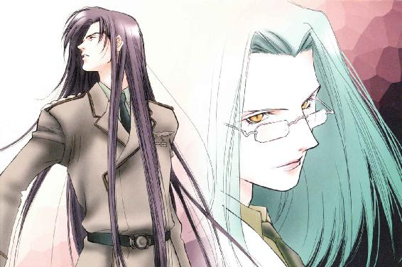
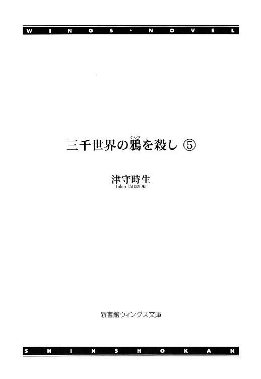
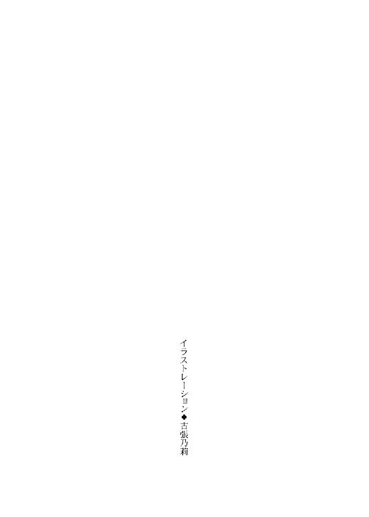
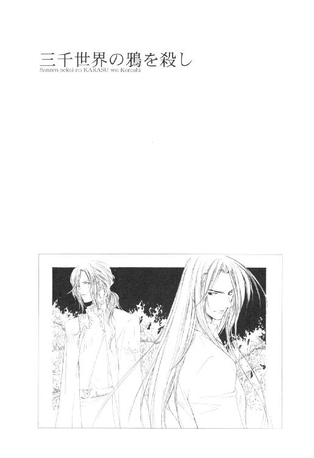
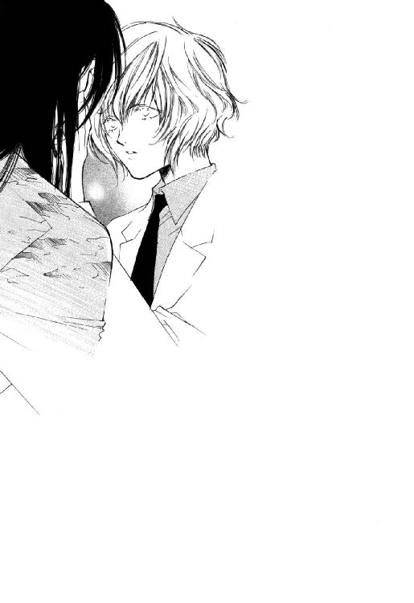
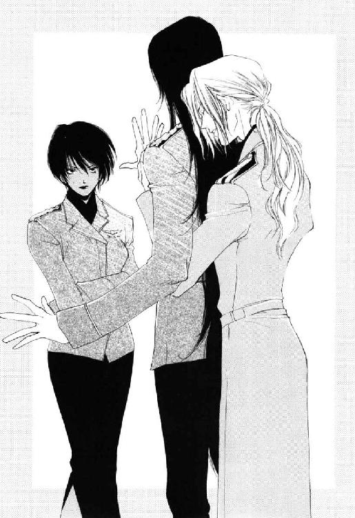
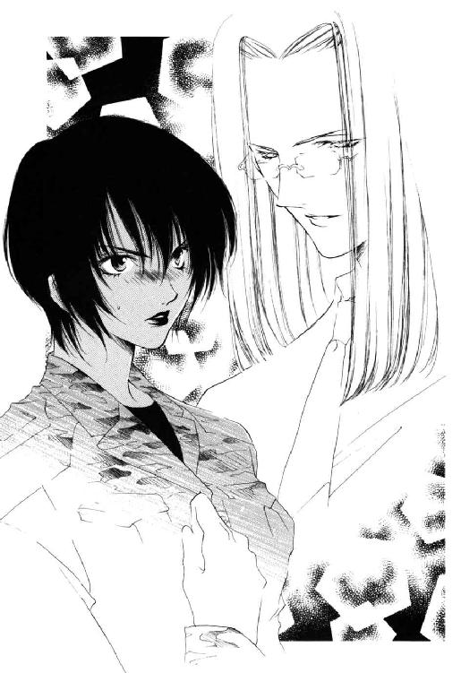
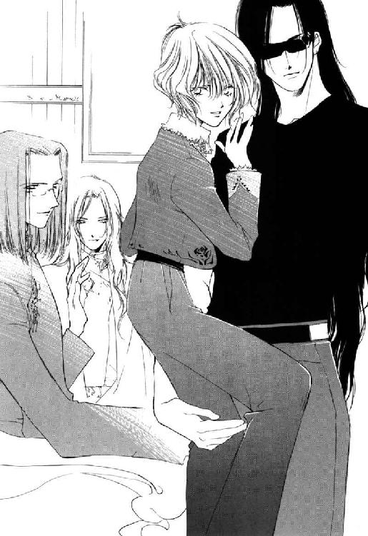

| 三千世界の鴉を殺し(5) (ウィングス・ノヴェル) | |
| 津守時生 | |




１
深夜に行なった緊急の精密検査の結果、脳に異常なしと診断されたルシファード・オスカーシュタインは、特別任務の翌日の未明、司令官室まで出頭するよう命令を受けた。
報告は、彼の補佐についたメリッサ・ラングレー大尉が代理で行なっている。
倒れた部下の再検査の結果を待ったところで、たいして違いはない。それをこんな時間に呼び出すことからして、市当局から激烈な非難を受け、周章狼狽する司令官の小心ぶりがうかがえる。
ルシファードは気にしなかった。倒れた原因の激しい頭痛が消えた今、どんなトラブルにも対処できる。頭の中に保身という単語しか入っていない上官の相手など、トラブルの名にすら値しない。
この四十年間一度も命がけの任務がなかった基地の危険と興奮に満ちた長い夜が、もうすぐ明けようとしていた。
「結局つき合わせちまったな。すまない、ドクターたち」
「まったくだ」と、白氏族の内科医カジャ・ニザリが、疲れたかすれ声で相槌を打つ。
激しい頭痛に苦しんだルシファードが無意識に発した精神感応は、テレパシストのカジャだけではなく、入院患者の中で潜在能力があるものにまで被害をおよぼした。
自分の能力もコントロールできない迷惑千万な男のために、就寝中に叩き起こされた気の毒な患者の正確な数はわからない。が、少なくとも確実にふたりは存在する。
強い痛み止めを求めて病室を出て行った内科医は、薬局に向かう途中で携帯端末に緊急の呼び出しを受けた。突然激しい頭痛に襲われたあげく、心臓発作を引き起こした内科の患者がいるという。
当直の医師や看護婦たちとともに一時間以上、一度は心臓の止まった患者の救命治療に当たったのち、ルシファードの病室に現れたカジャは、疲労困憊のあまりに時折足元がふらつくありさまだった。
その頃には、すでにルシファードの頭痛は治っていたので、わざわざ戻ってきたのは心ゆくまで嫌味とうらみごとを並べるためだったのだが──。
「司令官殿のところへ行くなら、私も一緒にいこう。君の活躍のすべてを知りたいし、司令官殿の攻撃から君を守ってあげられるからね」
緑色の軍服を着たニコラルーン・マーベリック少佐は、ルシファードの迷彩服の片腕に自分の両腕をからませ、楽しげな笑顔でその長身に寄り添った。
二十年前からの知り合いという間柄のせいか、ラフェール人はことあるごとに親密な態度をとる。
客観的に見ても、いささか目のやり場に困るほどの過剰なスキンシップは、たちまちラフェール人嫌いのカジャの癇にさわった。
「どんなところでも外交官気取りか。本当にラフェール人は出しゃばりで見苦しい。見ているこちらが恥ずかしくなってくる」
「謀略に血道を上げる白氏族より、よほど周囲のためになっていると思うけれどね。実に白氏らしい陰険な性格なのは君の勝手だけど、他人の善意の行ないに対し、薄汚い悪意の解説をつけないで欲しいな」
にっこり笑ったニコラルーンが、カジャの侮蔑に対して毒のある言葉を返す。
銀河連邦に加盟する種族の中でも歴史の古さで一、二を争う白氏とラフェール人は、いつの頃からか白氏が一方的にラフェール人を嫌い、時には排除を画策するようになっていた。
自分を嫌う相手を好きになる人間はいない。本来争いを好まない温厚なラフェール人たちも、今では露骨に白氏をうとんじている。
そして、現在ラフェール人の中心的存在であるニコラルーンは、恋人を白氏に殺されたために、白氏すべてに対して抱く憎悪を隠そうとしない。
カジャが病室に戻って以来、このふたりの陰険なやり取りは、ルシファードが何度中断させてもくり返された。しまいに彼が面倒になって仲裁を放棄すると、双方とも口が達者なだけに不快な会話は延々と続く。
黒髪の大尉は仕方なく今回も強引に割って入った。
「はいはい。おふたりとも活発なのはよろしいのですが、険悪な種族交流はそこまでにしてくださいましね。──ニコル。俺は宿舎に戻って着替えていくから一緒に行けない。それに自分の頭のハエくらい自分で追えるよ」
ザマをみろとばかりにカジャが舌を出し、即座にラフェール人が言い返そうとしたが、機先を制してサラディンが口を開く。
「そのハエとは、ブレッチャー司令官のことですか？」
同じく病室にいた副官のライラが、その質問を聞き心の中でうめいた。
いぶかしげな口調からして医師に他意はないらしい。それでもそんな危険な部分への突っ込みはやめて欲しかった。
案の定──。
左遷でこの基地に飛ばされてきた不良将校は、しばし考えたのち、てへっと笑って口の前で人差し指を立てる。
「ナイショ♡」
「......ルシファード......」
ライラは片手に顔を埋め、弱々しくうめく。このメンバーなら口外される危険はないと思ったのだろうが、もう少し如才なく大人に振る舞って欲しい。
しかし、続く外科医の言葉はさらに彼女を追いつめた。
「大丈夫ですよ、キム中尉。ウジ虫よりはマシですから」
「......どのあたりがマシなのか、おうかがいしてもよろしいでしょうか、サー？」
「ハエはウジ虫が成長したものですから、成長しているだけマシです。羽があるぶん視野が広いという好意的な解釈も成り立ちますしね」
ニコラルーンがサラディンに代わって説明してくれる。
「ご明察です、ドクター・マーベリック」
同じ医師だとわかった気安さなのか、それとも通底するものが似ているのか、サラディンと彼は気が合うらしく、穏やかに微笑み合う。
それが気に入らずカジャが口をはさむ。
「ハエくらいなんだ。ウチの病院長のヴァン・ユーなどウジ虫どころか大腸菌だぞ」
「そんな辛辣なことを言ってはいけませんよ、カジャ。ひとに有益な大腸菌も存在するのですよ。いくらなんでも、あの守銭奴の病院長と同列にされては大腸菌がかわいそうでしょう」
「そうだったな。今度顕微鏡で大腸菌を見たら謝っておこう」
──すさむわ......とっても。
この場で唯一の女性であるライラは、宙に視線を泳がせた。
上官を含めて、この場にいる四人は全部タイプの違う美貌の男たちだった。一生のうちに一度出会えるかどうかというレベルの彼らが一同に会した現在の光景は、女として眼福の極みだと言っても過言ではない。
なのにだれひとり中身がまともではないというだけで、ここまで荒涼とした気分になるものだろうか。
「さて。あんまり待たせるとブンブンうるせえから俺は行く。──ライラ、マーベリック少佐殿を宿舎にお送りしてくれ」
さりげなく〝ハエ〟にこだわったルシファードは、ラフェール人の腕からおのれのそれを引き抜いて歩き出す。
そして通りすがりにカジャの体へ手をかけると、小さな子供にするように左肩に抱き上げた。
「う、うわっ！ いきなりなにをする、無礼者っ！」
「暴れんなって。落としちまうだろ。フラフラして危なっかしいから、頭痛を感染したおわびに内科まで送ってやるよ」
「いらぬお世話だ。降ろせっ！ 降ろせったら降ろせっ！」
耳まで真っ赤になったカジャが、両拳で迷彩服の広い背中を乱打する。
「素直に大尉に運んでもらいなさい、カジャ。本当に今にも倒れそうですよ」
「よけいなお世話だっ。外科の空きベッドを借りて仮眠するからいい」
「どうせなら内科の空きベッドを使えばいいでしょう。そんなに気にしなくても、この時間ならほとんど目撃者はいませんから」
サラディンが笑って勧めるあいだにも、ルシファードは歩き出す。
その後ろ姿に向かって、冷ややかな笑みを浮かべたニコラルーンが言った。
「ルーシー。それは、あの白氏なんだよ。ラフェール人の血を引く君としては、もう少しあつかいを考えてくれないと」
「俺はただの一軍人だ。どうして種族紛争なんて面倒なモンに俺を巻き込もうとするんだよ。それでなくとも白氏と対立関係にある親父のからみで、三度も暗殺されかけたんだぜ。もう充分だ。こんな辺境惑星まできてラフェール人も白氏もあるか」
「暗殺？ 白氏どもが君を殺そうと？ Ｏ２は知っているのか？」
白氏の医師をかかえたまま、男は軽く肩をすくめる。
「一応連絡はしたが、なにも言ってこなかったぜ。全部事故死に見せかけて返り討ちにしたから、隠蔽工作の必要もなかったしな」
「......君の抱いているそれが、四人目になるかもしれないね」
優しげなラフェール人の声音には、ライラが思わず顧みたほど不穏なものがひそんでいた。
「だとしても、あんたは手を出すな。これは俺の問題だ」
「ほう。かばう気なのかい。でも、念動力ではテレパシストに勝てないよ」
「テレパシーで落下する鉄骨を止められなかったティーロ・ニザリも、そっくり同じセリフを言ったぜ」
さきほど廊下ですれ違った知り合いについて話すような軽い口調だった。
はた目にもはっきりとカジャが身をこわばらせるのがわかる。
男の口から出たニザリという姓にはサラディンも衝撃を受けたが、医師がなにかを言う前にルシファードは再び口を開く。
「──ニコラルーン。忠告しておくが、俺は相手がラフェール人だろうと白氏だろうと、敵ならためらわず殺す。だから、ちょっと俺をからかうつもりで軽々しく敵に回ったりするなよ」
彼は薄く笑っていた。少し低めの声で、内容が正確に伝わるようにゆっくりと話す。
ニコラルーンの隣に立っていたサラディンは、彼から得体の知れない脅威を感じて総毛立つ。
表情と声。ほんのわずかな違いしかないのに、自分が知っているルシファードとは別人のような印象を受けた。
柔和なラフェール人が友人の変貌をどう受け止めているのか気になり、サラディンは首をめぐらせる。
医師の予想に反してにこやかに笑っている男は、華奢で両性具有的な外見に似合わず、強靱な神経の持ち主らしい。
「いやだなぁ。そんなに凄むとこわいじゃないか。不意打ちなら私にも充分勝機はあるつもりだけど、白氏のことで君と殺し合うほど酔狂ではないよ。それにしても口調といい好戦的なところといい、ますますお母さんそっくりになってきたね」
「戦うと決めたら即座に徹底的にやれとフリーダに仕込まれたからな。もういいんだろ？ 俺は行くぜ」
「またね～」
蒼白なカジャをかかえた黒髪の将校は、にこやかに手を振るニコラルーンをうさんくさげに見遣ったのち、病室を出て行った。
カジャの心情を察して心配したサラディンだったが、呼び止めるきっかけを得られないまま、ふたりを見送る。
「──とは言ったものの、気に入らないんだよねぇ」
「マーベリック少佐。カジャは......ドクター・ニザリは軍病院にとって必要な人材です。どうか、めったなことはなさらないでいただきたい」
向き直って厳しく言い渡す蓬萊人の琥珀色の目と、ラフェール人の明るい碧眼のまなざしがからみ合う。
軍の中央本部から派遣された情報将校は、それに直接答えを返さず、天使の末裔という呼称にふさわしいつかみどころのない微笑みを浮かべて言った。
「友人と彼。あなたもなかなか複雑なお立場のようですね。よくあるケースとはいえ、深くご同情申し上げます」
「どういう意味でおっしゃられているのか、あいにく私にはわかりかねます」
「あ、いかに私がテレパシストでも、任務と関係のない状況で他人の心を読むような非礼は、断じてしておりませんよ。純粋に見たまま感じたままを申し上げているだけです」
「そのような言い方自体、すでに充分非礼だと思いませんか？」
「これは失礼をいたしました。あなたにご不快な思いをさせるのは、こちらの本意ではなかったのですが......」
終始突き放した物言いを通すサラディンに対し、ニコラルーンも本心のうかがえない笑顔で応じる。
慇懃無礼ではあるが、それを意識させない不思議な魅力が相手にあることを医師は渋々ながら認めた。
立ち居振舞に若々しい華があり、多少辛辣なセリフを吐いても、どこかいたずらっぽいユーモアが漂う。あまり他人から憎まれそうにない得なキャラクターだった。
「ご心配なさらずとも、あのレベルの白氏に本気にはなりませんよ。偏執的な白氏どもと違い、私は弱い者いじめがきらいなんです。久々に会ったルーシー坊やの機嫌を損じるのも楽しくないですし。せいぜい目の前でルーシーにベタベタして、不愉快な思いをさせる程度にとどめておきましょう」
「あなたとお会いして、ラフェール人に抱いていたイメージがずいぶん変わりました」
「うわ、それは大変だ。私はラフェール人の中でも特別な変わり者なんです。どうか私を基準になさらないでくださいね。同胞に怒られてしまいます。第一、情報将校が善良な平和主義者ではつとまるはずがないでしょう。──ねえ、キム中尉？」
穏やかに言葉をかわしながら、裏で火花を散らす美形同士の会話に内心うんざりしていたライラは、いきなり振られた話をうまく利用した。
「イエス・サー。お言葉はまことにごもっともです。ところでドクターもお忙しいことですし、そろそろ少佐殿を宿舎にご案内したいと存じますが」
「そうだね。私に提供されたのは独身将校用宿舎Ｆ棟の空き室だ。ルーシーや君と同じ宿舎だと聞いたよ」
人の悪いラフェール人は、女性士官の驚いた表情を見てご満悦だった。
──なんだか、不必要に人間関係が入り組んでいる気がするんだけど......。
もめ事が尾を引きそうな悪い予感がして、ライラはひそかにため息をつく。
ルシファードのセリフではないが、自分はただの一軍人なのだから、あまり複雑なトラブルに巻き込まないで欲しかった。
一方、いまさら拒絶することもできず、人気のない未明の廊下をルシファードに運ばれていくカジャは、ずっと体を硬くしていた。途中でかかえる姿勢を変えられたので、よけいに顔を上げられない。
病院内の空調は適温が守られている。それでも体が小刻みに震えてくるのは、疲労と寝不足からくる体温の低下ばかりではない。知ったばかりの事実の衝撃は、肉体にも大きな影響を与えていた。
ほとんどしないにひとしいかすかな靴音だけを耳にしているうち、どうしても我慢できずに小さな声でたずねる。
「......とに......たのか？」
「ん？ なに？ もー一回」
「本当に、私の弟を殺したのか、と聞いているんだっ」
「弟ぉ？ だって......あ、そかそか。白氏ってのは能力の大きさで成長の止まる時期が違うんだっけな。ああ、殺した殺した、ペッタンコにして。無意味かもしれんが、正当防衛だったことは主張しておくぞ」
身構えたこちらが拍子抜けするほど軽い調子の返事だった。肉親のカジャと一緒にいても、罪悪感を感じているようすはかけらもない。
「......私が以前に病室に忍び込んだ時、暗殺しにきたと思ったのか？」
勇気を振りしぼって言った彼の言葉が終わるより早く、男は横を向いて小さく吹いた。
疲労で青白いカジャの頰に束の間、血の色がのぼる。
「なぜ笑うっ！ どうせ白氏の出来損ないの私などが、そんなことを考えるだけ生意気とでもいうのかっ」
「違うって。あんたはひとの命を助けるお医者さんだろ。暗殺だなんて言葉、すげえ似合わねえよ。ひとを殺す訓練を受けている人間と、そうでない人間の区別くらいつくさ。俺はそっちのプロだからな。......まぁ、趣味で人殺しをするアマチュアもいるにはいるが」
「あのマヌケなラフェール人は、白氏は全員そっちだと決めつけているな。おまえだってそう思っていたし」
病室で取り押さえたカジャをおどしたルシファードは、それをわびて〝白氏はみんな同じだと思った俺の失敗でした〟と告白した。
「おや。まぁだ根に持ってんのか、ベンは」
「だれがベンだっ！」
「しようがねえだろうよ。あんたをのぞいて今まで出会った三人の白氏全部が、快楽殺人狂の変態だったんだぜ。おまけにニザリってファミリー・ネームだもんな。疑いもするわな。あんたが兄貴だっつーなら、弟のヤバい性癖を知っているだろ？」
しばし沈黙したのち、白氏の内科医は小さくうなずく。
「......殺人狂とまでは思わなかったが、あいつはとても陰湿で残忍なところがあった」
「俺に敵討ちしたいか？」
わずかに笑いを含んだ楽しげな語調からして、本気で質問したわけではない。
カジャは大きくかぶりを振ると男の首に腕を回し、きつくしがみついた。
「......私にその力があれば......私があいつを殺したかった......！ あのひとでなしが私にしたことは一生許さない......っ」
ティーロの名前を聞いた時から、忌まわしい屈辱の記憶が次々と甦り、苦しくてならない。
長老たちに可愛がられたティーロには、自分より年下の外見で成長を止めながら、その実、ろくな力もない兄の存在が目ざわりだったのだろう。ある日、長老の祝い事に集まった大勢の一族の前で、さらしもの同然にカジャをなぶった。
以来、同族の笑い者にされる屈辱に耐えられなくなったカジャは故郷を捨てたが、放浪の生活はさらに多くの傷を彼の心に残した。
白氏の威光がおよぶ場所では実力以上の敬意を受け、さほど力がないと知られたとたん手のひらを返される。白氏のなんたるかを知らないものたちは、外見通りに子供だと思い込み、まともな扱いをしない。
いつも損ばかりしている。
相応の力もないのに早く止まってしまった成長のせいで。あるいは、たいしたレベルでもない精神感応力が他人の思惑を読むせいで。──こんな中途半端の自分がきらいだった。
ルシファードは、カジャから不意の激情が去るのを待って静かに言った。
「肉親っていうのはいたらいたで、いなきゃいねえで葛藤があって、実にやっかいなモンだよな。相手が他人なら、きれいサッパリ切り捨てられるんだが」
いつものくだけた言葉遣いと、それに相反する声音の重い響き。
なぐさめとも共感とも受け取れる作為のない言葉は、自分でも意外なほど簡単に心の奥へ納まった。
次々と連鎖反応的に思い出し、自分ではとめられなくなっていたつらい時代の回想が、そこでやっと断ち切られる。
カジャは安堵し、同時に型破りなこの男ですら肉親との葛藤から逃れられないのだと知って意外に思う。
──いや。父親があのＯ２では無理もないか......。
かつて自分は、そんなルシファードを指して〝化け物の息子も化け物〟だと外科主任に言い切った。
後悔と自己嫌悪の念が押し寄せる。今度はそれがいたたまれなくて、男の首へ回した手に力を入れた。
白氏の行動を誤解したルシファードは、低い声で優しくなだめる。
「あっちは死んで、あんたはこうして今も生きているんだ。最後に勝ったのはあんただぜ。それでいいじゃねえか」
生きているからこそ続く苦しみもあるという悲観的発想が、この男には全然できないらしい。
だが、いたずらにマイナス思考でおのれを傷つけるより、よほど健全な精神だった。
声の質も優しい語調も語りかけてくる言葉の内容も、耳に入るすべてが心地よい。なによりも、高いレベルで安定しているこの男の精神に触れると、感情の不快な昴ぶりが静まっていく。
非常識な長い黒髪は、手のひらで触れてみると見た目から想像する以上になめらかな手ざわりだった。適度な冷たさとあいまって、手のひらに快感さえ覚える。
膝裏に達するほど伸ばしながら毛先までつやがあり、目立つ傷みはまったくなかった。ここまで質が違うと種族的な体質が関係してくるのだろう。サンプルに何本かもらって、地球人や自分のそれと比較研究するのは面白いかもしれない。
三十九年前、偶然に触れたマリリアード・リリエンスールの髪も、今と同じ驚きをカジャに与えた。
その記憶をたどる時、穏やかな低い声もともに甦る。
〝今度の旅行から戻りましたら、ディンゲル星のオペラの観劇にお誘いいたします。ディンゲル人の歌姫ファンズワースは、アルテュス星系一というマニア連の話ですから、オペラには一家言あるあなたのお気に召すと思いますよ。ぜひにご一緒いたしましょう〟
音楽好きに事寄せて、同族から孤立しがちだったカジャをよく連れ出してくれた。妙な虚勢を張らず自然体でつき合えた友人は、片手の指でさえあまる。
だが、ある星の独立記念式典に招かれたラフェール王家直系最後の王子は、その帰路の途中、二度と帰らぬひとになってしまった。
王子ではなく、同じ宇宙船に乗り合わせて重傷を負いながらも助かったＯ２のほうが死ねばよかったのに──と思った白氏は多い。
そのひとりだったカジャは、だからＯ２の息子であるルシファードの存在が、最初から気に入らなかった。
なまじ面影の重なる容姿と長い黒髪が、逆に中身の違いを鮮明にする。下品で野蛮で無神経な言動の数々は、本当にいらだたしく許しがたい。
それなのに──。
どうして自分の心臓はマリリアードの髪に触れた時より早く鼓動を刻むのだろう。無造作に抱き上げて運ぶ腕の中では、とてもやすらかな気持ちになれる。
ほのかに甘い気分に浸っていられたのは、興奮が冷めて冷静に戻るまでのわずかなあいだだけだった。
いきなり抱きついた自分の行為に説得力のある言いわけが見つからず、さりとて身を離して平然と相手の視線を受け止める勇気もない。
困惑を通り越して混乱し、動きのとれないカジャにルシファードがささやく。
「ドクター？ 眠ったのか？」
「疲れて動きたくないだけだっ。だれがこんな恥ずかしい格好で眠るか。おまえ、私を子供扱いにするのもいい加減にしろ」
「起きているなら、エレベーターのボタンを押してくれ。押すだけなら髪の毛でできるが、何階の内科に行きたいのか知らねえから」
髪を手の代わりに動かすという言葉が、カジャの秘めたときめきを台無しにする。
「気色が悪いことを言うやつだな。両手がふさがっているからと普通に言えんのか」
「相手が同じ超能力者のあんたなのに気取る必要はねえじゃん」
他意のない語調だったが、カジャは再び罪悪感を刺激された。すぐに到着したエレベーターに乗り込む時、思い切って口を開く。
「......先日言ったことは悪かった。許しがたい暴言だったと反省している」
「なんだっけ？」
「......君を化け物と呼んだことだ。すまなかった」
二階下に行くパネルに指を触れる医師の声は、小さく震えていた。
「ああ。言われてもしようがねえよ。本当のことだしな」
「だけど、君は怒っただろう」
それなりの反省と覚悟をした上での謝罪をいとも軽く受け流され、頭をもたげた反発心が口調をとがったものにする。
「あんたに怒ったワケじゃねえよ。化け物って言葉を聞くたび、昔の親父に言われたセリフを思い出してムカつくんでな」
「Ｏ２が君をそう呼んだのか......！」
目的の階に到着して扉が開いたため、カジャは驚きと怒りに大きくなりかけた声をあわててひそめる。
「......あの男に君をそう呼ぶ権利はない」
「違う違う。親父が自分と同じ化け物の息子に、先輩としてありがたい忠告をしてくれただけだ。〝気をつけろ。お前は化け物だからな〟ってな」
「なにを気をつけろと言ったんだ？」
「さてな。実のところ、どういう場面を想定して言ったのか、イマイチわからねえんだ。ガキの頃、なんの脈絡もなくポツンと投げやりに言われた。子供心にわかったのは、親父が普通人と自分のあいだに見えない厚い壁を築いているってことくらいで......。あのセリフを思い出すたびにわけもなくムカつくんだよ。もちろんマジに面と向かって俺を化け物と呼びやがったやつには、ちゃんと相応のお返しはしますケド」
これがＯ２以外の男の話なら、子供にさえ切ない思いをさせた独白に対し、カジャも同じ超能力者として共感を覚えただろう。
「超能力の有無に関係なく、あの男は性格的に好んで孤立しているのだと思うぞ」
「まったくだ。いやがらせや陰口にヘコむほど可愛い性格してねえしな。だからこそ、ずっと引っかかっているワケなんだが。俺の場合、気をつけなきゃならねえのは圧倒的にまわりの人間だろ？ 俺自身が気をつけようにも、あっと思った時にはブッ壊しちまったあとだもんな」
「少しは反省しろっ。悪びれないところといい、君たちは実によく似た親子だな。その態度が無用の偏見を招くんだっ。社会の迷惑という言葉を知っているか？」
「ベンにそれを言われたくねーなぁ」
「だれがベンだっ！ 私は自分の超能力で他人に迷惑をかけたことなどないぞ」
カジャはむきになって、笑いを含んだ相手の言葉に反論した。
「この基地内に限定するなら、あんたたちのほうが社会に対する脅威だろ」
「もしや君の言うあんたたちとは、私とサラのことか？ 冗談ではない。正真正銘の変態であるサラと私を一緒にするな」
「うーん。不治の病かもしれんが、症状の自覚は治療の第一歩だぜ、ドクター」
「なにが不治の病だ、こら。あの解剖マニアと茶飲み友達だからといって、私まで異常者あつかいされるのは、すこぶる心外──」
本気で抗議していたカジャは、途中で言葉を切った。
内科の入院患者を収容した病室が、廊下の両隣に続いている。もう少し進むと夜勤の看護婦たちが詰めているナース・ステーションがあった。
「ここでいい。降ろしてくれ」
「遠慮するなよ。ベッドまで運んでやるぜ」
「恥ずかしいから、それがいやだと言っているんだっ！ 内科のスタッフたちにも心配をかけたくない」
少ない人数で多くの仕事をこなさねばならない夜勤はきつい。もうすぐ勤務交代の時間を迎える彼女たちに、これ以上の負担はかけたくなかった。
黒髪の大尉は内科主任医師のスタッフを気遣う心情を察し、それ以上はなにも言わずに降ろしてくれた。
だが、迷彩服を肘までまくった士官の腕の支えが外されたとたん、自分の体重を負担できずに膝が笑う。貧血も起こしかけ、目の前が暗くなる。
倒れかかった白衣の体をもう一度ルシファードの腕が抱き上げた。
「見栄張り却下。そんな足腰立たねえありさまで、まともに仕事に戻れるか！ ナースたちにしっかり心配してもらえ」
「ば、ばかっ。大きな声を出すなっ！」
あわててたしなめたが遅く、夜勤の看護婦が何事かと詰め所から顔を出した。
士官の腕に抱かれた主任医師の姿を見て目を丸くし、小走りに駆け寄ってくる。
「ニザリ先生！ どうなさったんですか」
「過労で倒れる寸前だ。空いているベッドはあるか？」
よけいなことを言うなと制止する前に先を越され、カジャは虚勢を張る気力が萎えた。
自分の体を含め、思い通りにならないことばかりで嫌気がさす。癇癪を起こす気力がわいてこないのは、自覚している以上に肉体と精神が限界に近づいてきているせいだろう。
夜勤の看護婦は、空いている病室に案内すると、点滴の用意をするためにふたりを置いて、すぐに出ていった。
「いい。そのくらい自分でできる」
寝台に座らされたカジャは、手を貸そうとする男の助けを断り、緩慢な動きで白衣のボタンをはずしていく。
ルシファードが明るく言った。
「しっかり休養を取れよ、ドクター。内科主任が倒れるところを患者に見られでもしたらヤバイぞ。医者が自分の病気を治せないようじゃ、軍病院はヤブだってウワサが立っちまうぜ」
「よけいなお世話だ」
言ってしまってから後悔する。どうして自分は、気遣う相手へ素直に感謝する言葉を返せないのか。
うつむいてほぞを嚙む白氏の気も知らず、大尉は無造作に右手をのばし、羽毛のような白い巻毛の頭を乱暴になでる。カジャの自己嫌悪など軽く一蹴する大らかな行為だった。
「それじゃ、俺は行くから」
大きな手のひらの重みが消えかける。
カジャは考えるより早く、離れていこうとする男の手首をつかんでいた。
「うん？」
「......わ、私にも......君の目を見せてくれないか」
なにか言わなければと思い、普段なら決して言わないことをとっさに口走った。自分でも内心驚きながら、内容を不自然なものにしないよう、さらに重ねて言う。
「私だって〝日蝕眼〟を見たい。いくら身長の問題があるにしても、サラにばかり見せるのはずるいぞ」
なんだか言い方が妙に子供っぽくなってしまったと思うのと、ルシファードが破顔するのは同時だった。
スクリーン・グラスをはずしながら、
「アイ・サー。お気のすむまでどうぞ」と、快諾し、寝台に座るカジャの目の高さに合わせて身をかがめる。
息がかかるほど間近に迫った美貌の素顔に内心たじろぎつつ、虚勢を張って平然とした態度を装う。
かがんだことで長い黒髪が肩からすべり落ち、その流れがカジャの肩や腕に触れる。
それを手の甲で脇へ押しやり、姿勢を安定させるため相手の顔をはさむように両手を添えてのぞき込んだ。
以前に闇の中で見た時は恐ろしかったが、改めて目にすると予想以上に神秘的な双眸だった。
黒い瞳孔と黒い虹彩。それらをへだてる黄金の環は放射状に輝き、太陽のコロナを連想させる。日蝕眼とはよくぞ名付けたと思う。暗黒の空を背にした金環蝕の恐ろしくも恍惚とする異様な美しさを持っていた。
長く見入っていると、魂を抜かれてしまいそうな陶酔感を覚える。

漆黒の深淵は相応の覚悟をして見つめてもあらがうのが難しいほど、すさまじい磁力を持っていた。美貌もさることながら、日常的にスクリーン・グラスで隠す必要があるのは、おそらくこの目の力だろう。
父親似の顔立ちはマリリアードともよく似て端整だが、目が大きく違う。
銀灰色だった王子の目は、時にメタリックな冷たい光を帯び、近寄りがたい非情な印象を周囲に与えることがあった。いつもは人当たりのいい彼が、今の自分に対して不用意に近づくなという無言の警告だった。
ルシファードの目は自分の意志を表示する器官ではなく、相手の意志を奪って金縛りにする逆の作用がある。迷信深い人間は、この目を〝邪眼〟と呼ぶに違いない。
常人離れした美貌に悪魔の王の名、そして邪眼。あまりにはまり過ぎだった。
その意味において、この男が人前でスクリーン・グラスをはずさないのは正しい。
そう思うと同時に、自身も魔物のごとき美形であるサラディンが、人目もはばからず夢中になって眺めていた気持ちもよくわかる。
この目が、見るものの精神におよぼす影響をさまざまな角度から研究したいと考えるのは、科学者でもある医師として当然の欲求だった。
ルシファードが不意にくすっと小さな笑いをもらす。
「なんだ？」
「いや。うまそうな色だと思ってさ」
なんのことかわからず当惑したカジャは、続く相手の言葉で意味を知る。
「オレンジ味の大きなキャンディみたいだな。なめると甘かったりして」
「......なっ......！」
真っ赤になって上体を遠ざける。
自分が相手の目をのぞき込むというのは、自分の目も相手に見つめられているという当然のことを失念していた。
それ自体は別段かまわないが、眼球をなめるなどという倒錯的なセリフに激しく狼狽する。
ルシファードは笑って身を起こし、たたんで胸ポケットに差し込んでいた黒い眼鏡を取り出しながら言った。
「心配するな、ドクター。そんなガキっぽいマネはしねえよ。痛い目に遭わせて悪かったな。ゆっくり休んでくれ」
自分で口にしたセリフの危うさに気づかず、たいそうお子様な解釈を披露した男は、再びスクリーン・グラスをかけながら歩き出す。
いましがたきたばかりの別の夜勤の看護婦に対し、戸口ですれ違いざまに声をかけて去った。
「ドクター・ニザリが起き出して働かないよう、ちゃんと監視していてくれな」
点滴用のスタンドに手をかけた年若いナースは、頰を紅潮させてうなずく。
残されたカジャは、脱いだ白衣とはずしたネクタイをヘッドボードにかけ、入院患者用の寝台に横になった。
確かに肉体はとても疲れていたが、気が昂ぶっているために眠気はない。目を閉じ安静にしていると、さまざまなルシファードの言葉や口調が耳に甦る。
いくらカジャの外見が十五歳程度でも、中身が百五十歳だと知れば大半のものは態度を改めた。その上、中佐という階級を有する人間は、カジャのほかに基地内には六人の連隊長と副司令官しかいない。
それを知っていながら、ぞんざいな言葉遣いを改めないどころか、ペットのウサギになぞらえるあの男の傍若無人な態度には心底あきれる。
出会った最初から、翻弄され通しだった。──それがいやではない自分を認めるのは勇気がいる。
認めたところで、どうなるものでもない。あの男は青緑色の髪をしたカジャの友人の思い人だった。
そして、とても軍人らしくない奔放なあの男の関心は、いつもその友人の上にある。
口に出して両方とも失うくらいなら、黙っていようと思う卑怯で中途半端な自分がきらいだった。
唯一の友人のそばにいる限り、こうしてルシファードのまなざしが自分に向けられるなら、それでいい。切なくはあったが、カジャは多くを望まないことに慣れていた。
しかし、彼のささやかな願いにもかかわらず、この時の夜勤のナースたちは、ルシファードの言葉の断片をもとにして、大変いかがわしい作り話を生み出した。
意識的に事実を歪曲された話は、刺激と娯楽に飢えた同僚たちや患者、内科の女性医師たちの間へその日のうちに広まる。
やがてそれは、内科のみならず外科も巻き込んだ騒ぎに発展していった。
２
テレパシストのニコラルーンは、自分の能力を使って勝手にルシファードの部屋のロックをはずし、中に入っていった。
独身士官の宿舎は全室同じ作りで、リビングと寝室の二間しかない。それでも下士官や一般兵士用の宿舎よりはずっと広く、ソファなど備えつけの家具も装飾をかねた上質なものが選ばれている。
キッチンはないが、部下や同輩と話し合いを持つ場面を想定し、飲料ディスペンサーと流しを組み込んで作られた食器棚がある。
カフェテリアからの配達やテイクアウトでの軽食の持ち込みは認められているので、茶器のほかに最小限の食器も置かれていた。そこへ愛用のマグカップを持ち込んだところで、規則違反にはならない。
転任の多いルシファードは、特に私物が少ないのだろう。備えつけの家具以外、壁にポスター一枚貼られているわけでもなく、殺風景で生活感に乏しい部屋だった。
ニコラルーンはラクロワ副司令官の配慮で、一階上の空き室をこの基地での宿舎として提供されている。
隣部屋のライラが、上官の部屋を間違えて教えたのかと疑いたくなるほど、この部屋は自分に与えられた空き室とまったく印象が変わらない。
子供の時からルシファードには情緒面で多くの欠落部分があると感じていたので、少しでも暮らしやすくしようとする人間的な工夫の見られない部屋のありさまを見ても、さして驚きはしなかった。
寝室に入り、一流ホテル並みの完璧にベッドメイクされた寝台を見て感心する。シワひとつないシーツは、端を折られてマットの下に納められ、表面にコインを落とせば、おそらく正確に十センチ弾む。
母親の厳しい教育方針で、もともと自分のことは自分でできるようしつけられた子供だった上に、軍の教育も徹底していたらしい。
学都惑星で医師の資格を取ったあと、特殊技能者向けの短期士官養成学校へ入れられたニコラルーンには、軍隊における集団の規律というものが苦痛でしかなかった。
それに続く情報将校の教育も過酷で非人間的だったが、個人として扱われた分、ずっとましだったと思う。
特殊な教育を受けた養父の影響が大きく、ラフェール人の中でも異端を自認する自分ですら、六ヵ月という短期訓練を耐えるのがやっとだった。普通のラフェール人が軍隊生活を送るなら、一ヵ月ともたずに神経がまいってしまうだろう。
入隊したルシファードの活躍をうわさで耳にしても、辣腕で名高い情報部部長Ｏ２とフリーダム・ゼロの息子なのだから、軍人として優秀なのも当然だと思っていた。
だが、この基地にきて成長した彼を我が目で見た瞬間、ニコラルーンはおのれの間違いを直感的に悟った。
あれはおそらく〝先祖返り〟──。
ドアが正確な暗号の入力に反応し、ロックを解除する音が聞こえる。部屋の主人のご帰還らしい。
いまさらリビングに引き返すのもわざとらしいので、寝台の縁に腰かけて待つ。
まっすぐ寝室に戻ってきた黒髪の男は、寝台に座っている父親の部下を見ても表情を変えなかった。
「お帰り。白氏の坊やを寝かしつけるために子守歌でも歌ってきたのかい？」
「坊やって言っても、ドクター・ニザリはあんたより百歳近く年上なんだぜ。それに種族紛争なんぞ興味ねえから、俺にそんな憎まれ口をたたいてもムダね」
ルシファードは壁に作りつけになったクロゼットのボタンを押して開け、ハンガーに秩序立てて吊した軍服の一着を取り出すと、無造作にベッドの上へ放る。
続いてワイシャツに下着、靴下と靴──着替えに必要なものを選び出してから、仕上げにスクリーン・グラスもはずして投げ、都市迷彩柄の戦闘服を脱ぎ始めた。
治療のために袖を切られ血もついた上着は、簡単にたたんでゴミ箱に放り込む。
布製ベルトから拳銃のホルスターや万能ナイフなどの武器を手早くはずし、サイドテーブルの上に並べていく。抜き取ったベルトは、クロゼットのフックにかけた。
半袖のＴシャツを脱いだ時、首から下げた認識票が、よく筋肉の発達した胸の上で小さな音を立てた。
足を組んで座るニコラルーンは、目をそらすどころか遠慮のない視線で相手の着替えを眺めている。
「邪魔している身で言うのもなんだけど、人目を気にせず大胆に脱ぐね、君は」
「十二年も軍隊で暮らしている男にまともな羞恥心なんぞあるかよ。目の前で全裸の男たちがマラソンをしていたところで、異常だと思わねえのが軍隊だぜ。もちろん目には楽しくねえけどな。医者のあんただって似たようなモンだろ？」
「まぁね。ヌーディストの集団マラソンは断じて願い下げだが、君の骨格には大変興味がある」
「ドクター・アラムートみたいなことを言いやがる」
苦笑したものの、一向に観察者の存在を気にするようすはない。
ニコラルーンは、自分の専門である内科にこだわっていられない状況下で、多くの外科手術も行なってきた。その流れから人間の基礎とも言える骨格に興味を持つようになり、趣味で形質人類学も学んでいる。
着衣に惑わされない状態で観察してみると、やはりルシファードの骨格は、地球人やラフェール人とは違う。一番近いのは、同じ六芒太陽系に発生しながら、遺伝子分析の結果からラフェール人とは完全な別種族と認定されたフィラル人だった。
雰囲気や中身はともかく、成人したルシファードの外見は、ニコラルーンが知るマリリアード・リリエンスールのそれと極めてよく似ていた。そして、亡きラフェールの女王の弟ナヴァルフォールの血を引くとみなされている父親のＯ２とも。
現在のラフェール人とフィラル人は、わずかな痕跡だけを残して消えた先ラフェール人と深いつながりがある──というのが、ニコラルーンの推論だった。
先ラフェール人の身体的能力に関係した遺伝子はフィラル人が受け継ぎ、超能力にかかわるそれをラフェール人が受け継いだとしたら、一太陽系に二種族の人類の発生という不自然さの説明がつく。
ただし、それを証明できる科学的な根拠はなにもない。その上、サンプルになるはずのひとりは純血種だが故人、もうひとりは大のラフェール人嫌いで絶対に協力してくれるはずがない。目の前にいる最後のひとりも、母親の出自がまったく不明なため信頼性に難がある。
ニコラルーンの思いは、謎めいたルシファードの母親に向かう。
一時期同業者だった男たちから、敬意と揶揄をこめて〝完全武装の女王様〟と呼ばれていた女船長は、粗野で猛々しく俠気にあふれた凄腕の賞金稼ぎでもあった。
素性を探ろうとしたニコラルーンの力を最後まではねつけた強い意志の持ち主だからこそ、Ｏ２とも対等につき合えたのだろうが、ふたりのあいだに子供が生まれたと聞いた時、なぜか彼女に裏切られた気がした。それと同時に強く感じた違和感は今も消せない。
「で、ニコル。わざわざ俺の裸を観察するために待っていたワケじゃねえんだろ？」
彼女の成長し過ぎた息子に声をかけられ、ラフェール人の軍医は我に返る。
ルシファードはシャワー・ルームにつながるドアを開けながら、肩越しに顧みた。
「時間がねえから、あんたはテレパシーを使ってくれ」
「ああ、そうさせてもらうよ。病室では白氏がいたから、それもできなかったしね。アレクと情報交換をするにしても早いほうがいい」
「アレクってのはアレックス・マオ中佐殿のことか？ やっぱり親父直属の部下同士だったようだし、知り合いだったワケかい」
「同じ任務で組んだこともある優秀な後輩だよ。ラフェールの問題で一線を離れて待機要員扱いの私と違い、今も現役バリバリだ」
「やれやれ。俺の降格はお目付役つきの左遷だったなんてな」
ため息をついたルシファードは、ドアの向こうに姿を消す。すぐにシャワーの水音が聞こえてきた。
ニコラルーンはその場を移動せず、無言で話しかける。
『Ｏ２はそんな個人的な問題に有能な部下を使ったりしないよ。極秘なのでほかにもらしてもらっては困るんだが、このバーミリオン星は、銀河連邦議会がかねてより計画している外宇宙探査の基地候補なんだ。そしてＭＭシリーズが、護衛艦の一隻の艦長に君の名前を挙げることは賭けてもいい。その君をここに配置したということは、バーミリオン星に内定したんじゃないかな』
『......つまり情報部は、ちゃんとこの惑星の内実を調査しているんだな？ だったら俺は、事前に渡された資料について、情報部部長殿には文句を言いたいことが山とあるぞ』
ルシファードが苦々しげに思考で答える。
ひとりごとのように言葉に出す方法で会話する気だろうと考えていたニコラルーンは、ごく自然に思考のみ会話をしてのけた相手に驚く。
精神感応力があるにせよ、封印されて一度も使った経験のないルシファードは、その点で普通人となんら変わらない。テレパシストに読ませるための意図的な思考法を正確に実践できるとは思っていなかった。
自覚していなくても、ルシファードは精神感応力の本質を理解している。封印が完全ではないのかもしれない。
なんであれ思考法での会話は実際言葉にするより早く、短時間での情報交換に都合がいいので、今のような状況では大いに役立つ。
『たぶん私も君と同じ資料をもらったはずなんだけど、どこか変だった？ 探査基地候補にするくらいだけあって、よく調べてあったと思うけれど』
『外宇宙探査か......。急にそんなスケールのデカい話を持ち出されてもピンとこねえな。もし決定したら、こんな辺境惑星が一躍銀河系の注目の的だ。この基地も大騒ぎになるだろう。内需も相当期待できるし、開発も一気に進む。大した産業もない惑星だから、住民にとってはまさに救いの神だな』
『いいことばかりじゃない。一時的な措置だとされているが、銀河連邦議会は探査基地に選んだ惑星政府の主権を停止し、直轄統治するつもりだ。銀河連邦宇宙軍の艦艇が大挙して押し寄せ、多くの部隊が駐屯するだろう。その状況は基地が完成しても、あまり変わらないと思う。政治と経済を支配され、宇宙軍のために存在するも同然の惑星になってしまったら、それを快く思わない住民がいたとしても不思議ではないよね』
銀河系初の試みという名誉だけで、惑星に暮らす人々の不満が消えるはずはない。その不満や反発が力で抑えつけられると、テロの温床になる。
住民の支持のある都市型テロリストがどれほど厄介な存在か、情報部の人間ならだれもが知っていた。多くの惑星でテロリストたちと戦ってきたルシファードも、部下から何人もの犠牲者を出している。
護衛艦の艦長候補にルシファードの名前が挙がっている事実をつかんでいなければ、軍上層部の思惑で将来の実質的な治安責任者として惑星の実情にくわしくなるよう、早期に送り込まれたのではないかと、ニコラルーンも疑ったところだった。
実際に星系間戦争で第一等勲章を一回、宇宙海賊と広域テロリストの組織殲滅という治安関係の任務で各一回授与されているルシファードは有能過ぎる。早期の探査隊に参加できないと、なまじ勇名をはせただけに対テロ部隊の指揮官にされかねない。
必ず反対派がテロに走るとは限らないが、常に情報を収集分析し、最悪の事態を想定した対処方法を事前に検討しておくのも軍人の仕事だった。
そして、反対派の不満をうまくなだめ、追いつめてテロに走らせないようにするのは、政治家の仕事だった。
戦争とは、政治家の無能の証明にほかならない。
連邦議会が直轄統治を行なうなら、議会の意志を代行する統治者の人選には細心の注意を払う義務がある。だれが選ばれても、名誉と権限の大きさに比例したむずかしい仕事だった。
ニコラルーンの懸念が伝わったのだろう。ルシファードのクールな反応が返る。
『なんであれ、連邦議会の決めることだ。俺は軍人だからな。上官の命令次第で外宇宙にだって行くし、テロリストとも戦う。それが仕事だ』
『見上げた軍人魂......という感じでもないんだけどな、君の場合。絶対、軍に忠誠心を抱くタイプじゃない』
『その通り。ほかにしたいことがないだけさ。戦うことと宇宙船に乗るのは好きだし、最新の武器を使い放題ってのは悪くねえ』
『やれやれ。それもある意味、軍の私物化だね。個人的な趣味と軍の目的が見事に一致しているというところまで父親似でなくてもいいと思うんだけど。──外宇宙探査を目的として現在建造が進んでいる新型宇宙船は、なかなか斬新で面白いよ。君も気に入るんじゃないかな。カラワンギ型コンピュータというまったく新しい人工頭脳が搭載され、新しい操縦法のブレイン・コントロール・システムが採用されている』
『そいつはイカす〝新顔〟だな』
ルシファードが小さく口笛を吹く。
彼の感情が初めて大きく動いたのを感じ取り、テレパシストのラフェール人は、改めて相手の特異な精神を思った。
安定度が高いという解釈もあるが、強弱に乏しく平坦とも言える。それでも子供の時のほうが、まだ喜怒哀楽がはっきりしていた気がする。
軍隊では有事でない限り、ほぼ同じ訓練と書類仕事を消化する毎日が続く。刺激の乏しい生活が、果たしてルシファードにいいことなのか──。
『新型宇宙船のことは内緒だよ。副官にも言わないでくれ。カラワンギ型コンピュータの開発に情報部もかかわった関係で、ちょっと小耳にはさんだ話なんだ。ようやく実用段階にこぎつけたまではよかったけど、なんとコンピュータなのに命令する人間の好き嫌いをするんだそうだ。実務的な命令ならほとんど問題はないが、船体を危険にさらす戦闘時の命令には、納得できる相手でないと従わないというトンデモなさ！』
『つまり、こーゆーワケだな。てめえの命を預けるからには、それに値する能力を持った人間でないとボスとは認めねえ、と』
『そうそう。でね、シミュレーションした結果、彼女たちの要求レベルは無茶苦茶高くて、銀河連邦軍でもコンピュータに認められる資質の該当者は、わずか十数名だという話なんだ。その中に君も入っている』
『情けねえ話。大所帯のくせにそこまでマトモな人材がいねえのか。こうなると六芒人に抜けられたのは、つくづく痛かったな』
自身に対して謙虚なのか、新造戦艦の艦長候補者は身もふたもない言い方をする。
『今の進行状況だと、探査隊出発まで早くて三年というところかな』
『スケジュールまで知っていながら、小耳にはさんだ話もねえだろうがよ』
『せっかく情報をもらしてあげているのに、ルーシーってば突っ込んだりして意地悪だなぁ。単に小耳にはさんだままにしなかっただけじゃないか』
なかなかスパイとして優秀な天使の末裔は、楽しそうに言い返す。
『どうせ親父の命令で徹底的に調べたんだろ。俺はそーゆー不要不急の情報じゃなくて、この惑星の正確なデータをもらいてえんだよ』
『変だな。さっきも君は資料のことでＯ２に文句を言いたいと言っていたけれど、私も同じ資料をもらっていると思うよ。ここにくる途中で全部目を通して、別になにも引っかからなかった。なにか違っていたのかい？』
『違うもなにも──』
しばらく音声にするのがはばかられる罵倒語が頭の中で並べられ、上品なお育ちの医師兼情報部員は赤面した。
ルシファードはひとしきり悪態をついて気がすんだのか、なげやりに宣言する。
『いちいち説明するのが面倒くせえ。あんたが言ったように〝遮蔽を解く〟から、勝手に読んでくれ』
それを実行に移されて面喰らったのはラフェール人だった。
かなり力のあるテレパシストでも、意志の強い人間から複雑な情報は簡単に読み取れない。無理に読もうとすると、先方に気づかれる程度の違和感を与えてしまう。
違和感は相手の抵抗を増し、抵抗が強いほど違和感は苦痛に変わる。そして、苦痛は思考を読むテレパシストの苦痛にもなった。
相手が同意していても大した違いはない。普通の人間が〝心を読まれる〟行為に平然としていられるほうが不思議だった。
本来〝遮蔽を解く〟という言い方は、テレパシスト同士でなければ意味が通じない。いくら口で説明したところで、精神感応力を持っていない普通人が感覚的に理解するには無理がある。
それをルシファードは、自分の意志で正確にやってのけた。
暗示により発生している頭痛から救うため、ニコラルーンが病室でキスを利用して仕掛けた方法を彼は一度の体験で理解し、当然のように使う。
──まいったなぁ。翼の動かし方の手本さえあれば、鳥のヒナは勝手に飛び立つものだってコトか。
だが、相手の頭の中にあった衝撃的な情報は、年長者ののどかな感慨など軽く吹き飛ばしてしまう。
一瞬で読み取ったものの、にわかに信じられなかった。
直接記憶から読み取った以上、作為的な誇張もなければ偽情報のはずもなく、ブレイン・ギアを利用してルシファードのつかんだ事実なのだということも、理性ではわかっている。が、それでも信じられない。
『......一体どうすれば、そんなことが可能になるんだ。この惑星に宇宙港は、たったひとつしかないのに！』
『着任して一ヵ月半の俺に聞くな。あと五分、ブレイン・ギアの完全稼働を延長できたら、動かぬ証拠を押さえられたのに惜しいことをした。あんたがどれだけここにいられるか知らんが、軍を動かすために調べて欲しいことは山とある。俺やライラもマオ中佐殿も通常任務に拘束されるし、表向きの肩書きじゃロクな権限がねえ』
『いくら私が超能力者だって、この惑星では異邦人だ。ひとりで活動するのは限度があるよ。それより、もう一度ブレイン・ギアを使ったほうが早い。私がいる限り、頭痛は心配しなくていいんだから』
『もちろんやってみるつもりだが、すでにガードを固められた可能性は高い。今回の人質奪還作戦で乗っ取った攻撃衛星は、たぶんやつらのものだろう。都市警察もたびたび刺激するのはまずい』
『わかった。私も今回の仕事の合間をぬって、できる限り早く君に協力するよ。実在を証明できるデータがそろい次第、Ｏ２に連絡して応援を要請したほうがいい。場合によっては外交ルートを使う必要も生じるかもしれない。なんであれ、この惑星は異常だ。根本から調査し直す必要があると思う』
『......なあ、ニコル。本当に親父はここの状況を知らなかったのか？』
半信半疑な問いかけが、異様な事態に高揚しかけていたニコラルーンの精神を正常に引き戻した。
つい微苦笑がもれる。
『ルーシー坊や。がっかりさせて悪いけれどね。いくら君の父上が超人的に有能でも、こんな辺境惑星まで手が回るはずないじゃないか。彼が自身で調査したならいざ知らず、当然部下に任せているし、そのために組織があるんだから。これを失態として息子に幻滅されたら、いくらＯ２でも気の毒だよ』
『いや、それなら別に構わねえんだ。なにしろあの親父のことだから、息子を千尋の谷に突き落として、上から巨石を二、三十個けり落とすくらいやりやがるからな。うかうか油断していられねえよ。今回もなんかの引っかけかと思っちまったぜ。俺はいいが、ライラの命までかかるとなると、そうそう笑ってもいられねえじゃん？』
上官の親子関係に対するおのれの認識の甘さを思い知ったラフェール人は、しばらく無言の彫像と化していた。
そのあいだにルシファードは、シャワーから送風に切り替えたらしい。中にいる人間だけでなく、部屋全体の水分を短時間で飛ばす温風が壁から吹き出す。
髪が長い彼は少し余分に時間がかかる。つけ加えるように言った。
『そう言えば──。さっきニコルは、親父が個人的な問題に有能な部下を使わねえって言ったけど、ニコルが時々、俺やフリーダに出会っていたのは、親父にようすを見てこいと命令されていたんだろう？ フリーダの行動範囲をトレースできるのって、あんたくらいだもんな』
『......やはりバレていたか。自分を捨てた妻と一人息子の行方をつねに把握していたいだなんて、恥ずかしい上官だと思っていたけれど、フリーダも君も好きだったし......まぁ、色々な意味で、確かに君たち母子から目を離すのは危険だったからね』
ため息まじりに言ったニコラルーンは言葉をにごしたが、知っているだけでもふたりは二ケタにのぼる犯罪行為を行ない、その何倍もの人助けをしている。
銀河連邦警察がその事実をつかんでいたら、絶対に放っておかなかっただろう。
母子の監視を別の情報部員に任せ、ほかの任務についていた期間もかなり長かったが、行方を見失うたびに必ず呼び戻された。
ルシファードと自分の精神的な関係は──Ｏ２と親戚筋という点にかなりの抵抗があるが、独身の叔父さんといったところか。
『恐ろしいまでに公私混同しやがって、それを屁とも思わねえんだから、愉快な親父だよな。わかりやすくていいけどよ』
ゲラゲラ笑っている。
ニコラルーンは寝台の上に倒れた。
辣腕で名高い連邦宇宙軍情報部部長のひととなりを表現する形容詞に〝愉快〟とか〝わかりやすい〟という単語を使う人間が、よもやこの世に存在しようとは。
人並み外れた両親から生まれた子供は、やはり常人の物差しでははかれない。
「なんだ、今頃眠くなってきたのか？ どうせ俺はこれから出ていくから、この部屋で寝てもいいぜ」
シャワー・ルームから戻ってきたルシファードは、横になっているラフェール人を見下ろして言った。
「......ちょっと不意に疲労感を覚えちゃった。亜空間通信で命令を受けてから、今までかなりな強行軍だったんだよ。おまけにヴァンダイク方面軍指令本部からこの基地に到着するまで、ずっと一緒だった御偉方が、もうすっごく気難しいひとでさぁ～」
「気配りで有名なラフェール人としては、否応なくお守りをさせられたってワケだ」
「そう。場を取り持たないといたたまれなくなるラフェール人の血が呪わしいぃ～」
それは本当だった。意識して他人に気を遣わないでいるあいだのストレスを考えると、気疲れのほうがまだダメージは軽い。
「そんな時、どこまでも我が道を行く親父がうらやましくなるだろ」
「......いいや、断じて！ Ｏ２をうらやましいと思うのは、人間をやめたいと願うにひとしい。私はそこまで堕ちたくはない！」
「ひでえ言われようだよ、親父も」
ルシファードの低い笑い声に入室許可を求めるブザーが重なった。
『ルシファ、私よ。支度はすんだ？』
「ああ、もう出るところだ」
一番近いサイドテーブルの装置を使って答えた男は、ドアを開けて副官を中に招き入れる。
ニコラルーンは寝台から身を起こし、すでに一分のすきもなく身支度を整えているルシファードの軍服姿に驚く。
軍隊では戦時を想定し、何事もすばやく行なうべく徹底的に教育される。それにしても彼は、着替えている気配すら感じさせなかった。
上官同様、短時間で着替えたライラがリビングまで入ってくる。一瞥で上官の身なりの点検を終え、あでやかに微笑んだ。
「それでは一緒に本部へ行きましょう」
「どうして？ 司令官殿に呼び出しをくらっているのは俺だけだぜ」
「私とマーベリック少佐殿は、副司令官殿に呼ばれたの。あなたに対するラクロワ中佐殿の暖かいご配慮よ。感謝なさい」
「それって......ほとんど父兄同伴のノリじゃねえ？」
上官の物悲しげな問いに副官は笑顔のままで肩をすくめた。
ラフェール人は長身の男のあとに続きながら、まだ生乾きの髪を一房手に取り、うっとりとつぶやく。
「......きれいな黒髪......」
それに頰ずりする姿を目にしたライラが、表情をこわばらせた。
ルシファードは、副官の表情とななめうしろの気配から、どんなことが起こったかを即座に理解する。
「ニコル。その度外れた長い黒髪フェチは直せって言っただろう。俺だって、いい加減もうガキじゃないんだから、軽々しくそーゆーマネをすると周囲から誤解されるぞ。せめて女相手にやれって」
「なにを言っているんだ。成長した君こそ、私の理想そのものだよ。ああ、結婚して欲しい......っ！」
感極まった口調で言うなり両手を広げ、自分よりずっと広い背中に抱きつく。
ライラの視線がたちまち氷点下の冷たさを帯び、ルシファードは口を開きかけた彼女をあわてて制止した。
「待て、ライラ！ いつものように俺を男たらしとののしる前にまず俺の話を聞けっ。この性悪なラフェール人は、義理の親父とマリリアード王子が長い黒髪だったせいで、重度のファザ・コンかつ黒髪フェチなんだ。──おらっ。俺の倍は生きてやがるくせして、くだらねえ悪ふざけをするんじゃねーよ」

背後に手を回した彼は、自分の背中に抱きついている一見年下の美青年を引きはがす。
「あんな白氏の小僧に君を渡すもんか。ルーシー、私と結婚しよう」
「何度も言うが、ドクター・ニザリはあんたより百歳近く年上だっつーの。種族抗争の行き着く先が男へのプロポーズだなんて、自分で言って情けなくならねえ？ それから俺は将来六人の子供のパパになるのが夢だから、男と結婚する予定は人生設計にありません。おあいにくさま。──行くぞ、ライラ」
長いセリフを一息に言ったルシファードは、副官をうながして足早に歩き出す。
邪険にされても懲りないラフェール人は、ドアの前で追いつくと相手の片腕に自分の手をからませた。
あとに続くライラは、常にスキンシップを求める相手を振り払うでもない上官のようすを意外な思いで見遣る。
ルシファードは軍人としてだけではなく、ひとりの人間として見ても少々くだけすぎた性格だが、過剰に親密な接触を他人に許す甘さはない。おそらく相手がライラであっても嫌な顔をして即座に身を離す。
ふたりの態度をはたで見ていると、子供の頃からの親しい知り合いというより、ごく近い肉親同士のようだった。
副官の困惑も知らず、ルシファードが再度真面目にラフェール人へ注意する。
「いくらドクター・ニザリがあんたの大嫌いな白氏だからって、結婚をヨタ話のネタに持ち出すなよ。若くして成長の止まった彼には、デリケートな問題のはずだ」
「ふぅん。君にしてはめずらしく他人に気を遣うんだね。よけい気に入らないなぁ」
「軍病院のドクターたちとうまくやっていきたいだけだ。性格は少しユニークにせよ、ふたりとも優秀な医師なんだし、俺はちゃんと敬意を払っているんだぞ」
ユニークという単語をずいぶん幅広い意味に使用した男は、相手の明るい青い目をのぞき込んで念を押す。
「こらこら。なにを誤解しているんだ。私は任務でここへきたんだよ」
「それだけですむか。カイユ星に戻ったものの、平和な生活に退屈しきってたんだろ？」
「その通り。君が私のことをよく理解してくれて、とっても幸せだな」
笑顔のラフェール人はぬけぬけと答えた。
「Ｏ２から任務を言い渡された通信を初めてうれしいと思ったよ。おまけに愛しの君がいるという話だし。ルーシーのそばにいると色々なことが起こって楽しいんだよね」
「ひとのことを言える立場か。それから、いい加減にルーシーって呼ぶのはやめてくれ。こんな大男をいつまでも女の愛称で呼ぶのは気色悪いと思わねえか？」
「でもさ。何度か見たけれど、ロリコン趣味の男たちがヨダレをたらしそうな君の美少女姿、すごく似合っ──」
ルシファードは瞬時に身をよじってニコラルーンの口をふさぐと同時に、驚く副官がなにかを言うより早く弁明に走る。
「仕事だっ。女装は仕事でしたんだ、信じてくれっ。おふくろとふたりで、暗殺される恐れがある依頼者を警護するために家族を装ったんだ。おふくろの命令なんだぞ。俺はまだ成長途中のガキだったし、うしろ指差されるようなコトじゃねーんだからなっ」
「そんなに必死に弁解しなくても大丈夫よ。今のあなたにソノ手の趣味があるだなんて全然思えないもの」
冷静な返事を聞いて明らかにほっとしたようすの親友に対し、彼女は心の中でつけ加えた。
──あなたに女装癖があったら、男女問わず喜ぶ連中は山ほどいると思うけれどね。
「この性悪なクソ堕天使がっ。確信犯でよけいなコトを言うんじゃねえ。相手がライラだから聞き流してくれたんだぞ。変なウワサが立って、軍にいられなくなったらどうしてくれる」
「安心するのは早いんじゃないかな、坊や。私が君たち母子を探し出したのは任務だよ。そして任務には報告書がつきものだ。その意味するところがわかるかい？」
「ま、まさか......っっっ！」
蒼白になったルシファードに対し、無言のニコラルーンはいかにも意味ありげに笑ってみせる。とても天使の末裔とは呼べない、どちらかと言えば悪魔側に属する笑顔だった。
その笑いを目にしたライラは、いましがた上官が口にした〝性悪な堕天使〟という表現に得心がいく。
「うらむなら逃げた妻と子供を部下に探させるなどという、恐るべき公私混同をした自分の父親をうらみたまえ」
「......よりにもよって親父にガキの頃の女装写真をにぎられていただなんて......最悪の展開じゃねえか。ああああ、知らなきゃ幸せでいられたのにぃぃぃー......っ！」
さすがにかなりダメージを受けたらしく、動揺を隠せないルシファードをエレベーターに押し込みながら、元凶のラフェール人が優しくなぐさめる。
「大丈夫だよ。いくらＯ２でも君を恐喝したりしないさ。せいぜい君との取り引き材料に使うくらいだろう」
「そんなノーマルな使い方をするもんか。何年親父の部下をやっているんだ、ニコルは」
「......え？ そ、そう？ それじゃ、どんな風に利用しそうなのか、参考までに教えてくれないかな」
Ｏ２のやり方は知らないが、ライラはルシファードの性格を知っている。
子供時代の女装写真を使って脅迫などしたら、相手が将軍であろうと即座に殴り倒す。面従腹背し、造反の機をうかがうなどという穏便な態度はとらない。
上官なら命令すればいい。懲罰も覚悟の上で不服従を貫く場合、それなりの強固な理由がある。脅迫して無理強いなどしたら、状況次第では命の保証もできない事態に発展するだろう。
ルシファードの上官には、彼を使いこなすだけの器量と覚悟が必要だった。
長年情報部のトップであり続けているＯ２が、宇宙軍の英雄と言われる男の性格を把握していないはずはない。
「俺が結婚することになったと仮定する。すると親父は、俺のヨメさんに〝息子をよろしく〟ってメッセージを添えて、思い出のアルバムというタイトルのついたディスクを送りつけるんだよ」
「ひょっとして、女装写真やらなにやらの恥ずかしいデータ満載っ？」
「そうに決まっているじゃねえか。それで俺がねじ込んだとしても〝おや、なにを怒っているんだ、ルーシー？ 愛に試練はつきものだろう？〟なーんて、涼しい顔で笑って言いやがるんだ。あんたの息子であることが、俺の人生最大の試練だっつーの！」
仮定の話にすら憤然としている上官を見ているうち、なんとなくライラにはわかってきたことがある。
「そうなんだよ！ Ｏ２って結婚式に呼んでも呼ばなくても、呪いのかかったプレゼントを贈ってくるタイプなんだよー」
「今から覚悟しておけよ、ニコル。親父はラフェール人がきらいだからな。念入りに仕上げた邪悪な贈り物をくれるぞ」
「嫌だ、そんなの～っ。いらないよぉ～。ただでさえ現役当時は目のかたきにされて、さんざんいたぶりの限りをつくされたのに～」
胸にすがって悲痛に訴えるニコラルーンの頭を気の毒そうになでていたルシファードは、手で口元を隠す副官のしぐさを見とがめ、軽く眉根を寄せた。
「笑うなよ。ひとごとだと思って」
「おばかさんね。あの多忙なＯ２に、そこまで手間をかけさせるほど愛されているってことじゃないの」
「そんなクソッタレな愛なんか全然いらねえっ！」
「そんなおぞましい愛など断固受け取りを拒絶するっ！」
男たちから同時に上がった抗議は、笑いながらエレベーターを降りる彼女の背中に無視されて終わった。
宿舎の窓に朝焼けの空が映り込んでいる。
早朝射撃訓練を行なう連隊の士官たちが、起き出して支度を始める頃だった。
まだ無人の玄関ホールを出た三人は、刻々と色合いを変える赤い空をながめながら、リニア・システムを埋設した道路まで歩く。
吐く息が白い。
「戦艦勤務にはなにも不満はなかったけれど、広い空間にいるだけでなく、こうして自然の変化を目にできるのって気持ちがやすらぐものね」
「マフィアだの傭兵だのと殺し合いをして、まだ半日もたたねえのに空見てなごんじまっていいのか？」
「だめだよ、ルーシー。そんな情緒のないことを言っては。新しい一日の始まりを告げる美しい空じゃないか。おろかな人間がどれほど血を流し合おうとも、新たな日がまた空には甦るんだ。感動するねえ」
たとえそれが空々しい半畳であろうと、天使の末裔が穏やかな微笑みとともに口にするや否や、荘厳な雰囲気を作り出す。
朝日を受けた髪は黄金色にきらめき、至高の空と同じ碧眼が慈愛に満ちた優しいまなざしを投げかける──。
多数派の宗教を信仰する地球人なら、そこで思わず十字のひとつも切りたくなる状況だった。
「ところがどっこい、今日は昨日の続きだから、オイラはこれから司令官殿にネチネチとイビられに行かにゃあならんのよ」
「具体的になにをしたわけ？」
「都市警察のメイン・コンピュータに侵入して色々やっただろ、違法な攻撃衛星を乗っ取って街中にレーザーを二発ブチ込んだだろ、同じく街中で二機のＶＴＯＬを超音速で飛ばしただろ、ビルにミサイルを何発か撃ち込んでブッ壊しただろ......ンなトコかな？ それと巻き添えで死んだやつがいるかも」
指を折って数えた男の隣で、ニコラルーンはほがらかに笑う。
「あはは。一晩にそんなにたくさんやることがあって、大変だったねぇ」
「コメントはそれだけか？」
「私の任務は〝バーニング〟の存在を痕跡にいたるまで完全に消し去ることだから、どれほど君がやりすぎたって全然平気。いっそイエロー・タウンを全部吹き飛ばしてくれたら、仕事が片づいて楽だったかも」
リニアカーを待つあいだに携帯端末でメール・チェックをしていたライラが、聞き捨てにならぬ暴言を吐いた情報将校を顧みた。
「少佐殿。このひとの場合、このお言葉が冗談になりません」
「大丈夫。私が九年間観察した限りでは、さすがにそこまでひどくはないよ。私たちの上官である情報部部長なら、時と場合によってやりかねないけれど」
「ニコル。あれでもフリーダは俺の抑止力だったんだぜ」
ラフェール人は非常に意外な話を聞いたという表情で、自分より丈高く成長した九年間の観察対象を見上げる。
「私の目には時々、火に油を注いでいたように見えたけれど......あれでも？」
「あれでも」と、ルシファードは重々しくうなずく。
「あはは。困った家族だねぇ」
「コメントはそれだけか？」
男ふたりが、笑い事ではない話題で漫才をしているうちにリニアカーが到着する。
ライラはメール・チェックを中断し、携帯端末を隠しにしまいながら運転席に乗り込む。
顔を見合わせたふたりは、とりあえず階級の上のほうが後部座席に回る。
彼女は上官がナビ・シートに乗り込むのを待ち、車をスタートさせてから報告した。
「所属や階級を問わず、祝福のメールが百三十七通入っていたわ。たぶんこれからもっと増えるでしょうね」
「祝福って、なんの？」
「まだ全部は読めていないけれど、おそらくほぼ全部、都市警察を出し抜いた件についてじゃないかしら」
「一応ハッキングは違法行為なんだがなぁ。証拠は残さなかったが、基地中に知れ渡っちまっているのはまずいぞ。どうせメリッサの通信中隊あたりが出所──って、そう言えばブレイン・ギアはどうした！ ニコル、知らんか？」
激しい頭痛に苦しんで意識を失ったルシファードは、宇宙港の第二管制室から病院に運ばれて、一度も現場に戻っていない。
「すまない。私もあれから到着したばかりの御偉方のところへ戻り、一緒に本部のブレッチャー司令官殿へあいさつにうかがったものだから、現場にはまったくかかわっていないんだ」
「そんなにあわてる必要はないわ。ラングレー大尉殿のことだから、きちんと保管しておいてくださるでしょう」
もっともなライラのなぐさめも、上官の不安を消せなかった。
「通信中隊だからなぁ......。メカフェチどもが、いいようにいじり回しているかもしれん。──だめだ、どうしても気になる。こんな時間に連絡するのは悪いが、怒られるのを承知でメリッサに聞くしかねえ」
いつまでも不安をかかえているより怒られたほうがましだと考えた彼は、勤務交替をして宿舎に戻っているはずの女性将校を携帯端末で呼び出す。
「ルシファードだ。就寝中に大変申しわけない。......ああ、そっちはもういいんだ、ありがとう。実はブレイン・ギアが心配で......なにっ！ 床に落としたっ！ それで？ ......わかった。そのまま預かっておいてくれ。あとで連絡する。いいよ、やっちまったものは仕方がねえ。それじゃ、また」
「取り合って床に落としただなんて子供じゃあるまいに......。壊れてしまったかな？」
通信を切った直後、後部座席のニコラルーンが嘆息する。すぐそばにいる他人の通信を傍受することは、テレパシストにとってたやすい行為なのだろう。
イヤホンを巻き戻し携帯端末を胸ポケットに納めた男は、的中した不安にめずらしく沈鬱な表情になる。
「派手に転がしたそうだから確実に壊れているな。作ったやつに修理を頼むにしろ、調整時には俺もいる必要がある」
「うーん。アテにしていただけに困るな。作ったのはどこ？」
「ここから銀河系を四分の三も離れた星にある宇宙軍の研究所。行って戻ってくるだけでも大旅行だぜ。現在の状況で長めの休暇が許可されるとしたら、不名誉除隊しかねえな」
喜んで書類にサインをする司令官の姿が、三人の脳裏へ同時に浮かぶ。
「あはは。ありそうでおかしいや。だけどクビにされたら、ブレイン・ギアを直しに行っても意味ないよねぇ」
「コメントはそれだけか？」
「八つ当たりはおやめなさいって」と、ライラはたしなめた。
「かまわないよ、キム中尉。ルーシーは昔から甘えん坊だったからね。なりは大きくなっても相変わらず可愛いなぁ。うふっ」
今では、その坊やの年下にしか見えないラフェール人は、少年時代のルシファードを思い出して相好を崩した。
ライラが運転席で冷たくひとりごちる。
「......パープル・ヘヴンのいい餌食ね」
「その場合の俺って受？ 攻？」
「男がそーゆー特殊な専門用語を当然のように口にするんじゃありませんっっっ！」
「え、なになになに？ なんの話？ 私にも教えてよ」
面白そうなもめ事の匂いをかぎつけたニコラルーンが、運転席の背に片手をかけて好奇心満々で身を乗り出す。
少しも緊張感のない三人を乗せた自動走行のリニアカーは、ほどなく基地本部に到着した。
３
司令官室には、カーマイン基地司令官レイモンド・ブレッチャーのほかに副官のアンリ・ラクロワ中佐と、ルシファードの所属する第六連隊隊長アレックス・マオ中佐がいた。
部下同様、早朝から呼び出されたとおぼしきマオ連隊長は、司令官の机と直角になる角度に置かれたイスに座っている。
司令官のななめ後方に立つラクロワ中佐が、ルシファードたちとともに入室したニコラルーンに対し、マオ中佐の隣にあるもうひとつのイスへ座るようすすめた。
ふたりのイスは、机とルシファードの立つ位置との中間の距離にあり、呼び出した件に関してオブザーバー的な彼らの立場を無言で示す。
ブレッチャー大佐は多大な心労のうかがえる憔悴した顔で、出頭した部下に特別任務の詳細な報告を求めた。
そのようすから推測するに都市警察だけでなく、市長も直接苦情を言ってきたのだろう。もしかすると、首都であるカーマイン市に住むフェアファックス大統領まで乗り出してきたのかもしれない。
四十年間一度も出撃のなかった基地の司令官に任命される男なのだから、危機管理能力が低くてもしようがないと思うが、この程度の状況でオタつく小心者が、自分の所属する部隊の最高責任者である事実にルシファードはげんなりする。
おそらくブレッチャー大佐は、基地に駐屯する一万五千人の将兵を数字として認識しているだけで、現実に自分の地位が行使できる戦闘力をいまだに想像できていない。
この基地を前任者から引き継いで六年。その間、彼が実感をともなって見つめていた数字は、日々消費されていく年間予算くらいのものだろう。
官僚型の軍人である彼は、限られた予算内での基地の維持管理には有能さを発揮できる。そのための規則をいくら増やそうとも不自然に思われない点が、規律を重んじる軍隊の便利なところだった。
基地内で発生する多少面倒な事件は、副司令官のラクロワ中佐に一任すれば片がつく。
これ以上は昇進できそうにないが、大佐で基地司令官経験者という地位は、軍の事情を知らない一般社会では高く評価され、条件のいい再就職先を見つけやすい。
この基地の司令官職は、能力のない上級将校を淘汰するために存在する地位だと、上層部には見なされていた。
しかし、ブレッチャー大佐の平穏な軍隊生活は、ルシファード・オスカーシュタインが左遷されてきたおかげで台無しになった。
どうやら一睡もできなかったらしい司令官の悲壮な顔つきを目にして、ルシファードは相手の人生を危機にさらした自分の豪快なやり方をほんの少し反省してみる。制限時間の関係から、いつもより少々荒っぽいやり方をしたのは確かだった。
とはいえ、この手の人間を丸め込むくらい造作もない。下手に信念や正義感の持ち主を相手にするより、はるかに楽だった。
自分が負うべき責任からのがれるためなら、ためらわず悪魔に魂を売り渡すような人間には、法的に保証された抜け道を教えてやればいい。それがどんなに人倫にもとる建前論であっても絶対に喰らいつく。
戦闘的な気分になった時のくせで、ルシファードの口元にうっすらと酷薄な笑みが浮かぶ。
ラクロワ中佐は、司令官の前に立つ部下の内的変貌を雰囲気で敏感に感じ取り、理由のわからない悪寒に身を硬くした。同様にマオ中佐は軽く眉をひそめ、ルシファードの意志の断片を読み取ったニコラルーンは、指先を唇に押し当てて苦笑を隠す。
親友でもある上官の隣に並んで立つライラは、この状況を最初から茶番だと思っていた。この程度の状況を乗り切れない男なら、とうに宇宙軍刑務所に送られている。
目の前にいる男の不穏な〝やる気〟に気づいていないのは、保身で頭がいっぱいの司令官だけだった。
「今回の特別任務についての概要は、私の補佐についたメリッサ・ラングレー大尉から、すでに報告されていますように──」
ルシファードは作戦の流れに従い、人質のとらわれているビルの管理システム乗っ取りと、都市警察のメイン・コンピュータへの侵入から詳細な報告を始めた。
目的と結果、それにより生じた新たな局面と迅速な対処。
彼は決して主観や憶測をまじえず、あくまでおのれの計算と事実のみを語りながら、司令官が気にかけている重要なポイントへの言及は怠らない。
「──犯罪行為であるコンピュータへの侵入は、なにひとつ証拠を残しておりません」
「しかし、現に都市警察は激しい抗議をしてきたんだぞ！ どういうわけだっ」
「限りなく黒に近い灰色であろうとも、状況証拠だけで犯罪を立件することは不可能です。被疑者である私の身柄を逮捕拘束していない事実からして、都市警察もその点を承知した上での抗議なのは明らかです。今後も執拗な抗議が続いた場合、逆にこちらのほうから法的手段に訴えることもできます」
「いい気になるなっ！ これから綿密に捜査し、立件する方針なのかもしれんぞ。うかつに宇宙軍の士官を逮捕するわけにはいかないことくらい、連中もよくわかっているはずだからなっ」
司令官はまるで自身が都市警察の刑事のような形相で怒鳴りつけると、これだけの騒ぎを起こしながら冷静な態度を崩さない部下を憎々しげににらみつけた。
怒鳴られたほうは平然と切り返す。
「電脳犯罪者の逮捕はスピードがすべてです。有罪にするためのもっとも確実な証拠はコンピュータの接続履歴ですが、カウンター・ハックなどの手段によって即座に証拠の隠滅を阻止せねばなりません。しかしながら私はもともと接続履歴を残さないよう、ホスト・コンピュータ側にも細工をしていますので、この犯罪に関して都市警察側には手の打ちようがありません」
「ならば、イエロー・タウンの流民街はどうする。コンピュータの中での戦争と違って、実在の人間が大勢負傷し死亡者も出ているんだぞっ。損害賠償請求だけでも我が基地の年間予算を上回りかねん。それをどうするつもりだっ！」
これが司令官を一番悩ませている深刻な問題だった。
電脳犯罪では都市警察にしらを切り続けても、軍のＶＴＯＬが現実に破壊した建物や攻撃の巻き添えになった死傷者に対する責任はまぬがれない。
今度の特別任務は、そもそもヴァンダイク方面軍指令本部が持ち込んだものであり、その時点ですでにルシファード・オスカーシュタインを指揮官にしろというご指名付きだった。
悪い予感を覚えながらも指令本部の命令を無視するわけにはいかず、やむなく特別任務の指揮官に起用した。
その時、基地の名誉のためにも絶対に任務を成功させろとは命じたが、断じてこんな損害を発生させろとは言っていない。それなのに、民間人の死傷者や損害の責任を自分が取らねばならないのは理不尽だ──と、司令官は思っていた。
第一等勲章の略綬を三つ左胸につけた男は、感情のない声で言った。
「我々が任務を遂行した場所に街は存在しません」
「ば......っ！ ばかなことを言うなぁっ！ 気でも違ったか、きさまっ。責任をのがれようと詭弁を言うのも大概にしろ」
机を拳でたたいて立ち上がった司令官は、激怒のあまりに甲高い怒鳴り声がかすれた。
憤死しかねない上官の剣幕にも動じず、ルシファードは静かに説明を始めた。
「お言葉ですが、司令官殿。カーマイン市の登記簿にあの建築物群の住所は存在いたしません。当然のことながら、あの場所にて正式な市民登録を受理された住民は存在しませんし、従って惑星税および市税の徴収も行なわれていません。バーミリオン星市民としての義務を果たさないものが、バーミリオン星市民としての権利を主張しても法的には認められません。銀河連邦宇宙軍軍法には、限定区域の小規模な戦闘によって、軍側が正式な資格を有する銀河連邦市民に損害を与えた場合、別項に定める規定に従い損害の賠償に応じることとするとあります。つまり違法移民たちが、連邦宇宙軍の我々の任務によって生じた損害に対し、賠償を請求する権利は最初から皆無ということになります」
司令官は意味不明のうなり声を上げる。ラクロワ中佐とマオ中佐も目を見張った。
受け取りようによっては、非常に危険極まる考え方だった。
副司令官が、ショックでわななくばかりの上官に代わって質問する。
「それは市民権のない人間なら、虐殺してもかまわないということかな？」
「ノー、サー。軍法では非武装の民間人に対する無差別な虐殺は犯罪とみなされ、処罰の対象になります。任務中の行為によって生じた損害の賠償という観点で申し上げました」
続いてマオ連隊長がたずねた。
「違法移民だろうが正式な市民だろうが、人間ならだれしも持っている基本的人権というものがある。君は死傷した流民に対して、まったく責任がないとは言えないはずだが」
「イエス・サー。人道的な面での責任は生じます。ただし、個人的に賠償および謝罪を行なうべきだとは考えません。私は軍人であり、軍法に従い上官命令を遂行する義務があります。私は命令に従い、任務を遂行しました。軍人がおのれ個人の倫理観に判断を左右され、命令の遂行を躊躇することがあれば、戦闘集団としての軍の組織は機能不全に陥りかねません。軍の存在理由は、敵を攻撃し殲滅することと、味方を防御し利益を守ることにあり、一市民の基本的人権を擁護し、あらゆる違法行為を取り締まる都市警察とは、最初から設立目的が異なります。戦闘という行為自体が敵の基本的人権を損なう性質のものであり、味方の基本的人権さえ制限する軍隊に完全なる基本的人権の尊重など望むべくもありません。矛盾する概念が対立した場合、軍人が従うべきは軍法と定められているのは、連隊長殿もご承知の通りです」
部下の長広舌のあいだに気を取り直した司令官が、イスに腰を下ろして言う。
「君の言い分はわかった。私もかつてないことで冷静さを失ったが、君の指摘はもっともだと思う」
「恐れ入ります、サー」
変わり始めた風向きを察した黒髪の大尉は、物柔らかい口調で礼を述べ、ごく自然に微笑みかける。
自分では気づかなかったが、司令官は相手のさわやかな明るい笑顔に励まされ、危険な領域に一歩踏み込む。
「我々の立場はそれでいいとして、カーマイン市からの強硬な抗議をどうかわすかという問題も残っている。それについて一応君の意見を聞いておきたい」
一応君の意見を聞いておきたい──。
ライラは早くも黒髪の友人のペースになってきた状況に舌を巻く。
発言を求められない以上、自分から口を開くことを許されない立場の彼女は、黙って一連のやり取りを聞いていた。
相変わらず〝たらす〟のがうまい。口八丁というほど雄弁ではないものの、実に巧妙だった。
意表を突く意見で相手の感情を揺さぶり、巧みに軍法を利用して説得力を増し、彼の意見は多少なりとも自分の利益につながると相手に思い込ませていく。
危険な考えだとは理性で思いながらも、おのれの欲望を実現する主張に魅力を感じてしまうのが人間だった。まして徹底的な軍隊教育によって思想を形成された軍人は、どれほどリベラルであろうと、暴力の肯定からのがれられない。
軍隊は、それを養う存在のためにいつでも出撃できる態勢を整え、確実に戦果を上げることを要求される。
攻撃力を維持すべく日夜訓練を続けることで給料を得ている職業軍人が、実は暴力を否定する平和主義者だったとわかったら、雇い主は即座にその軍人を解雇するだろう。
わずかでも戦闘放棄する可能性がある兵士は、いつか必ず故障すると宣告された兵器と同じだった。そのいつかが明日であれ百年後であれ、到底信頼して命を預けられない。
ルシファードは自分の意見を求めた司令官に向かって、あくまでご参考までにとつつましく前置きしてから言った。
「抗議に対しては最初から回答する必要を認めません。これを機会に市民を守り、市民のために役立つ連邦宇宙軍という幻想は捨ててもらいます。我々は、民間会社では採算の取れない宇宙港の警備を無料で代行するためではなく、バーミリオン星における銀河連邦議会の利益を守るために駐屯しているのです」
「まったくその通りだ！」
民間人たちの〝警備会社代行業〟という陰口が耳に入っているのか、いまいましげに吐き捨てた司令官のこめかみに青筋が浮かぶ。
「なによりも市当局からの抗議などに、かかずらっている場合ではありません。開港してから昨日まで、貨物船によって当惑星に運び込まれた物資は、すべてスキャナーによって登録された物資と相違ないと確認されてきました。全記録は照会済みです。しかるに我が部隊は、任務遂行中に次々と存在するはずのない兵器によって攻撃を受けました。それらがどのような経路でバーミリオン星に持ち込まれたのか、完全に解明する義務が──」
「そうだ、攻撃衛星......！ あれは、あの一基だけなのかっ」
答えが返るとは思っていなかったが、聞かずにはいられず、部下の話をさえぎって司令官が叫ぶ。
攻撃衛星の所有者がその気になればカーマイン基地の本部を──つまり最高責任者の自分がいる場所をねらって、一撃で消滅させることも可能だった。知って気持ちのいい話ではない。
「ノー、サー。パワード・スーツを攻撃する際、すでにもう一基を利用しています。わずかな時間しか調査できなかったため、正確な数は把握できませんでしたが、レーザー砲を搭載した衛星は少なくとも私が利用した二基のほかに三基、合計五基ありました。反射板によって連射に近い使用も可能です」
「......な、なんということだっ！ 本当になんととんでもないことだっ！ 早急にしかるべき対策を取らねばっ！ ......だが、どうやってそんなものを持ち込めたのだ......？」
「その点が非常に重要です。根本から疑うとしたら、まず宇宙港が本当にカーマイン市だけのものなのか。攻撃衛星を所有する組織と、Ｖ５ボレアスと酷似したＶＴＯＬを製造する技術のある企業はどこか。そのほかにも改造されたパワード・スーツのことなど、こちらで調査するだけでなく、惑星政府にも把握する情報の提供を求める必要があるでしょう。司令官殿も公式な質問状を惑星大統領殿に送られて、徹底的に追及なさるとは存じますが──」
「むろん、そうするつもりだ」
司令官は重々しくうなずく。
本人は自分の意志だと思っているが、ルシファードから今後おのれが取るべき行動の指示を受けている。
「惑星政府の調査結果を鵜呑みにするのは危険です。我が基地も独自に調査隊を編成し、政府の調査の裏付けを取る必要があります。私が今回の作戦に使用したブレイン・ギアが故障したため、今後の調査は通信隊にゆだねるほかはないと思いますが、コンピュータに関しては所属の異なる兵士に優秀な人材が散見されますので、そちらもご考慮くだされば幸いです」
「もっともだな」
「なお、惑星政府からの回答が満足いくものでなかった場合──たとえば仮に、言語道断にも司令官殿に対して敬意を失したものであった時は、すみやかに政治問題として処置なさるのがよろしいかと」
政治問題という抽象的な表現に当惑し、ブレッチャー大佐が目をしばたたく。
黒髪の大尉は、もちろん説明しますので安心してくださいと力づけるように愛想よく笑いかける。
「仮定の話でありながら、まことに僭越な申しようで恐縮ですが......。幸い、連邦宇宙軍中央本部のマーベリック少佐殿が、基地の監査においでのことでもあり、ヴァンダイク方面軍指令本部ではなく中央本部から連邦議会を通じ、直接バーミリオン惑星政府に働きかけていただくという案はいかがでしょう？」
「銀河連邦議会を動かすのか......！」
大佐がうっとりとつぶやいた。
辺境惑星の貧乏基地の司令官には、気の遠くなるような強大な権力だった。
ニコラルーンが、ここぞとばかりに後押しをする。
「私でよろしければ喜んでお口添えいたしましょう。銀河連邦宇宙軍は、どこの惑星の問題であろうと、決してないがしろにしないということを惑星政府の方々によく知って、安心いただく好機だと思います」
「大統領や都市警察長官も、司令官殿に対する認識を改めざるを得ないでしょう」
啞然として話を聞いていたふたりの中佐が、情報将校の尻馬に乗ったルシファードの駄目押しに声なくどよめいた。
まさしく悪魔の誘惑。
そして、今までの惑星政府の粗略な扱いに対して内心腹に据えかねるもののあった司令官は、復讐心と自尊心をくすぐる誘惑に弱かった。
「あくまで仮定の話だがな......」と、さりげなく流しつつも、すでに口元はそれが実現した日を思い描いてにやけている。
とりあえず話題に区切りをつけ、さきほどから気になっていることに話を戻す。
「......ところで、こうしているあいだにも、この基地が攻撃衛星のレーザー砲の攻撃目標にされている可能性を考えると、どうにも落ち着かないんだが......なにか有効な対策は講じているのか？」
「私の確認できました五基に関してはご安心ください。衛星を制御するコンピュータのパスワードを書き替え、本来の所有者がコマンドを入力できないようにしてあります」
「おお......っ！ それはすばらしいっ！ でかしたぞ、オスカーシュタイン大尉」
「ありがとうございます、サー。司令官殿からそのように称賛していただけて、大変光栄に存じます」
感激する司令官の目の前ではにかんだルシファードの演技に、ライラは鳥肌を立てた。
一体なにを意図して司令官をおだてているのか知らないが、自分が気絶するのではないかと本気で心配になるほど気色悪い。
彼女が内心で発した激しい拒絶反応を不幸にも受信したテレパシストのラフェール人は、両膝にきつく爪を立てて必死に笑いの発作を抑え込む。
ブレッチャー大佐は、おろかしい迷信にとらわれて有能な部下を誤解していた自分の不明を恥じた。
そして、宇宙軍の英雄と呼ばれている彼が、司令官という地位にふさわしい心からの敬意を払ったおかげで、今までおのれを過小評価していたあやまちにも気づいた。
誉れ高き連邦宇宙軍の基地司令官が、民間人にナメられてはいけない。たとえ相手が一惑星の大統領であろうと、絶対に譲歩したりせず宇宙軍の利益を守り通すことが、銀河連邦議会の意向の代行者として自分に課せられた使命だった。
すっかり自尊心を肥大させたブレッチャー大佐は、自信に満ちた表情で宣言する。
「オスカーシュタイン大尉。君の話はよくわかった。私としたことが、この基地とバーミリオン星の関係ばかりに気を取られ、いつの間にか近視眼的なものの見方をしていたようだ。即刻改めねばなるまい。これからは都市警察や惑星政府に対し、宇宙軍の立場の正当性を断固主張する所存だ。差し当たって、今回の任務で〝発見された〟違法な兵器については厳しく追及する。ご苦労だった。再び体調に異常をきたすことのないよう、よく休んでくれたまえ」
「イエス・サー。ありがとうございます」
ルシファードとライラはそろってブレッチャー大佐に敬礼し、回れ右をして司令官室から退出していった。
副官のラクロワ中佐は、彼らを呼び出した時とは別人のような態度の上官を脇から盗み見る。
頻繁に胃痛に悩まされている神経質な男が、すっかり自分からやる気になって顔つきまで変わっていた。
グチばかり口にして、ささいなことにこだわる減点主義者であり、消極的ですぐに癇癪を起こし、最高責任者のくせに極力部下に責任転嫁して逃げる。──副官の目から見たレイモンド・ブレッチャーという男は、およそ上官として好ましからざる人格の持ち主だった。
六年間、自分なりに最良と思われるやり方で補佐してきたラクロワ中佐は、ここまで上官がおだてに乗りやすい性格だとは知らなかった。
知っていたとしても、ルシファードのように相手に気取られず上手にコントロールできるほど器用でもない自分は、やはり同じ方法を選んだと思う。
とりあえず司令官には、このカラ元気に近い強気が続くところまで惑星政府高官や都市警察上層部と渡り合ってもらえばいい。彼の虚勢の限界がきた頃、マーベリック少佐の要請を受けた中央本部が、なんらかの行動を起こしているはずだった。
そのあたりもルシファードは見越しているだろう。宇宙軍はただのやんちゃ小僧に第一等勲章を三個もくれてやったわけではない、ということだった。
若き日の自分は勇猛さで人後に落ちないつもりだったが、単純にそれだけで出世できるほど組織というものは甘くない。すぐれた戦術家なだけでもだめだった。
組織を構成する人間、特に階級が上位の人間との関係がうまくいかないと、不遇をかこつことになる。
さりとて普通のおべっか使いや策謀家という陰性の人種ともまた違い、オスカーシュタイン大尉のやり方は、こちらが〝やられた！〟と、苦笑してしまう痛快感を残した。
結婚詐欺師というものがいるように、人間を〝たらす〟のも一種の詐欺だとしたら、大尉は非常にうまく司令官をはめた。
作戦を遂行する過程で見せた違法移民に対する冷酷非情さと、ブレッチャー大佐を言葉巧みに操った人心掌握の詐術──。
副司令官は迷信を気にするなど自分らしくないと思いながら、悪魔の王の名前を冠する男の魅力と危険さに符合じみたものを感じずにはいられない。
だが、悪魔だけが一方的に悪いとは思わないので、その宗教を信仰する人間たちと見解を異にする。だますより、だまされるほうが悪いというのが詐欺師の言い分だった。悪魔が甘い言葉で人間を誘惑するのは、それが身上の存在だからであり、それを受け入れた結果の責任は人間にある。
ブレッチャー大佐には、挫折しても部下に乗せられてだまされたなどという被害者意識を持ってほしくない。そんな姿は軍人としても人間としても、あまりに見苦しくみじめだった。
個人的に司令官を好きにはなれなかったが、六年間女房役をつとめてきて、多少は情のようなものを持っている。おのれの力不足だったと反省する方向に向かうよう、副官として努力しようとラクロワ中佐は思った。
そのひそかな決意を精神感応力で読み取ったニコラルーンは、彼にしては素直に感心し、アンリ・ラクロワという人物に好感を持つ。
おのれの好悪の感情にかかわらず、ひととして善き方向へ導こうという態度は、それこそ軍人というより宗教家に近い。
──ルシファードが危険だとは思いつつ、きらってはいないようだから、別にこのままでも大丈夫のようだな。
アレックス・マオに対しては、最初から思考を読もうと思わなかった。
ニコラルーンがエンパスである普通のラフェール人と違い、もっと強力な読心能力を有するテレパシストだと知っている彼は、超能力者がそばにいることで少し緊張し警戒している。そうなると明快な思考ではなく、気分程度しか読めない。
どんな任務でここにいるか知らないが、同じ情報部員であるルシファードに害をなす行動を取る可能性は低い。
一番問題なのは、やはりブレッチャー大佐だった。もうひと押ししておくほうが、今後のルシファードのためだろう。
「司令官殿。よろしければ朝食をご一緒いたしませんか？」
任務とは別の部分なら私情で行動することに問題はないと考えているニコラルーンは、にこやかに申し出る。
「いや。まことに残念だが、これからヴァンダイク方面軍指令本部のガイ・コンドウ少将殿と約束があるので」
「そうですか。それでは仕方がありませんね。またの機会ということに」
往路ずっと相手をさせられて、コンドウ少将の気難しさに辟易していたラフェール人は、即座に引き下がろうとした。
それを人格者の副官が引き止める。
「司令官殿。どうせなら、この場にいる全員をまじえての朝食会というのはいかがでしょう。マーベリック少佐は少将殿と面識があるわけですし。それから申し遅れましたが、少将殿に今回の人質救出を依頼されたミシェル・ロメール氏が、こちらへお礼にいらっしゃるそうです。さきほど自宅を出るとご連絡がありました」
「これから？ こんな朝早くにか？」
思わずたずね返すブレッチャー大佐にラクロワ中佐は苦笑した。
「お年寄りは朝が早いですし、気が短いものです。エリオンド氏の家族から、ようすを聞いてきてほしいと頼まれたとか」
救出したパブロ・エリオンドは、マオ中佐の手配で軍病院に収容し、面会謝絶の入院中という形で監禁している。
こちらは今日中にニコラルーンがエリオンドと会って、麻薬に関係した情報を全部読み取り、記憶を消して家族に引き渡す手はずになっていた。
「なるほど。それではマーベリック少佐。用意が整うまで、ここで待っていてくれ」
「ありがとうございます、サー」
ニコラルーンは愛想よく答えつつも、少将からのがれられない自分の不運を心の中で嘆く。
自分で言うのもなんだが、相手への気遣いを忘れない柔らかい物腰とさりげない敬意を込めた礼儀正しさは、女性以上に大変お年寄りに受ける。今回も本人の感情とは逆に少将からすっかり気に入られていた。
しかも年寄りがひとり増えるという。とても悪い予感がする。
ルシファードに性悪と言われるほど底意地が悪いくせについ猫をかぶってしまう外面のよさが災いし、時々墓穴を掘っていた。
──うわぁ、失敗。ルーシーと一緒に出て行けばよかった。いっそ呼び戻して巻き添えにしちゃおかなぁ......。
マオ中佐は同じ任務で組んだ経験から、笑顔で困っている先輩の本音を見抜き、笑いをこらえていた。
ルシファードとともに司令官室を無事に退出したライラは、充分離れてから小声で話しかけた。
「いつもながら見事な言いくるめっぷりだわね。だけどなによ、あの超気色の悪い純情ブリっ子は？」
「えー？ いや、大佐殿はあーゆーのが趣味じゃないかなって思ったんだけど」
「趣味......ってアナタ、どういう意味でいっているの？」
声の低くなった副官の鋭い視線にも気づかず、黒髪の超絶美形はのんびりと答える。
「官僚タイプの男ってさぁ、あなたってすごいです、とってもステキって初々しく一途に言われておだてられると、かなり無理しても、いい気持ちでがんばっちまうもんだよ。そんな風に言ってくれる女房や恋人がいると、調子にのって結構いい仕事をするぜ。だけど副官ができ過ぎのラクロワ中佐殿だろ。あれじゃ、自信なくすしイジけるしグレるっつーわけだ。きっと家でも女房に鼻でバカにされているんじゃねえかな。家に帰るなり、甲高い声で〝あなたが無能だから、こんな辺境に左遷されたのよっ、おかげでアタシまで苦労させられて。ああ、実家に恥ずかしくてディスク・メールも送れやしないわっ〟とか、言われてそうじゃん」
「声色まで使って説明してくれなくてもいいわ。さすが男たらしの名をほしいままにするだけあるわね。よく分析できること」
ルシファードは足を止め、冷笑する彼女をにらんだ。
「その呼び名はやめろと言ったはずだぞ。マジで怒るからな」
「本当のことじゃないの。第一、男の気持ちは男にしかわからないって、いつも女を仲間はずれにするのは、あなたたち男のほうなんだし」
何度もくり返される不愉快な名称に対し、それなりに腹を立てているらしい男は、したり顔でうなずく。
「あー、そーゆーコト。ライラさんは男のひとりもタラせたことがないからって、オイラにヤキモチ焼いているのね」
「なぁーんですってっ！」
「本当のことじゃねえの。男たらしならぬ、男殺しはしたコトはあります。ただし、拳銃で心臓をズドンと一発──なーんてな。シャレにもならねえ」
「この～ぉ。言ったわね言ったわね言ったわねえぇーっ！」
痛いところを突かれたライラが真っ赤になり、肩をすくめてせせら笑ったルシファードの胸倉を乱暴に両手でわしづかみにした。
「いや、やめてっ！ 暴力で男を思い通りにしようだなんて女ってサイテーよっ。野蛮人っ」
「ガタガタ騒ぐんじゃねえ、このクサレ××。おとなしくしねえと張り倒すぞ」
鼻先がふれるほど近くまで顔を寄せ、決まり文句の凶悪なセリフを吐いたものの、すぐに吹き出してしまう。
どれほど険悪な雰囲気になろうとも、結局は本気のケンカにならず、ふざけ合いで終わるふたりだった。
「やっぱサ、そこでおとなしく足を開けっつーセリフが入らないと、ヒロインの危機が盛り上がらねえよな」
「朝っぱらからフラチなことを言うんじゃありません。第一、男の足を開かせて、なにか楽しいの？」
「......うわあぁ、イヤッ。想像したらとってもすごくヘビーにイヤでしたよ。私はそんなシーン、絶対に一生見たくありません」
くだらない話をしているところへ、廊下の反対側から高齢の将校の歩いてくる姿が見えた。
少将の階級章から、ヴァンダイク方面軍指令本部のガイ・コンドウだとわかる。
地球人を基準にすると八十歳前後。退役直前といったところか。身長は一般人のレベルで平均程度だが、軍人らしく背筋が伸びて姿勢がよく、厚い胸板は年齢を感じさせない。後ろになでつけた頭髪と顔の下半分を覆った見事なヒゲは真っ白だった。眉間に刻まれた深い縦ジワが、よけい表情を気難しいものにしている。
ルシファードとライラは悪い予感がして、どちらともなく顔を見合わせた。
今時の若い将校たちは軟弱で根性がないと日頃口癖にしているような老人は、ルシファードの長髪とスクリーン・グラスに激しい拒絶反応を示す。
廊下の両脇に並ぶ部屋は、将校たちが書類仕事をする時に使っている。どれか一室に逃げ込もうにも、無人のこの時間ではドアが開かない。
まさか露骨に背を向けて戻るわけにもいかず、ふたりは少将に道をゆずる形で廊下の端に寄ると敬礼する。
充分広い廊下なので鷹揚にやり過ごしてほしいという彼らの願いもむなしく、老人は足を止めるとルシファードに向き直った。
「なんだ、そのチャラチャラと長い髪と気取った黒眼鏡はっ！」
耳が変になりそうな大声で怒鳴りつける。昔はこの調子で部隊を指揮したのだろう。
今まで多くの上官たちから同じセリフを何度聞いたことか。
だから切っちゃえばいいのに～、だって切ったら切ったで力を使うたび面倒なコトになるんだも～ん──と、ふたりのあいだでかわされる声なき会話も同じ内容だった。
「きさまのように軟弱なやつがウロつくようになったせいで、宇宙軍はどんどん腰抜けの集団になっていくのだっ！ ワシが甘い性根を入れ替えてくれる。しっかり歯を食いしばれっ！」
少将は宣言するなり歩み寄ると、ろくに間を置かず右手を振り上げた。
大きく分厚い手のひらが音を立ててルシファードの顔面を見舞う。なぐり慣れているとしか思えない急所を心得た二往復の平手打ちだった。
一発目でスクリーン・グラスがはずれて飛ぶ。口の中が切れて鉄臭い味が口いっぱいに広がり、世界が回った。
──......この...クソじじいがぁっ！ いきなり部下でもない将校をつかまえてビンタしやがるか......っ！ テメーこそ宇宙軍の有害な老廃棄物じゃねーかっ。軍のためを思うなら一日も早く除隊しろ、給料泥棒！
と、心中で猛然とののしり始めたのは、血の気の多いライラのほうだった。
なぐられた本人はめまいにかこつけてよろめき、不穏な怒気のみなぎった彼女の脇腹を肘で小突く。
かりにも少将に反抗的態度をとるのは大変まずい。特にこの手のうるさ型は少しでも気に入らないことがあると徹底的に大騒ぎをして、小さな焼け焦げを大火事にする傾向があった。
上官から理不尽なリンチを受けた場合、告発できる制度はあるが、そんなことをすれば周囲から弱虫というレッテルを貼られて笑いものになる。弱者の人権を重んじる民主的な軍隊など存在しない。
「ほう、強情なやつだな。女の前で倒れるのは格好悪くてイヤか」
倒れたら倒れたで容赦のないケリを入れるくらいしそうな口調だった。
ルシファードとしてもさすがにこれ以上、理不尽な暴力をふるわれるのは勘弁されたい。今までのケースでは、相手を髪の毛で宙吊りにし、なぜ長くする必要があるのか身をもって教えてやれば否応なく納得する。
髪か胸倉をつかんできたら髪の毛を巻きつけようと彼が決心した時、少将がやってきた方角から新たな声がかかった。
「ガッちゃん......！」
非常識な長髪の将校をさらにしめ上げる意欲満々だったコンドウ少将は、その声の主を顧みて歓声を上げた。
「ミーくんっ！」
──......ガッちゃん？ ミーくん......？
民間人らしい痩身の老人が満面の笑顔で足早にやってくる。こちらも八十歳前後に見えた。
その老人に駆け寄っていく少将の足の下で、ふまれたスクリーン・グラスがくだける。ふたりの老人はどちらからともなく両腕を広げ、熱く激しく抱き合った。
ライラとルシファードは同時に視線をあさっての方向にそらす。別になにが悪いと言うわけではないが、目に心地よい光景ではない。
「直接会うのは久しぶりだね」
「会えてうれしいよ。こんなに早くきてくれるなんて感激だな」
「ガッちゃんに会えるんだと思ったら、興奮しちゃってロクに眠れなかったんだ」
「それはいけない。体によくないよ。三年前に心臓の発作を起こして手術したんだって？ どうして知らせてくれなかったんだ。絶対お見舞いに行ったのに」
老人たちは子供のようにはしゃぎながら、夢中でおしゃべりをしている。特に少将はルシファードを怒鳴りつけた時と別人の観があった。
「連絡できるわけないよ。ガッちゃんはとっても忙しい身なのに、知らせたらきっと無理してもきてくれただろ？ でも、もう大丈夫。ここの軍病院にはすごく優秀な外科の先生がいて、すっかりよくなったんだよ。術後も順調ですぐに退院できたし。それより今回は面倒なことを頼んでごめんね。すごく迷惑かけちゃったよね」
「なに言ってるんだ。ミーくんのためなら、このくらい迷惑のうちに入らないって。どんどん頼ってくれてもよかったのにミーくんは本当に遠慮深いんだから......」
「なにかあればガッちゃんがいるって思うと安心していられるんだ。ガッちゃんは子供の頃から頼もしかったからさ」
「よせよ、照れるじゃないか」
ふたりの会話の内容から、どうやら民間人の老人は今回の特別任務のもととなったバーミリオン星財界の大物と判明する。
本当に御偉方同士が幼友達だったとは恐れ入った。
なんとコメントしていいのかわからず、口の中の傷と痛む頰を治癒能力で治しているルシファードの横で、拳をにぎりしめた副官が暗くつぶやく。
「......男って......っ！」
「ん？ ......あの、もしもし、ライラさん。そんな三白眼でにらんじゃマズイです。もしもし......？」
少将は旧友の肩に手をかけてうながすと、司令官室のほうへと歩き出した。
直前まで怒鳴りつけていた将校には目もくれず、片手でわずらわしげに追い払うしぐさをする。もう行ってよろしいという意味らしい。
当人はこれ幸いと素直に喜んだが、収まらないのは拳を震わせて立ちつくすライラだった。
すっかり上機嫌になった少将が、おのれのことでもないのに自慢げに言う。
「君が頼んできた通り、オスカーシュタイン大尉の部隊は実に有能だったよ。司令官に詳しく話をさせるから」
「うん。ガッちゃんは部下まで優秀だからすごいな。日頃から厳しく鍛えているんだ」
「まあね」
尊敬に満ちた幼友達の称賛をまんざらでもない表情で受け、得意そうに胸を張る姿は妙に子供っぽくてガキ大将の面影が残る。このふたりの関係は、きっと七十年以上前と少しも変わっていないのだろう。
「その有能だったボクを殴るなんてひどいよ、ガッちゃん」
ルシファードは聞こえないのを承知で、去っていくガイ・コンドウ少将の背中へわざとらしく悲しげに訴える。
ライラは忌まわしいものを吐き捨てるように言った。
「......男って......っ！」
「ライラってばぁ。そんなに怒るなよ。あーゆー口やかましいじいさんにも仲のいい友達がいるのはいいことじゃねえの。それより俺、腹減ったよー。もうメチャ減り。まだ食堂開いてねえかな？」
早くも関心は腹の虫に移った男が、廊下に広がったスクリーン・グラスの破片をかがんでひろい始める。
男という生きものは、どうして口を開くとふたこと目にはメシというのだろうと、まだ怒りがさめず冷静さを欠いた頭でライラは思った。
まずメシ、続いて女。すぐに力ずくで物事を解決しようとする。彼女の親友だけは二番目をほとんど口にしないが、どちらにしても生存本能優先のなんと原始的な生物であることか。
──そう言えばこいつも、日頃からルーちゃんとかワーくんとか呼び合っていたわね......。
使いものにならなくなった眼鏡をポケットに収めたルシファードは、副官を振り返って身をすくませた。
「......あの、ライラさん。私をご覧になる目が大変こわいんですけれども。私、なにかあなたのお気にさわることをいたしましたでしょうか？」
「......男って......っ！」
びくつきながらも、ゆずれないことなので言い返す。
「お、俺が男なのはしようがねえだろっ。たとえどんなにおまえが怒り狂おうと俺は性転換なんかしねえからなっ。絶対しねえからなっ。絶対に絶対だからなっ」
「だれがそんなことを要求しているのよ。頭の中身が同じじゃ性転換しても意味ないでしょ。子供みたいにムキになっちゃって」
「だって、おまえマジに怒ってたじゃん......」と、大きな子供はスネる。
「売店も開いてないことだし、どうせ部屋までスクリーン・グラスの予備を取りに戻るなら、昼食まで寝直さない？」
本来の準夜勤務だと勤務明けの深夜に夜食をとるのだが、昨夜の特別任務からの流れで、ふたりとも食事抜きになっていた。
空腹と睡眠の二者択一の場合、普通なら当然睡眠を選ぶ男が、ＰＣリングから解放された今朝は首を横に振る。
「俺は食べてから仮眠する」
「私はつき合わないわよ。それよりあのクソじじいになぐられて、口の中を切っているんじゃないの？ 大丈夫？」
「もう治した。ＰＣリングの制限がねえと簡単にできて快調だぜ」
「あなたに顔面自動修復機能がついていて、本当によかったわ」
真顔でそう言われたルシファードは、今の彼女の発言が冗談なのか本気なのか判別できずにしばらく悩んだ。
ライラは自分の言葉に力強くうなずく。
「そう！ 美形に顔面修復機能は必須であるべきよ。あなたのほかにドクターズがその筆頭ね。マーベリック少佐殿にもぜひ欲しいところだわ」
やはりわからない。長いつき合いなのに、どうしても彼女の本心が読めない時がある。喜怒哀楽の振幅にとぼしい自分が、人間の感情の機微にうといという日常的な問題とも違う。
そんな時に同性の友人たちに聞くと、胎内で二種類の遺伝子を使い、まったく別の人間を生み出すというバイオテクロノジー技術を原始時代から身につけていた生物が、自分たちと同じ思考をするはずがないんだから、わからないのは当然だぞとさとされた。
そうかもしれない。
──俺が醜男だったら、そんな超能力はブタに真珠だって言われちまうのかな......。
ライラにののしられている光景を想像したら、ルシファードは哀しくなってしまった。
醜男だろうが超絶美形だろうが、ほとんどの男は女に優しくされたい生きものだった。
４
外科主任のサラディン・アラムートは、午前中に予定した手術のほかに落下事故で重傷を負った救急患者を受け入れたため、昼食が一時半にずれてしまった。
それでも食べられるだけマシと思い、急変で呼び出しを受けたり新たな急患が搬送されてくる前に病院の食堂へと向かう。
白衣厳禁の食堂は二時で一度閉鎖され、夕食の仕込みに取りかかる。
わざわざ上着のために医局に戻る手間と時間を惜しみ、グリーン・グレイのワイシャツに黒いネクタイという単に白衣を脱いだだけの軽装で出かけた。
民間病院の医師なら白衣の下に着るのはどんな私服でもかまわないが、全員士官である軍病院の医師はラフな格好が許されない。
クローズ間近の食堂は、サラディン同様に遅れた昼食を急いでかき込んでいる医師たちの姿が散見されるほか、喫茶室代わりにしている見舞い客らしき姿が何組かあるだけで、いつもの光景と変わりない──ように見えたが、長いテーブルのはしに全然場違いな迷彩服の男女が座っていた。
膝裏まで達する長い黒髪の後ろ姿といえば、カーマイン基地広しといえども該当する男はたったひとりしかいない。
「オスカーシュタイン大尉......。おふたりともそろって、どなたかのお見舞いですか？」
意外に思っている医師と同じく、声をかけられたほうも驚く。
「やあ、ドクター。今頃昼メシかよ？ 相変わらず忙しそうだけど、食べられるだけまだマシってか」
「その通りです。なかなか我々の勤務状況がわかってきましたね。──ひょっとして二食目なのですか？」
テーブルの上に乗っている定食のトレイがふたつずつあり、そのひとつの食器はすでに空になっている。
ふたつ目の定食トレイを前に置いた男は、まばらな客のほうを示して、
「ここに入ってほかの連中が食っているトレイを見たら、足らねー足らねえ。この食堂に病院関係者しか出入りしねえワケがわかったぜ。次までもたせるには二食注文するしかねえもん。なぁ、ライラ」
「......私はひとつ半でちょうどいい量なんだけど」
「またまた。ドクターの前だからって見栄張るな......いてっ！」
副官の肘鉄がかなりの鋭さで大尉の脇腹に送り込まれた。
つい笑ってしまったサラディンは、優しくたしなめる。
「今のは同情できませんよ、大尉。明らかにあなたが悪い。注文してきたら隣の席に座ってよろしいですか？」
「もちろんどうぞ。ちなみにドクターはトレイひとつで足りる？」
「当たり前です。よほど空腹の時にはサイドメニューを一、二品追加しますけれど。過剰摂取したカロリーは、あなたの体のどこにいってしまうのですか？」
ほかの兵士たちの体形と比較すると、ルシファードは細身に見えるくらいだった。
「知りませんよ。さすらいのカロリーさんに聞いてください」
「そうですね。あなたに聞いた私がおろかでした」
注文するためにふたりのテーブルを離れたサラディンの背後で、首をかしげたルシファードが副官にささやく。
「なぁ。今ちょっと皮肉言われちゃったのかな？」
「あなたがあんまり頭悪そうな返事をしたから、あきれられただけでしょう。それよりレディに恥をかかせるようなことを言わないでちょうだいな」
「えー？ 定食のトレイをふたつ並べてさぁ、レディを詐称するのはいくらなんでも図々しいっつーモン......いてっ！」
サラディンはなんとか笑いをこらえ、気の毒なライラのために聞こえなかったふりをする。
注文を受け付ける操作卓の前に行き、ＩＤカードを投入してから光学式画面に指をふれた。慣れているのとサイドメニューを頼まなかったこともあり、注文完了まで三秒とかからない。
戻ってきたＩＤカードをワイシャツの胸ポケットに入れ、注文したものの受け取りカウンターへと移動する。混んでいる時間帯には長蛇の列が出現する場所だが、彼以外だれも待っている人間はいなかった。
繁忙時間が過ぎ、ひまを持て余している風情の配膳係が笑顔で寄ってくる。
人間離れした美貌に加えて、勤続四十年の医師を知らない病院関係者はいない。
「こんにちは、アラムート先生。お昼食べられてよかったですね」
「こんにちは、ミズ・リッツ。カジャはきましたか？」
「今日はお見えになっていませんよ。せめて、あのまずい売店のサンドイッチもどきでも召し上がってくださっていたら、まだいいんですけど」
食堂の主とも言える勤続三十二年の婦人は、ついでに商売敵をくさすことも忘れない。
栄養のバランスを考えない大量生産の食品を食べていたら、病院にいながら体を悪くしたり治る病気も治らなくなるというのが、誇り高き配膳係チーフの持論だった。
「食事をすませたら連絡してみます」
「それがよろしいでしょう。ところであの方ですね、ウワサの大尉さん。アタシはアラムート先生と初めてお会いした時も、あまりにお美しくて腰が抜けそうになりましたが、先生と並んで見劣りがしないハンサムに初めてお目にかかりましたよ」
「銀河系は広いということです」
「銀河系は広くたってバーミリオン星はそのはしっこです。水槽じゃないんですから、満遍なくヒトやモノが還流しているワケじゃありません」
医師は彼女の言葉に感銘を受けた。
「なるほど。あなたの今の言葉は大変深い真理を内包しています。ひとつ大切なことを教えられました。ありがとう」
「いえいえ。アラムート先生になにかをお教えするだなんて、そんなおそれ多い。先生やあの大尉さんのようなハンサムは人類共通の財産です。ちゃんと食べて体を大事にしてくださいね。大尉さんは食べ過ぎのような気がしますけど。──はい、日替り定食お待ち。サービスに果物つけときましたから。ビタミンＣはお肌にいいですよ」
「ストレスにもよろしいです。いつもありがとう」
トレイを手にして通路を歩きながら、サラディンは感銘を受けた還流という言葉について考える。
辺境に位置しても孤立している惑星ではないので、わずかながら波は打ち寄せる。自分は漂着物のようなものだった。
漂着の地に根づくか、再び寄せた波に乗って、別の惑星に流れていくか──。
そういう意味では、カーマイン基地は態度を保留するのに都合のいい場所かもしれない。軍医として〝駐屯している〟のであって、住んでいるわけではない。
「──......ター？ ドクター......サラディン！」
強い語調で名前を呼ばれて、ようやく我に返る。考え事をしているうちにルシファードのかたわらを通り過ぎようとしていた。
「すみません。漂着物の考察に気を取られていました」
「は？ 休暇を取って海にでも行くのか？」
サラディンは見当違いの質問をした男の隣の席に腰をおろす。
「私が休暇を取ろうと思ったら、病院を辞めるしか方法はないでしょう」
「そんな非人間的な。ハネムーンにだって行けねえのかよ」
「ハネムーンですか......。なるほどそれはいい案かもしれません。ただし、その案には致命的な欠点があります。だれも私と結婚してくれないことです」
「どうだかなぁ。地位も美貌も将来性もあって、稼ぎもいい男を邪険にする女は普通いねえぞ。問題の根本はドクターのえり好みだろう」
黒髪の大尉はまじめに取り合わず、食事を続ける。
その隣ではライラが、真の問題はサラディンの美貌にあると思っていた。
たとえ夫が男性的な美貌のルシファードであっても、確実に不つり合いな夫婦だと言われるのに、サラディンの妻になった女は、間違いなく亭主よりブスだと言われ続ける。どれほど愛していようと、そんなはずかしめに耐えられる女はいない。
「四十年目にして初めて休暇を取るためにも結婚してくれませんか、大尉」
それはいい案だと思う。ルシファードとサラディンなら、どこからも文句のつけようがなくつり合うし──。
ライラの手からナイフが落ちた。
「んでもって、ハネムーンから帰ったら離婚するワケ？ 関係書類を提出するのが面倒だからごめんだな。しかし、今日は変な日だ。じじいに二往復ビンタされたり、男に二度もプロポーズされたり」
「おや、私のほかにもあなたに目をつけている奇特な方がいらっしゃったとは。どなたに先を越されたのでしょう？」
「ニコルだよ。もちろんふざけてだけど。──ドクター、残さず全部食べろよ。忙しいのに食が細いのは感心しねえぞ」
ルシファードはあまり食事の進んでいないようすの医師に注意する。
「残したことなどありません。普通の人間の倍も食べるあなたと比べないでください」
「もう少し太ったほうがいいと思うから言うんだ」
「着やせして見えるだけでしょう。今は上に白衣を着ていませんし」
「違うって。抱いた時に見かけより細いなと思ったから──」
黙ってふたりのやり取りを聞いていたライラの手から、ナイフとフォークが落ちた。
顔をしかめた上官が振り向く。
「さっきから一体なにをガチャガチャ──」
「もう一度言って。聞き間違えだと思うから、今の言葉をもう一度言ってちょうだい」
「だから、ドクターは抱いたら見かけより細いな......って、エッチな意味じゃねえぞっ！ 絶対に違うぞっ！」
ルシファードは深く考えもせず口にした言葉の危なさに狼狽し、あわてて否定する。
優雅な手つきで皿の魚の骨を取り除く医師が、微笑みながら言った。
「ベッドに押し倒してディープ・キスをしながら性的な意味合いはないと主張するのは、あなたくらいのものでしょう」
「なんだ、まだ根に持っているのかよ」
「被害者の私と加害者の大尉とでは時間の感覚が違うのでしょうか。たった半日前の出来事に対して〝まだ〟と言われましても......」
ルシファードがなにかを言うより早く、のどにフォークの先端が突きつけられていた。正確に頚動脈をねらっているあたりに徹底追及の覚悟がうかがえる。
耳元でライラが優しくささやく。
「ルシファ。素直に全部白状なさい。私のいないところで、どんな悪さをしたの？」
「おまえならその場にいたぜ。ベッドの上で気絶していたけれど」
「すると、こともあろうに私が気絶しているベッドへドクター・アラムートを押し倒し、乱暴狼藉を働いたと、そう告白するのね？」
「え、えっとぉー。おおむね間違いはありませんが、その行為の動機を聞いてくださるとうれしいかな、なーんて思います」
どんどん剣呑な雰囲気になってくる副官に情状酌量を求めるべく、大尉は動機の正当性を訴えようとした。
「頭痛で苦しんでいた大尉は、気をまぎらわすために私をもてあそんだのです」
「......ドクターはあのようにおっしゃられているけれど、それについて申し開きは？」
「あ、あれ？ おっかしーな。事実は同じなのにドクターの口から聞くと、どうしてエッチな雰囲気になっちゃうのかなー。ただ頭がすげえ痛くて、だれでもいいから──」
「××××！」
イスから腰を浮かせたライラは、低くののしると同時に親友の後頭部を平手で思い切り張り飛ばす。
口にするのが男性でも極めて過激な単語だったが、幸いなことに小気味のいい打擲音にかき消され、食堂にいるほかの客の耳に入らなかった。
本気で怒った彼女の顔は、ますます猫科の肉食獣に似て実にチャーミングだと、サラディンは温野菜を口に運びながら思う。
「言うに事欠いて、だれでもよかったですってぇ......？ 私がドクターだったら即座にその場で撃ち殺していたわよ」
「違うって。最後まで聞けよっ！ だれでもいいからなんとかしてくれないと、もうすぐ発狂するっていうヤバイ精神状態だったんだっ。検査して異常がねえと言われたって現実に痛いもんは痛いし、ウサギのお使いは一向に痛み止めは持ってこねえし。こうなったらショック療法しかねえと思って......」
副官の激しい怒りをともかく静めようとして、ルシファードは早口でまくしたてる。
テーブルに備えつけられた香辛料の容器に手を伸ばす途中で、サラディンが質問した。
「通常の場合、ショック療法の対象者は患者だと思うのですが、どうして主治医の私にショックを与えたのですか？」
「えっ？ ドクターでもショックだった？」
「失礼なことを言うんじゃありませんっ！ 当たり前でしょうが。あなたはドクターをなんだと思っているのっ！」
非常に意外なようすで逆に質問を返した男を立ったままの副官がしかりつける。
「尊敬しているよ。きれいだし、カッコいいし、色っぽいし、有能だし、働きものだし、歌はうまいし、変だし、面白いし」
「......オスカーシュタイン大尉。あのですね。あなたに変だと言われてしまったら、さすがに私のほうからも若干申し上げたいことが生じてきますよ。──少なくとも歓迎されていたら、直後に頭を拳でなぐられなかったと思いませんか？」
「うん。だから、怒ったのはわかったけど」
ライラは大きなため息をつく。彼女の手に負えなかった。
平然と司令官を手玉にとった男が、外科医の怒りと衝撃を結びつけて考えられないのは、どう好意的に解釈してもどこかに欠陥があるとしか思えない。
──だからムダに知能指数だけ高いって言うのよ、もう。
もしもその時、自分からドクターにキスをしたのは三度目だとルシファードが告げていたら、事態はまた別の局面を迎えていただろう。事実、医師は副官が考えているような意味での衝撃は受けていなかった。
だが、エッチな意味ではないと力説した以上、ここでそれを申告するのは限りなく墓穴を掘るとわかる程度には正常だったので、彼は沈黙を守った。
「申しわけございません、ドクター。このひとは、顔以上に頭の中身が人並みはずれているのです。どこがどうと説明できないほど歯車が嚙み合っていなくて......。大変ご迷惑をおかけしました。ただ信じていただきたいのは、ドクターに対しての狼藉が断じて性的暴行を加えようとしての行為ではなかったということです。士官学校時代から彼のそばにおりますが──」
サラディンは笑って手を振り、彼女の弁明を途中でさえぎった。
「わかっています、キム中尉。彼以外の男が同じマネをしましたら私は両目をくりぬいてやったでしょう。あなたが気に病むことは、なにもありません。座って食事を続けてください。ほかのひとたちが変に思って、こちらを見ていますよ」
「はい。ありがとうございます」
笑顔の医師はさりげなく恐ろしいことを口にしたが、性犯罪には厳罰で臨むべきだという信念の持ち主であるライラは、彼の対処方法を妥当であると認めた。
彼女は、もはや問題は片づいたとばかりに肉と野菜のクリーム煮を頰張っている男をやるせない眼差しで見遣る。
「ルシファ。ドクターにごめんなさいは言ったの？」
「ん？ ん！ んーん？」
「オスカーシュタイン大尉。あなたの声の抑揚と表情で充分意味は通じます。ですが、ただでさえ気苦労の多い副官を悲しませないように、もう少し年齢に見合った行動を身につけましょうね」
外科医ではなく小児科医のような優しい口調の注意は、女性士官のみを恥じ入らせた。
「......まことにお恥ずかしい限りです。私の教育が行き届きませんで──」
「とんでもない。きっと多くの人間が、あなたは軍から得ている給料以上に働いていると思っていますよ。私もそのひとりです。決して責めているわけではありませんから、どうか気を楽にして。ところで、どうしておふたりが病院の食堂で昼食をとることになったのですか？ どなたかのお見舞いに？」
「士官食堂だと、まわりがうるせえから」
忠告に従い、口の中のものを呑み込んでからルシファードが答えると、それだけでは理解不能の返事なために副官が補足した。
「昨夜の特別任務の成功が全基地に知れ渡ったらしく、基地内から我が中隊あてに称賛のメールと通信が──緊急時の連絡に支障をきたさぬよう取り次ぎを行なう通信科に依頼して、途中で止めてもらいましたが──殺到しています。こんな状態では、おそらく士官食堂に行っても満足に食事ができないだろうと判断し、こちらを利用させていただいた次第です」
「そうでしたか。まあ、日頃の鬱屈を考えれば、基地を挙げての興奮と狂躁も無理からぬことでしょう。間違いなく一番評価されているのは、都市警察を出し抜いた点ですね。私も軍医として、日頃から都市警察には思うところがありましたし」
「ドクターが？」
戦闘服の男女は意外そうな面持ちで、異口同音に問いを発する。
軽くトーストしたパンにレモンのママレードをぬっていた手を止め、サラディンは自分と都市警察のかかわりを説明する。
「救急医療を行なっている関係上、事故や犯罪に巻き込まれた患者が搬送の途中に死亡し、その司法解剖を都市警察から依頼されるケースがあります。というより検察医はイエロー・タウンの死者だけで手一杯なため、パープル・タウンでの司法解剖はウチに頼みたいというのが本音のようです」
「甘えてやがるな」
「まったくです。鑑識の分析装置が必要になるような事件性の強いものは手に余るからとお断りしていますが。まして腐乱死体の持ち込みなどもってのほか！ 楽しい解剖は死にたての肉体に限ります」
「好きこそものの上手なれって言うよな。ドクターだったら生半可な検察医より絶対優秀そう。カッコイイ」
話が仕事を越えて趣味の領域に踏み込んだ外科医は、ルシファードに向かって熱く主張した。開業医なら『当方解剖上手。新鮮死体熱烈歓迎』と明記した看板を堂々と掲げかねない。
すっかり尊敬モードに入っている上官に相槌を打たせておくと時間がないのに本題からそれてしまうと感じたライラは、脇から素早く口をはさんだ。
「司法解剖には都市警察の刑事が立ち会うのですか？」
「ええ。極力担当刑事には立ち会ってもらいます。その上で書いた検死報告書なのに、後日しばしば検察官から執拗な質問責めにされるのには閉口しますね。仕事の予定が狂って実に腹立たしい。私の所見に対し、ひとつずつ詳細に確認をとらねば気がすまないなら、最初から検察医に任せればいいでしょうに」
「検察官だけではなく、加害者の弁護士が問い合わせてくることはありますか？」
「いいえ。先方は私の報告書のコピーを入手して、別の医師に参考意見を求めるシステムになっています。検死結果にかかわる争点が発生した場合、通信回線を使用して裁判所に参考人もしくは証人として出廷を求められます。私自身が出廷するより時間的な短縮にはなりますが、どちらにしてもその間裁判に拘束されるのは同じです」
ルシファードは半分あきれたように感想を述べる。
「そんなことまで仕事のうちに入っちまうのかよ。それじゃあ、ハネムーンくらいしか休めねえのも無理ねえや」
「私があなた方よりよほど都市警察関係者と接触が多いのはおわかりいただけましたでしょうか？」
ふたりは深くうなずいた。
「彼らの感覚では、私は〝軍病院に雇われている医者〟なのです。しかしながら軍病院に直接雇われている医療関係者は、看護師に薬剤師、看護助手だけであって、医師と衛生兵は連邦軍に雇われているので階級があります。軍病院の医師は私のように軍の公募もしくは要請に応じて誓約した医師か、軍に養成された医師しかいません。何度それを教えても彼らには理解できないらしい。そんなに複雑なことなのでしょうか？」
「だけど軍病院の経営は、独立採算性だって聞いた気がするけど？ 給料はどうなっているんだ？」
「病院の経理部が一括して計算し、その結果を基地の総務科に報告します。総務の承認を経て初めて我々の給料は口座に振込まれるというわけです。それから病院の経理には年二回、総務の監査が入っていますよ」
ライラは都市警察の人間が混乱するのも無理はないと思った。
「失礼、ドクター。結局は病院が全職員の給与を払っているわけですよね？」
「黒字の場合はそうです。赤字の時、我々医師の報酬は軍から支払われます。医師の身分と待遇は軍規約によって保証されていますが、病院が独自に雇用した職員はその限りではありません」
「ああ、つまり本社と子会社のようなモンか。医師は本社に籍のある出向社員なワケで、子会社の赤字は本社が穴埋めするけど、倒産したら本社に引き取る社員は籍のある社員だけってことだな」
「それは大変わかりやすいたとえですよ、大尉。今度、都市警察の刑事に説明する時に使わせていただきましょう。ありがとうございます」
「いえいえ。お役に立てて光栄です」
超絶美形ふたりがにっこりと笑みをかわし合う麗しい光景は、そばにいるものも目に心地よくて結構なのだが、これではいつまでたっても話の核心に到達できない。
女性士官は再度軌道修正をこころみた。
「それでドクターは、彼らにどのような鬱屈がたまっていらっしゃるのでしょうか？」
「そうそう。まさにたまっている鬱屈です。普段は頭の悪い彼らの悪趣味な軽口だと聞き流しているのですがね。さすがに上は検事総長から下は交通係の一警官まで四十年も言われ続けておりますと......」
食事用のナイフを見つめる外科医が、話しながらなにを考えたか凄味のある笑いを浮かべた。
上官をあいだにはさんで座るライラは、前屈みになった拍子に彼の白い横顔を不用意に見てしまい、恐ろしさにすくみ上がった。ジャングル戦で四方を敵に囲まれた時より緊張し、心拍数が急上昇する。
隣に座っている男は、その笑みを目にしているだろうにのんびりとたずねた。
「そこまでしつこくナニ言われてんだよ？」
「無用の長物である基地の中で、唯一役に立つ軍病院をいっそ市営にしたほうが、こちらももっと勝手がきいて便利だと思っているそうです」
「勝手を吐かしやがる」
冷ややかに一蹴した黒髪の大尉の横で、恐ろしい笑いを口元に貼りつけたままの医師は、いつもより低い声で言った。
「その時には私を〝市で雇ってやる〟と言われまして」
「×××っ！」
間髪を入れず、このような場面で使われる下品な罵倒語がルシファードの口を突いて出る。
技官の軍医は武官と違って部隊の指揮権こそ与えられないが、全員少尉以上の士官だった。ましてサラディンの階級は、ブレッチャー司令官と同格の大佐。
基地内で非常な敬意を払われている最高位の軍医に向かって、いくら軽口にせよ都市警察の人間が〝雇ってやる〟などと言うのは無礼にもほどがある。全基地の軍人すべてに対する侮辱と受け取られても文句は言えない。
「再就職を世話してくださるというのですから、本当は感謝すべきなのでしょう。どちらにせよ現実化するはずのない架空の話です。いちいち腹を立てるのもおとなげないというもの」
二百二十七歳の蓬萊人は大人だったので、ひとつひとつには腹を立てなかった。
だが、四十年分積もり積もった無礼な軽口は、重力崩壊を起こしそうなほどの重口と化し、うらみは忘れないタイプの彼を充分立腹させていた。
いまだにライラの心臓を早鐘のような状態にしている医師は、黒髪の大尉を見返して幸せそうに笑う。
「ですから大尉の今回の任務に多少なりとも尽力できて、大変うれしく思っております。今日は手術中を含めて三回も、第二管制室で見てきたことを話すようスタッフにねだられてしまいました。おかげで手術中、興奮したスタッフに少しミスがありましたけれど、大事にはいたりませんでしたから、さして問題はありません。都市警察を出し抜いた件では、外科一同もあなたに感謝しています。ありがとう、大尉」
「このたびの一件は任務ですから礼にはおよびません、サー。それよりこれからも大いに期待なさってください。誇り高き宇宙軍に対し、警備会社代行業だなんぞと抜かしたツケは百倍にして払わせる所存です」
「なんと頼もしいお言葉でしょう......」
蓬萊人の真珠の輝きを帯びた白い肌が、淡い薄紅色に上気し、焰色の目が感激に潤む。
ルシファードの心臓は副官とは別の理由で鼓動を早めた。
これほど綺麗な顔の持ち主にここまで官能的な表情をされると、目のやり場に困る──と思いながら正面からじっと見つめてしまう彼だった。
もしもサラディンが女性だったら、ハネムーンから帰ったあとも離婚する面倒がなくてよかったのだが、世の中はままならない。残念だった。
そこでハネムーンの代わりに（？）ワルター・シュミットが発起人になってメンバーを集めている祝賀会へ誘うことにする。
「今日......じゃなくて日付は明日になるな。〇一時〇〇分、通称〝基地の街〟内の酒場カサブランカで祝賀会──なんの祝賀なのかよくわからねえが──あるんだ。ドクターにも協力してもらったし、勤務の都合がつくようならベンと一緒に来ないか？」
「私たちが行ってもよろしいのでしょうか？ その......座が白けるのでは？」
「大丈夫大丈夫。どうせすぐにナニがなんだかわからねえありさまになるから。あまりの乱痴気騒ぎぶりにドクターたちが気分を悪くしねえか、そっちのほうが心配だよ」
「その心配は無用かと思います。外科の歓送迎会は壮絶ですよ。一般的な白衣の天使のイメージは、あの光景を見たら即座に吹き飛ぶこと間違いありません。救急キットは当然のこと、輸血や点滴の準備をして救急車まで待機させていますからね。おそらく内科もベンの......もとい、カジャの話から推測して、ウチと大差ないでしょう」
「ストレスの大きい職場はどこも似たようなモンか。それにしても輸血や救急車って......呑み会じゃねえのか？」
「余興に各自が芸をするのです。外科は過激な持ち芸を誇るドクターが何人もおりまして。監督責任者である主任としては、あまり医療器具を芸の道具に使っていただきたくないのですが、私自身の持ち芸がメス投げですから厳しいことも言えません。昨年の歓送迎会ではドクター・アダムスキーとドクター・ラッセルが、ご自分の芸に失敗して十五針と八針を縫うケガをしました。会の性質上、当然アルコールが入っていますので流血の大惨事です。おまけに局麻......局部麻酔も効きませんし。ともかく比較的素面に見える衛生兵に命じて救急車へ運び込み、私が痛み止めの鍼を打って手早く縫合しました。しかし、おふたりは出血多量で安静が必要なのに、余興を最後まで見るのだと言ってききません。私の忠告も聞かず、輸血袋を自分で持って店に戻ってしまわれました」
ルシファードとライラは、淡々と語る外科主任医師の話がおかしくて笑い転げる。
さすが軍医の集団だった。野戦病院さながらの光景が展開される歓送迎会は、医師の言葉通り壮絶だろう。
「なんだか面白そうだな。一度見物に行きたいよ。ドクターのおススメはなに？」
「私の個人的なナンバー・ワンは、ドクター・オリバーフォードの人体模型を使ったＳＭショーですね。彼女が女王様なのですけれど、最近の人体模型はアンドロイド製造技術が流用されていることもあって、非常に精巧に作られています。彼女のショーは美しく官能的でありながら満座の爆笑を誘います。彼女の芸のために二年前、予算をやりくりして新型の人体模型を購入してしまったほどです」
「......ひょっとして白衣を着てやるのか？」
「そんな状況で歓送迎会は汚れますから、最初から全員白衣を着ていますよ。もちろんクリーニングから戻ってきた、おろしたてのものです。飲食物をあつかう場所に感染の危険があるものは持ち込めません」
迷彩服のふたりはテーブルをたたいて大笑いした。
「あ......危ねえ......危なすぎる......っ！」
「まんま......コスプレ・マニアの......危ない集会っ！」
クローズまでの時間が残り少なくなってきたので、サラディンは急いで食事に戻る。
仕事の話以外でこんな風にだれかと長く話す機会はほとんどない。
ルシファードたちがこの食堂を利用した理由はわかったが、仕事に忙殺される自分が彼らと出会えたのは偶然だった。出会わなければ祝賀会に誘われなかったかもしれない。そう思うとこの偶然に感謝する。
医師同様、時間が十分を切っている現実に気づいたライラも残りを片づけにかかった。
二食目も食べ終わっていた男だけが、スクリーン・グラスをはずして涙をぬぐっている。
「あ、そうだ。ドクター、食べながらでいいから聞いてくれ。あんたのＶＴＯＬの操縦だが、本当はライセンスが失効して乗れないことになっているんだ。更新するには新しい機体を使って、規定時間の講習を受ける必要がある」
「今の私の状況で講習を受ける時間はとても捻出できません。残念ですが、操縦はあきらめるしかないようですね」
「うん。そう答えるだろうと思ったから言うんだが、俺が非番の時にあんたの空き時間を利用して講習しようか？ 調べたら俺が持っている戦闘機の教官の資格は、ＶＴＯＬにも適用されるそうだから」
サラディンは手と口と頭の三つを同時に動かしながら考えたが、やはり納得できる回答が見つからなかったので質問した。
「この基地が大尉には初めての地上勤務だというお話を以前うかがった覚えがあります。教官になるには一定レベル以上の技術を身につけた上で、定められた時間を飛ばねばなりませんよね。その若さで教官になれたほど、艦載機での出撃回数が多かったのですか？」
彼の質問を聞いた男女のあいだに妙な空気が流れるのを感じ、医師の戸惑いは大きくなる。
「すみません。失礼なことをうかがったようですね」
「いや、違うんだ。あんたの質問で思い出したくねえ嫌な記憶が甦ったもんだから......。記憶と言っても最中の記憶はほとんど抜けちまっているのが、また嫌な気分でさ。──おまえはどのくらい覚えてる？」
「まだらに少々。鮮明なのは電気ショックを受けた瞬間と、腰が痛くてたまらなかったという連続した苦痛の記憶だけだから、あまり意味はないわね。誤爆を装って作戦本部にミサイルをブチ込んでやればよかった。あの状態なら心神喪失で絶対無罪になったわよ。あのクソ司令官だけは今でも許せない......！」
コップのジュースを呑みほした副官が、怒りを秘めた暗い声で答えた。
「ああ、誤爆のフリはオレも考えた。だが、ミサイルを撃ちつくしてから帰投するんだぜ。誤射しようにも一発も残ってねえんだよ」
「なにやら物騒なお話ですね」
作戦本部の司令官を殺すつもりだったというのだから、物騒などという言葉ではすまない。
「俺たちの歳で教官に必要な長時間の飛行時間をクリアできたのは、反乱鎮圧の応援を頼まれた惑星で丸一ヵ月、記憶が飛ぶほどコキ使われた副産物なんだよ。一番神経を使う離発着は、基地から飛行機を自動操縦するから大丈夫だってことで、途中から薬づけにされてよ。栄養剤と興奮剤と......麻薬系のヤバイものが入っていたんじゃねえかな。俺たちは機体を攻撃目標地点まで運んで、ミサイルがなくなるまで撃って戻ってくるだけ。幸か不幸か、ミサイルも燃料も予備の機体も潤沢にあったんだ。司令官は不足しているパイロットの数を出撃回数で補わせやがった」
「あいつの兵士の使い方なら不足もするでしょうよ。アンドロイド部隊を作って、その司令官をやらせたほうがいいんじゃない？ 足りなくなっても次々に作ればいいんだから」
怒りというよりグチに近い口調の大尉の回想を聞いているうち、食欲が失せてくる。
「それではまるで飛行機を飛ばせるための奴隷ではありませんか」
「その通り。飛行中に意識を失ったら、それをヘルメットのセンサーで感知した座席が、電気ショックをくらわせるんだから、ひでえもんだったぜ。最後のほうは注意力なんぞ残っているわけねえから、対空砲に撃墜されたり電気ショックでも意識が戻らずに墜落したりで、半分強が戦死した」
「......そんな任務をキム中尉も？」
「ライラはさらに椎間板ヘルニアのオマケつき」
「椎間板ヘルニアを発症したのですか！ ただでさえ女性は腰痛を患いやすいのに。そんな非人間的な作戦を強行した指揮官は、あとで査問にかけられたのでしょうね？」
苛酷きわまりない戦いを生き延びたふたりは、憤然とした軍医の問いに顔を見合わせ、自分の知っていることを教え合う。
「連邦軍が正式に抗議したという話を聞いたような気はする」
「あの××野郎は大統領の甥だったから、どうせウヤムヤな政治決着で終わったんでしょう。大ざっぱな計算でも私たちの飛行時間までウヤムヤにされなかったのが、せめてもの救いだったわね」
「すげえボーナスも出たしな。──ということで納得した？」
そんなことで本当に自分たちが納得できたのかと詰問する寸前、思い出話から自分の講習に話題が戻ったのだと気づく。
前線での命令不服従はその場で射殺だった。明らかに誤りと思われる命令を下した上官を告発するにしても、まずは戦って生き延びなければならない。
「おふたりをご不快にして申しわけありません。資格を疑ったわけではなくて、純粋に疑問を感じただけなのですが......」
「わかっているよ。一回の講習に一時間しか飛べなくても回数で補おうぜ。いつかはライセンスが取れるよ」
「できればお願いしたいのですけれど、本当にご迷惑ではありませんか？」
「外科の主任室に私物のパソコンを持ち込ませてくれれば、あんたの時間があくまで何時間でも待っていられる。いつも非番の日はプログラム書きで一日がつぶれるし」
いい歳をした超絶美形はパソコンおたくだった。非番の日くらいデートでもしたらどうだと説教したいライラだったが、デートの相手がいないのは自分も同様なので口に出せない。
ドクター・アラムートとＶＴＯＬに搭乗しての講習は、部屋にこもってプログラムを書いているより少しはマシな気がする。マッドでサイコな変態外科医と呼ばれ、その上に同性であろうと、ドクターは色気のないルシファードの生活に生じた美しい彩りには違いなかった。
ただし、それはライラだけの思いであって、友人の頭の中でドクター・アラムートの美貌は、単なる事実認定でしかないことを彼女は知っている。これだけ綺麗だと〝女のひとだったら、ちょっとうれしかったんだけどなぁ〟という程度の感情はあるかもしれないが。
サラディンは、そばにいるだけでこちらが逃げ腰になりかけるほどの猛毒を持った華麗な花だった。今回の特別任務成功によって一気に増殖しそうなワンフ軍団を牽制する役に立ってくれるだろう。
あえてライラが画策しなくても、ふたりが自然に仲よくしてくれるのは助かる。できればルシファードを盾にして、異人種にしか生まれ得ない驚異の美貌をこっそりながめて楽しみたかった。
「ありがとう、大尉。よろしくお願いいたします」
「一応、ドクターの技術レベルと操縦のクセを把握しておきたいから、講習初日は訓練用のフライト・シミュレーション・システムを使って──」
「どうしました？」
サラディンは、言いかけたきり沈黙してしまった男のようすをうかがう。
黒いスクリーン・グラスは視線の行方をあいまいにするが、造形美を極めた端整な横顔には心ここにあらずという雰囲気が漂っている。
「......そうか。あれなら機能は限定されても代用できる。おまけにコードレスだ。面白い。使えるじゃねえか......」
唇が小さく動き意味不明のつぶやきがもれたあと、不意に彼は笑う。
実に楽しげで挑戦的な笑みだった。目にしたものは理由もわからないまま、いくばくかの不安と高揚感を覚え、胸の高鳴りに戸惑う──そんな笑顔。
ブレイン・ギアを装着し、多数のコンピュータを操って困難な任務に挑んだ彼の姿を見ていた時にも、同じような感情に襲われた。
戦いを楽しむ余裕のある男の不敵で果敢な美しい笑顔は、どんな男の胸にも眠る闘争本能を呼び覚ます。
「なにかいけないことを思いついたようですね......」
「え？ ああ、ごめん。ちょっとな。俺の次の非番は三日後なんだけど、ドクターのスケジュールはどう？」
「今のところ、午前と午後に臓器移植と養肢の神経接合手術が一つずつ入っているだけです。ご存じの通り、急患が入ったら予定などなんの意味もありませんけれど。でも、よろしいのですか？ 今なにか大切なことを思いついたのでは？」
「なーに言ってるんだよぉ。ドクターとの空のランデブー優先に決まってンじゃん！」
──副官もいる場所で堂々と宣言しちゃう無神経男に、逢い引きなんて色っぽい言葉を使う資格があると思っているの？
最後に残ったコーヒーを呑むライラは、調子のいいセリフをほざいた男に心の中できつい突っ込みを入れた。
「そんな風に言わないでください、照れます。......うれしいですけれど」
まぎれもない恥じらいの響きに彼女は自分の耳を疑い、トレイの空の食器を整えるふりをしながら、そっと医師の表情を盗み見る。
少しうつむき加減で目を伏せたサラディンは、真珠色の肌を心持ち染めてはにかんでいた。
鳥肌が立つほど凄艶な美貌の持ち主なのに、琥珀色の目を伏せて困ったように微笑むだけで、思春期の少年のように初々しい。
外科医の攻撃目標はルシファードのはずだったが、誤爆された副官が撃沈する。

──か、可愛いわっ！ なんて可憐なのっ、二百二十七歳！ 私なら落とすっっっ！ 私がルシファなら、もう絶対最初のランデブーで手を出してモノにしちゃうわっ。
男の可憐さに感動するわりに少々即物的な副官だった。それでも自分自身でサラディンをどうこうしようと思うほど、血迷ってはいない。彼女の野望は別の形で生まれた。
ノーマルという以上に色気センサーの感度が悪い当人は、いたって能天気に言う。
「んじゃ、そーゆーコトで決まり。当日の朝にまた連絡入れるよ」
「そろそろ片づけてくださいなー」
配膳カウンターの奥から、ミズ・リッツが食堂に残っている客たちに声をかける。
昼の営業時間が終わった食堂には、三人以外にも数人の客がいた。すでに食べ終えてくつろいでいたものたちが、あわててトレイを手に席を立つ。
それにつられる形でルシファードたちも立ち上がった。
「いけねえ。俺たちも警備の引き継ぎがあるから、のんびりしていられねえんだっけ。すっかり話し込んじまったな。貴重な食事の時間を邪魔して悪かった」
「いいえ。思いがけずにおふたりとご一緒できて、とても楽しいひとときでした。またこんな機会があって欲しいものです」
自分にも平等に微笑みかけられ、ライラは愛想よく応じる。
「こちらのほうこそ。またぜひ御昼をご一緒いたしましょう。とりあえずはお仕事のやりくりがついて、祝賀会においでになれますよう祈っております」
「そうですね。それでは午前一時に再びお会いしましょう」
実現できるようにと願いをこめた言葉をかわし、三人は明るく手を振って別れた。
５
なにごともなくシティ・サイド・エリアの警備を終え、深夜勤務の第三中隊に引き継いだルシファード・オスカーシュタインは、副官とともに旅客ターミナルの左翼から外に出た。
〇〇時〇〇分。
警備に必要な最低限の照明だけが残された広大な宇宙港は、大半が闇に没している。
バーミリオン星第一の月ルビーの光が足元を照らすため、明かりがなくても平坦な場所を歩くのには困らない。
ルシファードはリニアカー一台停まっていない閑散とした駐車場をながめ、大げさなため息をついた。予想以上に白くなったおのれの息を見て、ますます悲しそうな顔をする。
「......わびしいよなぁ。この光景を見ていると、つくづく辺境の地に左遷された実感がこみ上げてきて、際限なくトホホな気分～」
「寒いからよけいに物悲しくなるんじゃないの？ ジャンパーを忘れたのは失敗だったわね」
「昨日の反動かな。今日はなんだか小さなミスの連発だ。せっかくＰＣリングをしていないのにビシッと気合いが入らねえ」
「逆にそのせいかも」
ポケットから携帯端末を取り出すライラは、上官のぼやきにも律儀につき合う。
寂しがっている時に邪険な態度を取ると、子供っぽくすねて始末が悪い。
舗装された足元から冷気が這い上ってくる。カーマイン市の秋は、日中と夜の気温にかなり差があった。
ここ数年、常時一定の室温が保たれる戦艦勤務の長かったふたりは、肉体が戸惑うさまざまな変化ひとつひとつにも地上勤務を実感する。
「ライラ。リニアカーは呼ばなくていい。お迎えつきだ」
「え？ この音は浮遊型装甲車？」
上官の言葉に入力しかけていた手を止め、耳をすませる。ほどなく彼女の推理は、半分だけ当たっていたことが判明した。
大小二台の車のライトが、かなりのスピードでこちらに接近してくる。小さいライトはリニアカーのものだった。
リニア・システムを埋設していない荒れ地用の歩兵戦闘車は、細かいほこりを巻き上げながら、ふたりのそばを猛スピードで通り過ぎ、急角度のＵターンをして戻ってくる。
「ペッ、ペッ。×××っ」
ルシファードが口の中に入ったほこりを吐き出してののしり、片目にゴミの入ったその副官は罵倒語だけ唱和した。
ゆるやかに減速したリニアカーは、ふたりの前で音もなく停車する。
ドアが開き、通信中隊のメリッサ・ラングレー大尉が運転席から上半身だけを車外に出す。
「ライラ～。迎えにきたわよぉう。一緒にいきましょー♡」
相変わらずオペラ歌手のような節をつけて言った赤毛の美女は、彼女お気に入りの中尉を片手で差し招く。
風に乱れた黒髪を手櫛で梳きつつ、祝賀会の主役はすでに悪い予感を覚えている。
どうやら自分は装甲車に乗れと言われているらしい。
戻ってきた浮遊型装甲車はホバリングし、後部ドアから巨漢のラジェンドラ・モース大尉を先頭に数人の士官が降りてくる。
冷たい夜気の中に酒の匂いが混じった。
「げっ。おまえら、もう呑んでいるのか」
「ハニー！ お仕事ご苦労さまぁ～んっ」
本日は非番で休みだったラジェンドラが、大きく両手を広げるなり逃げかけた同輩を抱きすくめる。
身長体重とも相手に大きく劣るルシファードは、万力のごとくしめつける腕の中でもがいた。
「やめろ、気色悪いっっっ！ 離せ、酒臭えだろーがっ。この××××っ」
「がはははははっ」
機関銃のごとき罵倒をものともせず、浅黒い肌の大男は呵々と大笑するや、今夜の主役を両腕に抱き上げて装甲車へと運んでいく。
同様に早くも酔っ払っているほかの士官は、バカのようにゲラゲラ笑いながら、モース大尉の周囲を踊りながら回っている。
「英雄御一名様、ご案内～」
酔った男たちのバカ笑いと調子はずれの歌声、暴れるルシファードの猛烈な罵声は、後部ドアが閉じたとたんに途絶えた。
男たちを呑み込んだ装甲車は、弾丸のように急発進する。その荒っぽい運転から推測して、運転席の兵士も素面とは思えなかった。
浮遊型装甲車は到着時以上のスピードで、基地に隣接する歓楽街を目指し走り去る。
「......男って......」
あまりの無軌道ぶりに声もなく車を見送ったふたりの女性士官は、しばらく間を置いて呆然とつぶやいた。
カーマイン基地北東の敷地に隣接し、市街とは逆の荒野側に広がる町がある。
通称〝基地の街〟と呼ばれているが、正式な所有者である市の開発許可を受けた町ではなく、違法建築物という点では、現在イエロー・タウンの半分を占めるようになった流民のスラム街と変わらない。
基地ができた当初、酒といかがわしい娯楽を提供する飲食店へ行くために、基地に駐屯する兵士たちは毎度かなりの不便を強いられていた。
まず総務科に行って夜間外出許可をもらい、イエロー・タウンの歓楽街まで遠征するのだが、深夜勤務の兵士と零時に交代する準夜勤務の兵士たちでは、深夜二時という基地の門限までにとても戻ってこられない。
深夜勤務の兵士も仕事の前に酒を呑むことは許されないので、外出が可能なのは日勤と非番の兵士に限られる。
当然の帰結として基地の外縁部、特に一般兵士の独身寮に近い場所に未許可の飲食店の群れが出現するのは早かった。
最初は市当局や基地の憲兵隊の取り締まりを警戒し、移動可能と言い抜けられる屋台や組立て式の仮設小屋の集合体だったものが、現状を黙認する基地の姿勢が明確になったとたん小さな町に変わった。
軍で働く民間人もイエロー・タウンから基地に通勤する時間を惜しみ、飲食店街の近くで勝手に家を建てて住み始めた。それに追随したものを加えて住宅地も拡大していく。
都市計画にもとづき建設されたイエロー・タウンと異なり、低層の建物が無秩序にひしめく雑然とした町だが、荒っぽい宇宙軍兵士たちを相手に商売をする市民たちの住む活気にあふれた場所になっている。
軍が兵士たちの出入りを禁止するような事件を起こせば即座に町全体の死活問題につながるため極めて治安がよく、歓楽街に寄生するマフィアも存在しない。
その点では身近な遊興場所を失いたくない兵士たちも同様だった。酔ったあげくのケンカや無銭飲食、店内の器物破損といった歓楽街につきものの困った事態も、憲兵隊が乗り出す前に周囲の兵士たちが収拾してしまう。
その小さな町は、店の経営者と兵士たち双方にとってささやかな理想郷だった。
祝賀会の会場に選ばれた『カサブランカ』という酒場は、ベース・タウンの中では中の下クラスの店だが、下士官を中心とする客層の対象人員が多い分、三階まである店内も広い。
メイン・ストリート沿いの一角にあり、ひときわ目立つ電飾の看板が、通りを行く人々にさまざまな色のシャワーを浴びせかける。
建ち並ぶ店からは、けばけばしい電飾の輝きとともに陽気なＢＧＭや酔客の喧騒が通りにあふれ出していた。
会場になった『カサブランカ』がいかに大きな店であっても限度がある。スペースの都合で入り切らなかった士官や一般兵士たちが、それぞれに仲間と連れ立って、ほかの店に流れたため、どの店でも今夜はいつも以上のバカ騒ぎになっていた。
大型の浮遊型装甲車が『カサブランカ』の前に横付けし、後部ドアが開く。
半ば憤然とした態度で真っ先に降りてきたルシファード・オスカーシュタインは、上半身が濡れネズミだった。あごの先からビールをしたたらせ、濡れて顔に貼りついた前髪を片手でかき上げる。
非番だったワルター・シュミットが、今夜の主役を上機嫌で出迎えた。
「やあやあ、お疲れさん。みんな今夜の主役をお待ちかねだよ。でも、もう祝杯の洗礼は受けちゃったみたいだな」
「ああ、まったくひでぇもんだ。あんたはまだ素面っぽくて助かる」
「ぽいんじゃなくて素面だよ。幹事が酔っ払っちゃったら話にならないだろ」
店先に立つ迷彩服姿のふたりは、中からもれてくる激しいビートの曲に声をかき消されまいとして、なかば怒鳴り合う。
やや遅れて、とっくにでき上がった男たちが車内から降りてくる。ほとんど全員が顔にアザを作り、切れた唇や鼻から血を流していた。アルコールで痛覚がにぶくなっている彼らは、そんなありさまでも意味もなくバカ笑いを連発する。
大型の歩兵用戦闘車は通行の邪魔になるので、町外れに広がる荒れ地に移動していった。一応店ごとに指定の駐車場はあるが、建物が途絶えた場所へ勝手に止めても苦情は出ない。
ただし、市の土地を違法に占拠して作った町の道路にリニア・システムは埋設されていないので、リニアカーに乗ってきた兵士は、基地との境界で乗り捨て徒歩で町に入ることになる。
メリッサとライラが到着しないのは、浮遊型装甲車の運転手が基地内の制限速度を無視して走ってきたせいばかりではなかった。
主賓を迎えに行くと言ってきかなかった巨漢が、鼻血をたらしながら幹事に報告した。
「いやぁ、もうジャジャ馬なお姫さまでさぁ。てこずったぜぃ。がははは......」
「なーにがお姫さまだ、×××の××っ！ よってたかって俺を丸裸にしようとしやがったくせにっ。てめえら全員、酔ってなかったら、××を××して××してやったところだぞっ」
「うわー、××を××して××だってぇ。いやぁ～ん」と、ほかの士官たちは、踊りながら大はしゃぎ。
さすがに責任を感じたワルターは額に手を当て、迎えの使者役をこの連中に任せたことについて反省する。
「ごめん、ルシファ。俺が行くべきだった」
「もういい。それより中に入ろうぜ。濡れているから冷える」
「ベタつくだろう。すぐにタオルを用意させるから、洗面所で顔を洗ったほうがいい」
「ありがとう。しかし、幹事も大変だな」
「実は俺、イベント大好きなんだ。忙しいほど燃えちゃってさ。朝から落ち着いていられないんだよね」
軽妙洒脱な浮気男は言葉通りウキウキとした調子で語り、それを聞いたルシファードは優しく微笑んだ。
この友人を見ていると、男は愛敬だとつくづく思う。
カーマイン基地にきてから最初にできた友人は、段取り好きのマメ男だった。確かに女性は記念日に花束を忘れないタイプの男が好きだから、ワルターが非常にモテるのもうなずける。
笑顔のルシファードはその表情のまま上体をねじり、すぐ背後についてきていたラジェンドラの顎へ素早い一撃を喰らわせた。
「ひとのケツをなでまわすんじゃねぇっ！」
ななめ下から顎を突き上げられた大男は、大きくのけぞって二、三歩後退する。彼の鼻血が、うしろにいる酔った士官たちのほうまで飛んだ。
ただひたすら無意味に楽しげな連中は、血の飛沫を浴びてすら笑う。
「わぁ、血の雨だー。珍しいなー」
「このクソ酔っぱらいがっ。今度やりやがったら、衆人環視の中で全裸の緊縛ショーを始めてやるからな。もちろん縛られるのはラジ、おまえだっ！」
「げえええぇ～っ。いやーっ、そんなもの見たくないーっ。幹事として余興は基本的に歓迎するけど、それだけはやめてお願いっ。ラジェンドラは酔うと、相手かまわぬおさわり魔になるんだよ。大目に見てやってくれないか」
笑顔のまま恐ろしい宣言をしてのけた友人のまぎれもない本気を悟って、ワルターは必死に哀願する。
「さわるんなら女をさわれよ、女をっ。髪が長いからって、俺を女と間違えているわけじゃねえだろ！」
なぐられたラジェンドラは鼻血をぬぐいながら、語気荒い同輩の詰問にもヘラヘラ笑っていたが、不意に気の抜けた表情になるとうしろへ倒れた。
巨木に似たまっすぐな倒れ方は、後頭部を強打する危険がある。
「うわぁ、重いぃっ！」と、うしろに固まっていた士官たちが、とっさに受けとめようと手を広げ、支えきれずに押し倒された。
巻き添えにした三、四人の男たちの上に横たわった巨漢は、自分の下でもがく動きも気にせず、早くもいびきをかき始める。
なにごとかと駆け寄ったワルターが、別の意味で心から安堵したため息をつく。
「ようやく酔い潰れてくれたよ。おさわりグセが出てきたから、そろそろ潰れるなと思っていたけど。ああ、助かった。──店の中に介抱する部屋を設けてある。そこへみんなで運んでくれないか？」
「ラジは、いつから呑んでいるんだ？」
「八時からだよ。時間はともかく問題なのは呑んだ量だけどね」
「会費制なら充分元は取れただろう」
「それどころじゃないよ。特別に追加料金ふんだくってやる」
寝込んだモース大尉の下からはい出てきた士官たちは、ワルターの指示に従おうとしたものの、足元がふらつく酩酊状態の男たちなど最初から力仕事の役に立たない。
身長も横幅も厚みもあるラジェンドラは、大柄というより巨漢という呼び方のほうがふさわしく、当然ながら体重もかなりある。
「やれやれ、仕方がない。中に戻って担架を取ってこよう」
「面倒くせえ。俺が運んでやるよ」
ルシファードは持ち上げられずに四苦八苦している士官たちに歩み寄ると、同輩の体の下に両腕を入れて抱き上げた。
ワルターは驚きの声を上げ、酔漢の重さに困っていた士官たちも呆然とする。
「大丈夫か、ルシファ！ いくらなんでも重いんじゃないか？」
「そりゃ軽くはねえが、デカくて持ちにくいのと、いびきがうるせえほうがヤダな。ま、少なくともこれで、俺とラジはリバーシブルになるってコトは証明されたワケだ」
歩き出す友人に心配そうな表情で付き添ったワルターが、理解不能のセリフに首をかしげた。
「リバーシブルって、なんのこと？」
「パープル・ヘヴンによると〝受〟は必ず〝攻〟のやつにお姫さま抱っこされるんだぜ。車に連れ込まれる時、ラジの野郎に抱き上げられたから、ハッキリさせておかねえとな」
「その呪われた低俗雑誌の名前を口にするなっ！ かりにも男がそんな汚らわしい専門用語を使って、恥ずかしいと思わないのかっ」
とびすさってわめく友人に哀れみの笑いを浮かべ、ＰＨのバック・ナンバーを一日一冊愛読している男は鷹揚にうなずく。
「うんうん。いかにも非力そうな色男のワーくんにラジなんか持たせないって」
「あ、今、バカにしたなっ。そりゃラジェンドラは無理だけどさ、俺にだって君くらいなら抱き上げられるぞっ」
「ははぁ、ムキになってら。いいぜー。それなら、中に入ってから白黒つけようじゃねえか」
「おう、望むところだ！」と、威勢よく答えて胸を張った挑戦者だが、なにを思ったか再び友人のそばに寄り、わざわざ耳のそばまで口を寄せて言った。
「あのさぁ。実は、君がくるちょっと前からここで待っていたんだけどね。前の店の陰とか、隣の店の──」
「ワーくん。世の中には、気がつかないフリをしたり、見なかったフリをしたほうが、ずっと幸福に生きられることがあるんだよ」
ルシファードは相手の言葉をさえぎり、自分の考えが誤解なく伝わるようにゆっくりと言い聞かせる。
その口調と態度からすでに友人が気づいていたのを知ったワルターも、彼の処世術を見習うことにした。
「そうだね、ルーちゃん。君の生き方はとても正しいと思う」
それきり言いかけた話題には触れず、彼らはカサブランカの店内に入っていく。かなり酔っているラジェンドラの仲間たちもあとに続き、店の前から人影は消えた。
しかし、ワルター・シュミットが暗に指摘した通り、カサブランカの正面が見える暗がりには、まだ多くの人間の気配があった。
上官の熱烈な追っかけと化しているアーヴィング軍曹が、切なげに身をよじってうめく。
「あああ、大尉殿ぉぅっ！ なにをなさっても格好よすぎますぅ」
定員の関係で祝賀会に参加の許されなかった下士官や一般兵士たちが、一目オスカーシュタイン大尉の姿を見たい、遠目でいいからその活躍を祝いたい──という一心で、そこかしこにひそんでいた。
さまざまな方向から自分に向けられる強い視線に対し、無頓着でいられる人間はほとんどいない。
ルシファードは到着してすぐ、人の気配のする店の周囲をそれとなく探った。そして日頃から彼が〝筋肉ダルマ〟と呼んでいる男たち特有のシルエットを発見したとたん、彼の頭脳は自動的にそれらを存在しないものとして処理することを決めていた。
自分の生活と心の平安を守るために心酔者たちの存在を徹底的に無視する。どんな扱いをしようと都合よく解釈する連中なのは、長年の経験からよくわかっていた。
だが、無視するあまり彼らの心の動きにも立ち入らない彼は、パープル・ヘヴンにこだわった結果、ひとつの失敗を犯した。
分厚い胸を高鳴らせていた兵士たちは、あこがれのひとの腕に抱かれたラジェンドラに対し、猛烈なジェラシーの炎を燃え上がらせた。
時に男のヤキモチは、女のそれより深く激しくタチが悪い。
迷彩柄の筋肉質な子羊たちは、固めた拳骨をブルブルと震わせ、こめかみに太い血管をくっきりと浮かび上がらせながら、闇の中で獰猛にうなる。
「おのれ、モース大尉め。おそれ多くもうらやましくもオスカーシュタイン殿の臀部をなでたのみならず......っ！」
「まったくだ。許すまじ、モース大尉っ！」
パープル・ヘヴンを愛読する女性兵士たちにとって、それがどれほど美しくない構図であろうと、彼らの盛り上がった胸筋の下に宿る思いは熱く純粋だった。
酔い潰れたラジェンドラは、いつも翌日にはきれいさっぱり記憶が飛んでいる。過去に何度も酒で失敗しているというのに、そんな状態でルシファードを迎えに行ったのはうかつの極みだった。
おのれで招いた不幸と呼ぶのは少し酷かもしれないが、この晩以降、彼は理由もわからずムッキーズたちのささやかな悪意に悩ませられることになる。
ワルター・シュミットは大変有能な幹事だった。
店内に入るや否や衛生兵と担架を手配し、ルシファードを不快な荷物から解放すると同時に大判のタオルを持ってくる。
「濡れた上着はここで預かるよ。お開きになって帰る頃には、クリーニングが終わって渡せる」
「すげえ。幹事ってそこまでやるモンじゃねえだろ、普通」
「八時から呑み始めたラジみたいなのが、色々やってくれちゃってさ。今ではどんなトラブルもドンとこいって感じだね。店は借り切っているからいいけど」
「お疲れさま。祝賀会というより日頃のストレス発散大会だな」
店内に流される大音量の音楽が、かすかにドアを震わせていた。必然的に身を寄せ合い、会話する声は大きくなる。
タレ目の伊達男は、友人の肩に片手を置いて笑いかけた。
「ストレス発散のきっかけを作ってくれて感謝しているよ、英雄殿。こんなうれしそうなみんなの顔は、俺もこの基地にきて初めて見る。なんかそれが......もう、すっごくうれしくてさぁ。でも、主役到着前にここまで盛り上がっちゃってごめんね」
「口実は、口実の役に立てばいいのであって、正当性まで必要としない──と我々の連隊長殿もおっしゃったぜ」
「ああ、マオ連隊長殿も少し遅れるけれど、こちらにこられるそうだ。すでにラクロワ中佐殿やサイコ・ドクターズに中央本部の情報将校殿はお見えになっているぞ。副司令官殿と物騒なキレイどころは、全部君と同じテーブルにしたから。一階フロアを入って正面の一番奥だよ」
主賓と来賓を集めたテーブル席と言えば聞こえはいいが、ワルターの感覚では隔離テーブルにほかならない。
ルシファードは薄々わかっていることを質問する。
「ライラやメリッサは？」
「もちろん！ 君の隣のテーブルで俺と一緒さぁ」
「この野郎。幹事の特権を利用しやがって......！」
「このくらい役得のうちだよーだっ」
つかみかかった友人の手をかいくぐり、ワルターは逃げる。
しかし、その動きを予想していたルシファードの手が彼の襟首をつかんだ。
「うるおいがないのにもホドっつーもんがあるだろうっ。主役はだれだ、こらぁ」
「あの来賓の皆さまを満足におもてなしできるのは、ルーちゃんしかいないんだもんっ」
玄関ホールで子供のようにふざけているふたりの背中へ冷たい声が浴びせられる。
「こんなところで楽しそうになにをやっているのかしら？」
ようやく到着したメリッサとライラが、心の中でなにを考えているのか想像のつく笑みを口元に貼りつけて立っていた。
「いらっしゃいませ、心よりお待ち申し上げておりました。お席にご案内いたします。ささ、どうぞ。──ルシファ、早く洗面所に行きなよ」
「男の友情ってはかないなぁ」
今夜の主賓は、店のマネージャーもどきの態度で女性たちを出迎えたワルターから一転してそっけなく扱われ、悲しそうにぼやく。
それもおふざけの延長なのを見抜いている彼女たちは、最初から黙殺した。
本当に肌がベタついて気持ち悪くなっていたルシファードは、ビールの名残りを洗い流すために洗面所へ行った。
酔い潰れた兵士が入り口の通路にふたり、中にひとり転がっている。さすがにトイレで酔い潰れるのははばかりがあるので、こっちにきて寝たという感じだった。
ワルターの目が行き届かなかったのか、巡回の狭間なのかもしれない。あとで彼に知らせるにせよ、女性の化粧室より狭い場所の床を占領されるのは利用者の迷惑だった。
しかたがなく正体のないふたりを部屋のすみまで引きずっていき、背中を壁にもたれかけさせる。
Ｔシャツの半袖を肩までまくり上げ、最初にはずしたスクリーン・グラスを水で洗い、続いて両腕に顔、のどや首のうしろといった肌を流す。しばしためらったのち、頭も蛇口の下に突っ込んだ。
だれかが入ってくる気配がして、奇妙なことをしている彼の姿に驚く。
「......わっ！ あ、オスカーシュタイン大尉殿？ どうなさったのですか！」
「その声はマコか。どうもこうもねえよ。迎えの車の中で、ラジの野郎に頭からビールをかけられた」
「それは災難でしたね。......はい、タオルです。どうか風邪をひいたりなさらないでください」
髪の長さでルシファードだとわかった輸送科の整備兵は、脇に置かれていたタオルを取り上げ、タイミングよく差し出す。
礼を言って受け取った男は、タオルをかぶって洗った髪の水気を豪快に取っていく。
「そんなヤワじゃねえよ。──ふぅ、すっきりした」
ひととおり髪と肌の水気をぬぐった男は、盛大に乱れた髪を両手で梳いている最中、マコト・ミツガシラ少尉と目が合った。
普段は〝メカ・ケルベロス〟というニック・ネームがつくほど、クールで優秀なメカニックだが、笑う時と驚いた時の顔はとても幼く見える。
この若者も大半の人間同様、自分の素顔を見て硬直するのかと思ったが──違った。
いきなり真っ赤になったかと思うと、体当たりに近い勢いでルシファードにしがみつき、すごい剣幕でまくしたてる。
「結婚してください、お兄さまっ！ 強くて賢くて冷静沈着で美しいあなたは、私の理想そのものですぅっ。あなたのようなひとを私は二十三年間待っていましたっ！ あなたは、私のために生まれてきた方ですっ」
「ちょっと待て。ゼロ歳児からホモだったワケねーだろ。それに順番から言って俺のほうが先に生まれているんだから、おまえと俺とは無関係だ。おまえ専用の運命のダーリンはよそで探せ」
「いいえっ。あなたでなければダメなんですーっ。結婚してくださいぃ」
年下とはいえ結婚を迫る同性に抱きつかれ、洗面台に追いつめられたような格好になったルシファードは、結婚結婚と連呼されるたび暗い気持ちになっていった。
丸一日たたないうちに三人の男からプロポーズされるなんて、だれか自分に呪いをかけているのではなかろうか。
ふざけていた前のふたりはいいが、この坊やは充分本気らしい。さりとてムッキーズを相手にするように無言で殴り倒し、罵声を浴びせて去るというのもかわいそうな気がしてくる。
懇願する童顔をながめていると、飼い主に前肢で抱きついて散歩をねだる犬を連想するせいだった。
愛玩動物系に甘いという意外な弱点のあった自分に当惑しつつも、とりあえず口頭で断る。
「絶対にやだ」
「あああ、そんなつれないことをおっしゃらずにっ！ 私にいたらぬところがあるのでしたら、いかようにも直しますっ」
「いたらぬところと言っても直しようがねえぞ。俺は六人の子供のパパになるのが夢なんだから。おまえ、そもそも子供を産めねえだろ」
それで終わりのはずだった。
しかし、高校を一年で飛び級し学都惑星の工学部に入学したような英才は、その程度の常識的な拒絶にひるまない。──というより、ルシファードと同じくどこか欠落していた。
「それでは、デザインを大尉殿のご注文通りにした六体の有機系アンドロイドを造りましょう。学都の研究室と某汎銀河系複合企業体にツテがありますから、素体はなんとでもなります」
「う......っ」
ひるんだのはメカ・フェチのルシファードのほうだった。有機系アンドロイドと聞いて、自分でも意外に思ったほどのときめきを覚える。
同じメカ・フェチ同士、マコトはどこが相手の強く心を動かすツボかをよくわかっていた。
「もちろん、プログラムの入力やメンテナンスは、大尉殿にもご協力願います。子供はふたりで造って育てるものですからね」
本気か冗談か不明のままに鳥肌の立つことを言ったマコトは、にっこりと無邪気に笑いかける。めったに笑わない彼は、自分の笑顔の使い方を心得ていた。
ただし、残念ながらほとんどの女性の母性本能を刺激する可愛い笑顔の魅力は、母性の持ち合わせがない黒髪の男には通用しない。
笑顔に対しての反応がなかったので、メカ・フェチのツボをもうひと押ししてみる。
「なんでしたら動物なども造ってみましょうか？ ペットになる犬とか、猫とか」
ルシファードが口を開きかけた時、通路で小さな悲鳴が上がった。
赤い人影が、転ぶ寸前まで体勢を崩しながら洗面所に飛び込んでくる。なんとか壁にすがって転倒をまぬがれた人物は、すぐに通路を顧みて怒鳴った。
「いきなり寝返りをうつな、ばかものっ！」
どうやら新たな酔っ払いがやってきて、また通路で寝入ったらしい。
眠っている酔漢に怒鳴っても無意味だと承知しながら、転びかけて肝を冷やしたものとして、自分の足をひっかけた相手に怒らずにはいられないのは当然だった。
それでも腹立ちまぎれに相手をけらないだけ寛大な人物は、自分を見ている先客の存在に気づいて顔を上げる。
赤系統の色でまとめた私服姿のカジャ・ニザリだった。
丈の短いボレロ形の上着は、明るく鮮やかな赤。ハイウエストのズボンは暗いワイン・レッド。薄い手編のレースのブラウスだけは、巻き毛と同じ純白だった。のどから胸元にかけて、肉厚の貝を彫刻して造った花の形の飾りボタンが並んでいる。美少女めいた美貌と華奢な体形によく似合っていた。
「よう、ベン！ すっげー可愛いぞ、その私服。帰り道でファンシー物好きの女たちにさらわれないよう、マジに気をつけろよ。軍隊の女はタフで凶暴で腕力自慢だ。下手に抵抗すると痛い目に遭わされるからな」
「だれがベンだっ。きさま、私が年上で階級が上だということを忘れているな」
「忘れているワケねーじゃん。故意に無視しているだけだって。ところで体調はどうだ？ 顔色はいいようだな」
「......おまえという男は......。よく寝たおかげで快調だ。でなければ、こんなところにくるわけがないだろう。それにしても祝賀会の主役が、こんな場所でなにをしている？ それになんだ、その格好は？ いまさら中身を無視して上品にしろとは言わんが」
外見だけならマニア垂涎の高級人形が生きて歩き出したような可愛らしさの内科医だった。横柄な口調で質問を連発しながらこぼしたカクテルでベタつく手を洗い、当然のようにルシファードが肩にかけたタオルの端で手をふく。
そのしぐさが、大変マコトの気にさわる。プロポーズを邪魔されただけでも許せないのに、特別親しい関係を見せつけているような態度は断じて見過ごせなかった。
「ひとのプロポーズの邪魔をしないでください、ドクター」
「プロポーズだと？ こんなところで、しかもこの男相手に？ 正気か？」
ルシファードは苦笑して顔の前で片手を振り、白氏に対し自分の側には全然その気のないことをアピールする。
「悪酔いはきらわれるぞ、坊や」
「だれが坊やだっ。あんたにだけは言われたくないっ！」
「私の六分の一も生きていない君は、客観的事実から判断しても正真正銘の坊やではないかな。違うかね？ ん？」
白氏の傲慢モードは筋金入りだった。自分とたいして身長の変わらない小僧を相手に回し、負けるようなカジャではない。嘲笑混じりのおとなびた口調と憐れみのまなざしだけで、思い切り相手を見下したポーズが取れる。
プライドの高い英才メカニックは、怒りのあまりに青ざめた。
「はいはいはい、そこまでにしましょーねっ。ふたりとも大人だって言うなら、こんなところでケンカするのはカッコ悪いでちゅよー」
スクリーン・グラスをかけた男が、実年齢はさておき甲乙つけがたい美少年対決に割って入り、険悪なその場を収めた。
そして、いきなりカジャの腰に手を回すと胸の片側に抱き上げる。
「戻るんだろ？ 俺の席もドクターたちと同じテーブルだそうだし、運んでやるよ」
「私は別に酔ってなどいないぞっ！ 普通に自分で歩ける。降ろせっ」
「この音楽だ。一階フロアはグチャグチャで、横切るのに相当苦労しただろ」
指摘通りだった医師は、とっさに反論できない。
相手が言葉につまっているあいだに歩き出した男は、ぶぜんとした面持ちで見送る少尉に明るく笑いかけた。
「マコ。有機系アンドロイドの提案がとても魅力的だったのは認めるが、いわゆる〝お兄さま〟ってトコで手を打っておけよ。おまえは俺にあこがれているだけなんだから」
「しかし──」
医師の邪魔が入らなければ、かなりイイ線まで落としかけていた確信を持つマコトは、あきらめ切れず反論しかける。
ルシファードはそれを強引に封じた。
「可愛がってやるよ」
体の芯に響く低い声──。
それとなく聞いていたカジャまで真っ赤になったほどセクシーな低音の一撃は、輸送科の少尉を正確に撃破し理性を壊滅させた。
二、三歩小さくあとずさったミツガシラ少尉は腰が抜け、その場に座りこんでしまう。
「......おいっ！ 今なに言ったっ。コラ、今なにを言ったか、もう一度言ってみろっ」
生乾きの黒髪をつかんで内科医がわめくのもかまわず、黒髪の男殺しはのびやかに笑って洗面所を出ていく。
建物の構造でうまく防音されていた音楽が、再び大きく聞こえ始める。
それに負けじとカジャは声を張り上げた。
「サラに言いつけてやるっ！」
「ドクター。あんたの乱入は天の助けだったぜ。マジにヤバかった」
「あー？ 聞こえないぞっ」
「あとで話す」
短く言ったルシファードの口元から笑みが消える。
笑い事ではなく、六体の有機系アンドロイド・プラス・二体のアニマロイドに目がくらみ、危うくプロポーズをＯＫしそうだったおのれが情けなかった。ライラに知られたら、本当に愛想を尽かされるだろう。
ルシファードは今まで自覚の薄かった自分の弱点を直視し、深く反省していた。
大音響のダンス音楽が流される一階のフロアは暗かった。ストロボ照明がビートに同調した間隔で刺激的に閃光を放つ。
そこここで陽気な奇声が上がり、刺青に飾られた半裸で踊るもの、リズムに合わせてはずみながら缶ビールをラッパ呑みしているもの、さまざまだった。向き合って踊るカップルや、小さなグループで固まって踊りの振りを合わせている連中もいる。
フロアいっぱいに広がり勝手な動きで揺れる兵士たちの波をかきわけ、一番奥の目的地にたどりつくには、相当強い意志と努力が必要だった。
出てくるだけでもかなり消耗したカジャは、自分が戻ろうとした場所を高い位置から眺めて、その困難さに身震いする。
三階まで吹き抜けになったフロアは、二階や三階の回廊の手すりから、何本ものロープが垂らされている。
腕の力だけを使ったロープの上り下りなど、あきるほど日常訓練でくり返してきた兵士たちだが、酔ってやるのは危険だった。それでも、やめたほうが無難だと考える常識人はいない。
空調はフル回転しているものの、満員の店内は人いきれで確実に室温が上昇している。
カジャは上着を脱ぎたくなったが、下に着ているレースのシャツブラウスは、一部でも金具かなにかに引っかけられたら全部ダメになってしまうため、席に戻るまで我慢するしかない。
ルシファードは自分からエスコートを申し出ただけあって、人混みの中で他人の動きを読むのがうまかった。
強引にひとのあいだへ押し入るのではなく、時折生じるわずかな空間に体をすべり込ませ、そこが押し戻される前に別の場所へ移動していく。
カジャの目には遠回りに感じることもあったが、足を止めずに必ず前進しているせいか、驚くほど短時間で広いフロアを埋めた人の海を泳ぎ渡ってしまった。
白氏はうれしくなって、こちらに気がついたサラディンに小さく手を振る。
青緑の髪の外科医は、カジャとルシファードのあいだにあったはずのやり取りを察し、苦笑しながら軽く手を挙げて応える。

壁に沿って並んだボックス席のひとつに、周囲から浮き上がっている客ばかりが集められたテーブルがあった。
ワルターから場所を聞かなかったとしても、すぐにそれとわかる。
そこにいる人々は、黒い軍服や迷彩の群れの中に混じった私服姿という以上に兵士たちとは別種の存在だった。
純白の長衣を重ね着したニコラルーンが、着衣の色で遠目にも目立つ。
白の長衣と束ねない金髪を肩に流したスタイルは〝天使の末裔〟ラフェール人の正装だった。乱痴気騒ぎをしている兵士を見慣れたものには、さぞ神々しく見えるに違いない。
その隣の席に座るサラディンの青い服の丈も長かった。
スタンド・カラーや肩パットが入った上半身だけは少し堅苦しく見えるが、大きな折り返しがカフスになった長袖の幅は広く、ウエストの切り替えもない。右脇で止めるデザインで、両脇に深いスリットが入り、下には黒いスパッツをはいていた。
以前に盗聴騒ぎがあった時、ルシファードがパソコンの画面で見た彼の服は今着ているものとデザインの基本は同じだが、前で合わせる形だった。優雅でなまめかしい服は、凄艶な美貌の彼によく似合っている。
アンリ・ラクロワ中佐はいつも通りに黒い軍服姿だった。ただし、周囲の士官たちとは貫禄が違う。
そこに赤い服のカジャが加わると、色彩も華やかで美しく、しかし圧倒的な存在感を漂わせる集団になる。ついでに言えば平均年齢も高い。
ルシファード以外の人間がそこへ座れと言われたら、間違いなく自分は人身御供にされると思って青ざめただろう。
本日の主賓は、せめてライラでいいからひとり女性を混ぜてほしかったなぁと、大変副官に失礼なことを思っただけだった。
友人に危険なＶＩＰを全部押しつけたワルターは、隣の席で美人士官たちに囲まれてご機嫌だった。
だが、カジャを片手にかかえて到着したルシファードの姿に顔を引きつらせる。
「見て見て、可愛い～の～。なんだか、とっても絵になるわねぇ」
メリッサやほかの女性士官たちが色めき立つ中、ライラだけが深いため息をひとつ。
エスコート役を果たした男は白氏を床に降ろし、副司令官に丁寧にあいさつした。
基地内の兵士に対する心理的影響力と人気の点で、実質的にはブレッチャー司令官以上の存在である中佐は、息子にするようなしぐさでルシファードの肩をたたき、特別任務の成功を改めて祝福する。
頃合いを見はからった幹事のワルターは、照明や音響を操作する部屋に連絡を入れた。
音楽が中断し、通常の室内照明が明るく客を照らし出す。
正気に引き戻された心地の一同は、少し照れた表情で周囲を見回すと近くの人間に話しかけたり、ふてくされた足取りでカウンターに酒を取りに行く。
白けた空気が漂う。
ワイヤレス・マイクのスイッチを入れ、幹事は全館放送で呼びかけた。
「レディス＆ジェントルメン！ 今夜の主役ルシファード・オスカーシュタイン大尉が到着したぞ」
とたんに足踏みや歓声と拍手がわき上がり、指笛やホイッスル、そのほかの音の出るものが吹き鳴らされる。二階や三階のてすりに鈴なりになったものたちが、色々なものを投げた。
クラッカーや紙テープといった普通のものにまじって、呑みかけの缶ビールやエロ本、女性用下着が投げ落とされ、フロアにいた兵士たちのあいだで笑いが起こる。
室内なのでこの程度ですんでいるが、野外だと手榴弾を投げたり、照明弾を発射するバカが必ずいるものだった。
ルシファードはとりあえず片手を振って、大歓迎する仲間たちに応える。
大尉すてきー、結婚してー、犯してーと、女性士官たちが叫び、必ずそれに続くのが、同じ内容の野太い声。
特に最後のセリフを叫んだ野郎のいる方向には、今夜の主役が中指を立てた。
最初の喧騒が静まると、ワルターが宣言する。
「銀河連邦宇宙軍バーミリオン星カーマイン基地の完全勝利を祝し〝気合い入れ〟っ！ リーダーはアンリ・ラクロワ副司令官殿」
地鳴りのような大歓声。
幹事はマイクをラクロワ中佐に手渡す。
再び自分が、ウォー・クライと呼ばれる儀式のリーダーをつとめるとは思っていなかった中佐が、感動に目を潤ませる。
大昔、地球人兵士たちの一部が戦闘の前にやっていた行為だった。それが地球系の軍人たちに形式化して広まり、今では銀河連邦宇宙軍のほぼすべてが、この儀式を行なっている。
戦いの前なら戦意を鼓舞し、勝利したあとでは〝勝ち鬨〟のように行なう。全員の精神を高揚させ、連帯感を持たせるのに最適だった。
「銀河連邦宇宙軍に栄光あれ！〝勝利〟」
「うおぉーっ、勝利っ！」
全員で唱和し、左拳を突き上げる。
「〝撃破・殲滅〟っ」
最初は一語で次が二語、というようにどんどん増やしていくうちにスピードが早くなり、虚空をノックするような動きになる。
剣呑な単語が十になった時、敵の名前を口にするのだが、ルシファードは今回の場合、具体的にはだれを敵と呼ぶのだろうと、ふと疑問に思った。
──......まさか、なぁ......。
「〝くたばれ、都市警察〟っ！」
「死ね、死ね、死ね、うおぉーっ！」
今夜の主役はたまげた。
それは、いくらなんでも、あまりにまずいのではーっ──と思う。
──副司令官が音頭とってソレじゃ、思いっ切りヤバイじゃねえか、おいっっっ！
着任して日の浅い彼やライラは共感できなかったが、基地の兵士たちの心からの叫びだった。
ニコラルーンと医師たちは腹をかかえて笑っている。
今のラクロワ中佐は最高に気分がよかった。これが都市警察の上層部の耳に入り、双方の関係がますます悪化しようと知ったことではない。
彼の気持ちは、この祝賀会に参加しているものだけではなく、基地の兵士たちみんなの思いでもあった。
「さあ、夜明けまで行くぞ、突撃ーっ！」
「うおおおおぉぉ────っ」
祝賀会に参加していたもののほとんどが、突撃命令を受けて理性が消滅する。
カサブランカの店内には狂気が満ちた。
６
サラディン・アラムートは祝賀会の途中で、緊急入院した患者の手術のために軍病院から呼び出しを受けた。
それを車で送っていったルシファードが戻った頃には、体力自慢の兵士集団による狂乱のサバトと化していた祝賀会もそろそろお開きの気配が漂っていた。
フロアの床には、酔い潰れた兵士が死屍累累といったありさまで転がっている。
それらを極力踏みつけないように注意を払いながら奥のボックス席まで帰ってきた主役を、さすがに疲れたようすのワルターが少し眠そうな顔で迎えた。
「お帰り～。全然戻ってこないから基地に戻って寝ちゃったのかと思ったよ」
「一応主役の俺がソレはねーだろ。基地までは戻ったがな」
「えー？ それにしては早くない？」
ルシファードに注意を払っているのは、ひとりで呑んでいた幹事のワルターくらいで、同じテーブルにいたはずのライラやメリッサは、隣のテーブルに移ってはしゃいでいる。
「近道の峡谷を往復したから」
「えっ！ マジ？ 昼間だって通り抜けるのは大変な所だって聞いたぞ。夜の飲酒運転なんて自殺行為じゃないか」
「別に酔ってねーもん。久々にちょっとしたスリルを楽しんだよ。ドクターには心臓が止まりそうになったって怒られたけど」
「ドクター・サイコの心臓を止めそうになったぁ？ 君って......やっぱりすごい大物」
本当に止めてくれれば感謝したのに──と、つけ加えたワルターのつぶやきは、隣のテーブルにいる副官のもとへ向かった男の耳に届かなかった。
はた目にはラクロワ中佐が女性士官たちを周囲にはべらせ、上機嫌で酒を呑んでいる光景に見えただろう。
ルシファードの目には、無礼講につけ込んだ女たちが寄ってたかって副司令官に対しセクハラ行為をしているようにしか見えない。
中佐も男なので、しなだれかかった若い女性たちに体をさわられたりキスされてもあまり悪い気はしないだろうが、隣にいる病的なまでに女好きの幹事と違い、祝賀会の主役は断じてその立場を交代したいとは思わなかった。
手にしたジャンパーを素早く副官に押しつけて、ワルターのテーブルに逃げようとする。
だが、ライラは酔っていながらも、去りかけた親友の背中をすかさずつかんで引き止めた。
「なぁに、これー？」
「ドクターを送って基地に戻ったから、ついでにジャンパーを取ってきたんだよ。明け方近くが一番冷えるからな」
戦闘服の上着をクリーニングに出したため、Ｔシャツ一枚で外に出るはめになった男は、自分の部屋にジャンパーを取りに行き、自分同様薄着だった副官の分まで持ってきた。
「ありがとう」
「いや～ん。なんて優しいのー。ねえ、ライラ。彼を貸してよ。五ダムド出しちゃう」
「はーい、五ダムドでお貸しします」
メリッサとライラのあいだで即座に成立した商談に本人が割って入る。
「待てコラ。たった五ダムドで人を貸し借りするな......ってゆーか、俺の意志と人権はどこにある」
「ならば私は十ダムド出そう。妻と娘たちの土産にちょうどいい」
「......副司令官殿。俺の話を聞いていませんね。部下をテイクアウトのドーナツと一緒にしないでください」
「うーん。妻はフレンチクルーラーが好きなんだが、君はどちらかというとオールドファッションだな。金髪に染めてパーマをかければ、少し近くなるのでは──」
「まことに恐縮ですが、中佐殿。酔った頭でいくらお考えになられても、部下をドーナツに変身させるのは不可能かと」
テーブルに突っ伏し、完全に酔い潰れたと思われていたニコラルーンが顔を上げ、きっぱりと宣言した。
「私なら倍の二十ダムドを出すぞっ」
「......ふん。所詮そんなものか、ラフェール人の吝嗇家め！ 私なら気前よく百ダムドだ！」
こちらも隣のソファに転がっていたカジャが、上体を起こしつつ名乗りを上げる。
「こらこら。勝手に俺をオークションにかけるんじゃねえ。おとなしく潰れていろ」
対立する種族のふたりは苦々しく言い渡したルシファードの言葉を無視し、交互に価格をつり上げ始めた。
あきらめてワルターのテーブルに戻る。
「いいなー。モテモテで。──もうワインしか残っていないけど」
「なんでもいい。──女たちに安値で又貸しされたり、生きたドーナツとして土産物にされる運命がうらやましいなら、五ダムドやるからぜひとも代わってくれよ」
副官たちが空にした瓶の並ぶテーブルに頰杖をつき、黒髪の超絶美形はふてくされた。
ワルターは別のテーブルから調達してきた未使用のグラスに残りの赤ワインを入れ、不機嫌な友人に差し出しながら苦笑する。
「俺としては代われるものなら代わりたいね。どんな美女でも選び放題なのに、なんでそう淡泊なんだかな。ひょっとして気がついてないだけで、実は女じゃなく男が趣味だとか」
一旦ワインに口をつけた男はそれを手にしたまま身を乗り出し、音楽と喧騒にかき消されないよう同輩の耳元でささやいた。
「今晩は寝かせないぜ、ワルター」
間近で魅惑の低音を聞かされてしまったワルター・シュミットは、耳を押さえて飛びのく。
「やめてくれよっ！ 悪酔いしちゃうじゃないかっ」
「なーんて気色の悪いコトを言う生きものに俺をしたいワケ？」と、ＰＣリングをはめていたら〝今夜も寝かせて〟しか言わない男は、ケケッと意地悪く笑ってグラスを空にした。
なぜか顔を赤くしたワルターは、余韻の残る耳を神経質に手でこする。
「そんな気持ちいい声で誘うなよ。一瞬宗旨替えを考えちゃったじゃないか。ところで君のお母さんってどんなひと？」
「なにをいきなり」
「君のお父さんの話はマオ中佐殿から聞いたけれど、お母さんの話は聞かなかったし。君によく似た美形のお父さんが選んだからには、お母さんもさぞや美人だったんだろーなと思って」
「他人の母親まで守備範囲広げてどこが宗旨替えだよ。俺があんたを義父さんだなんて呼ぶ日は永久にこないぞ」
「いいじゃないの。単なる好奇心だよ。なんなら他人にもらさないって誓う。ね？」
幹事は主役に愛想を振りまきつつ、最後のワイン・ボトルの封を切った。
「俺を女にして金髪にしたら、まんま母親になるぜ。身長はライラより少し高かったと思う。今なら外見年齢も同じくらいじゃないかな」
「待て待て。君は父親似だって話だろ」
「両方に似ているよ。両親は従兄弟同士だから。マオ中佐殿が知っているのは親父だけだ」
いきなりルシファードの手を両手でにぎったワルターは、真剣な面持ちで迫る。
「紹介して、ルーちゃん。俺、君にパパって呼んでもらえるように全力でがんばる。君の女性形だなんて、もはや生きた女神様じゃないか。しかもブロンド！ っかーサイコー......っ」
「どっちかっつーと女神様より女王様だな。男たちを殴り倒してブーツのかかとで踏んづけてたから。運び屋や賞金稼ぎの荒くれ野郎どもに、フルメタル・クィーンって物騒なアダ名で呼ばれてさ。見事なまでに男らしいのなんの。酒場のお姉さまたちにモテモテ」
「......うーん。ちょっとゾクゾクするね」
「それは悪寒だ。フリーダにマジで手を出したら事故死か射殺だぞ。絶対やめとけ」
「射殺はともかく事故死って？」
ルシファードはスクリーン・グラスの奥から遠い目をして言った。
「親父に事故死を装って消されるってコト。もっとも親父の耳に入るよりはるかに早く、男嫌いのフリーダに撃ち殺されているのは確実だけど」
「......冗談だろ......？」
「これが冗談だったら息子の俺としてもどんなにか幸せだろうなぁ。ごく普通のパパとママが欲しかったよ、ボク」
遠い目をしたままの友の述懐を聞き、腕力だけでなく根性もない女たらしは、すぐさま勝負を降りる。
「ボクも小市民的な幸せを追求するほうが分相応だって、身にしみてよくわかった。ありがとう、ルーちゃん」
「あんたのママも最愛の息子には長生きしてもらいたいはずだし。......ワルター？」
「あ、うん。そうだと思うよ」
フロアの明滅するライトの中でもはっきりとわかるほどワルターの表情がこわばったのを見て、ルシファードは自分が地雷を踏んだことに気づいた。
「ごめん。思っている以上に家族の話がまずい人間って多いのな」
「こっちこそごめん。俺から振った話なんだから気にしなくていいよ。義理の親父も軍人でさ。この基地に転任だって知らせたら怒っちゃって......。同業者にはなにを意味するかわかるもんね。義理の母は心配して時々ディスク・メールをくれるけど......面目なくて返事を出すのがつらいんだ」
「左遷は上官の女房に手を出したせいだったよな。人妻に手を出すのは亭主がいる分だけさらにまずいのに、それでも懲りずに俺の母親まで紹介しろって言うのは、もはや病気じゃねえの？ トラウマがあるならカウンセリングに行けよ。ほっとく限り、あんたもあんたを愛した女たちも不幸になるぞ」
封を切ったワインを自分と友人のグラスにつぎ分けると、ワルターは片手で顔を覆う。
「......まったく君の言う通りだ。いい年してまだクマのぬいぐるみを待っているだなんて、情けないって言うか......もう......。自分で自分が嫌になって......無性に死にたくなる時があるよ」
「情けないなんてことねえよ。幼児期のトラウマって深刻だぜ」
「......三歳の時、実の母親にデパートで置き去りにされてさ。クマのぬいぐるみを買ってきてあげるからって......待っているうちにどんどん客がいなくなって、閉店時間になっても戻ってこなかった。物心ついた頃には親父もいなかったし......」
息子のために自分の身を囮にした母親が、待ち合わせ場所に現れなかったというサラディンの話は悲劇だったが、これは別の意味で無残な話だった。
捨てられる予感とそれでも待ち続ける希望との狭間で立ち尽くす幼いワルターの気持ちを考えると哀れでならない。
母親が持ってくるはずだったクマのぬいぐるみは、彼にとってなんの象徴なのだろう。不在の父親か、それとも母親の愛情？ もしかすると家族そのものかもしれない。
そのクマを手に入れられない限り、彼の無謀な女性遍歴は続く。
「ファザ・コンでマザ・コンの俺に言う資格はねえが......バカだな、ワーくんは」
「......そんなに優しくバカって言うなよ......泣けてくるだろ」
手から顔を上げない友人が低くうめく。
「気がすむまで泣けばいいんだよ。泣きたいのを我慢して母親を待っていたなんて、あんた可哀想じゃん。待ちぼうけくわされたあげく、ご褒美もナシだなんてひでえ話だぞ」
顔を上げたルシファードは、気遣わしげにこちらを見ているメリッサの視線とぶつかる。
人差し指を唇に当てると、彼の意をくんだワルターの前妻は苦笑して視線をそらし、なにも見なかったような態度で会話に戻った。
軍人の習性とは不思議なもので、どれほど酔って朦朧としていようとも、意識がある限り即座に体の反応する曲がある。
銀河連邦賛歌『集う星々の輝きは永遠なり』は、銀河連邦内で行なわれるすべての行事に使用されるだけでなく、早朝と夕方の定刻に必ず銀河連邦軍の部隊内で流される。
戦闘中や警戒態勢の時は例外として、その曲が流れているあいだはすべての作業を中止し、連邦軍旗のある方角に向かって全員で敬礼することが義務付けられていた。
祝賀会の終了時に店内でその曲を流したワルター・シュミットが、その効用を意図していたかどうかはさだかでない。
しかし、軍人である以上無視できない曲が流れ出したとたん、意識の混濁した酔漢たちも床から立ち上がり、基地の練兵場にある軍旗掲揚のポールに向かっていっせいに敬礼した。
磁石が必ず北を示すがごとく、軍人たちはどれほど離れていようと正確に軍旗の方角に向かって敬礼する。
一度立ち上がった酔漢たちは、曲が終わって店を出ていく仲間とともに帰巣本能のおもむくがまま出口へと流されていく。
所属は違っても同じ宿舎に帰る人間は必ずいるので、そのうちの多少正気が残っているものが酔っ払いの群れを先導することになっていた。
酔った勢いで見境をなくし暴れる兵士がいると、周囲がたたきのめして失神させた上で連れ帰る。
規律に従って毎日を送っているだけに、一度手順が決まれば驚くほどスムーズにそれが機能する一団だった。
最後まで残って店の片付けを指図したあと、店内で完全に酔いつぶれた兵士たちと帰り道の途中で寝込んでいる兵士たちを凍死しないうちにひろって基地に運ぶのも、幹事の仕事になる。
「ンな面倒なコトよくやるよ、ワルターも」
一番奥の席にいた関係で最後まで残ったルシファードは、兵士たちを車に乗せて次々に送り出すワルターの采配ぶりを玄関ホールから感心しながら眺めていた。
クロークからコートを受け取るものたちで、さして広くもないホールは混雑している。
「男殺し」
「う......っ」
黒髪の男は低くうめき、間近から浴びせられた心ない非難の言葉に左胸を押さえた。
「ライラに言われ慣れているはずなのに、相手が違うとやはり胸にこたえますね」
「私がどんなに努力しても、最後まであの大バカ野郎は虚勢を崩さなかったのよ。なのに薄暗い酒場の片隅で心通わせちゃって。男なんて最低よ。ホモ、総ホモ！」
「そんな剣呑な罵倒語を連呼するのはやめてください、メリッサお姉さま。男にだってなけなしのプライドってものがあるんです。好きな女性の前で見栄くらい張ってもよろしいじゃありませんか」
トレンチ・コートを肩にかけた赤毛の美女は、ひたすら低姿勢のルシファードを仇敵のようににらみつけている。
反対側から副官の攻撃も始まった。
「さんざん女に迷惑をかけながら、なにも言わずにただ優しくなぐさめてくれだなんて、虫がいいにもほどがあるんじゃない？ 甘ったれないで」
「お怒りはまことにごもっともでございます」
「本音を言わないくせに〝やっぱり君もわかってくれないんだな〟なんて罪悪感に訴える言い方をして、実に卑怯極まりないわ。同性相手じゃなきゃわかり合えないなら、いつでも酒場の片隅でホモっていなさいな」
「あの......ホモって単語は動詞活用が可能なのでしょうか？」
離婚のゴタゴタを蒸し返したメリッサに鬱憤晴らしをされるルシファードだったが、ワルターに直接言えとは言わない。
「男同士で傷をなめ合うのはいいけれど、巻き添えにした女にケアはないの？」
「すみません。男は打たれ弱い生きものなので、実は全然余裕がないんです」
メリッサに同情したライラの詰問に対しても、友人に代わって謝罪する。
両脇からステレオで責め立てていた女性たちは同時に嘆息した。
「ひどいわ、ルシファ。これじゃまるで私たちが悪酔いしてからんでいるみたいでしょ」
「かわし方ばかりうまくて腹が立つわね」
赤毛の女性将校は男の片腕に自分の腕をするりとからませ、スクリーン・グラスをした美貌を見上げる。
「あなたがケアしてくれてもいいのよ」
「えっ！ それはちょっと......いや、かなりまずいような気が......するんですけど」
「ラングレー大尉殿に不満があるとでも？」
「そんな滅相もない！ あくまでこちら側の都合なわけでして......」
「ワルターの元女房だからダメだっていうワケね」
「やはりまずいでしょう。ワーくん、あんたに未練タラタラだし。......いてっ！」
両側から同時に男の脇腹へ肘鉄を送りこんだ女性たちは、憤然としてその場を離れた。
「しょせん女は男の所有物なの？ 最低よ、ルシファ」
「やっていられないわ。精神ホモにかまうのはやめて帰りましょ、ライラ」
上体を軽く折って苦痛に耐える男を残し、ふたりの女性は足早に玄関ロビーを出て行った。
この分では表にいるワルターにも、痛烈な皮肉を一発お見舞していくことだろう。
「正直イコール誠意ではないんだよ。もう少しうまく立ち回れないものかな」
「聞いていたなら、そーゆー時こそ調停に入れよな。天性の外交官なんだろ、ラフェール人」
「仕事以外でそんな危険な目に遭うのはご免だね。君の命はともかく自分の命は惜しい」
くるぶしまで届く白いケープ付きのマントをまとった酔っ払いの堕天使は、清らかな笑顔で言い放った。
「綺麗な顔でそーゆー憎まれ口ばっかりきいていると、しまいにゃ悪いヒトにつかまって犯されンぞ、オッさんよ」
「自分の身は自分で守れるから平気だよ。君にも見せただろう」
「ああ、アレとかコレか。俺とあんたは力の性質がまったく違うけど、アレとかコレは考え方として大変参考になったな。ずいぶん助けられたよ。マジに感謝している」
超能力で人間を殺したり致命傷を負わせることは、銀河連邦法で固く禁じられている。正当防衛と認められる時は例外だが、殺人に対する強力な抑止を深層心理への暗示で植え付けられている以上、本来は正当防衛でも人間を殺すのは無理だった。
テレパシーを使い体の自由を奪った上で至近距離から銃弾をブチ込む、行動を操って同士討ちさせる、連鎖反応的に事故を引き起こす......等々。
ラフェール人の中でも飛び抜けて力の強いこの男は、暗示に引っかからないテクニックを少年時代のルシファードに実演付きで披露してみせた。
別の角度から考えると、それを必然にしたほど情報部員としての彼の任務は過酷だったことになる。
「どういたしまして。もとは君が生まれる以前の任務で一緒になった君の母上から、示唆された考え方なんだ。具体的にどうしろとはなにも言わなかったけどね。私を通じて息子の君を助けることになったのだから、彼女も喜んでくれるだろう」
酔っ払ったニコラルーンは上機嫌に続けたが、素直に喜べなかった彼女の息子は、口元だけの笑いを作ってうなずく。
──ニコルにそれを教えたのは、思考の過程からしてフリーダっつーよりマリリアードだろうな。温和なフリして獰猛なトコとか。そう考えると......ニコルの底意地の悪いところってなんとなく似ている気が......。
「なあ、ニコル。フリーダとはよく任務で一緒になったのか？」
「いや。......ああ、組んだわけじゃないけど、困難な任務では別ルートで動いていた彼女とよく出会ったな。協力し合った......というより、一方的に何度も私が助けられたっけ。今にして思うと、Ｏ２がまだ不慣れな私のサポートに彼女をつけてくれたのかも」
「そんな甘い野郎なもんか、あの親父が」
一言のもとに切り捨てた上官の息子にラフェール人はゲラゲラ笑う。
「違いない」
マリリアードが次代のラフェールをになうニコラルーンをサポートし、同時に鍛えるために自ら志願したのが真相だろう。
まだフリーダム・ゼロを女性形のマリリアードだと知らなかったＯ２も、彼女の援助の申し出を受け入れることで消極的にニコルを守った。──自分をかばって死んだ親友が遺した全ラフェール人のために。
父親の部下であり、いわば母親の生徒でもある男を複雑な思いで見下ろしながら、ルシファードは現在は女の姿をしているマリリアード・リリエンスールという男への認識を新たにする。
時に目的のためには手段を選ばないＯ２のほうが、よほどシンプルだった。それをどうして他人はわからないのだろうか。
行動に二重三重の意味があるマリリアードは恐ろしい。情緒面の欠落部分が多い自分に全然理解できないほど複雑な彼の内面が、ひどく気持ち悪い。
「おいっ！」
横柄な口調で呼びかけてきた人物から、いきなり背中を強く小突かれた。
顧みると少し大きめのダッフル・コートを着たカジャ・ニザリが、拳をにぎって立っている。
「頭が悪いくせに妙な考え事をして悩むなっ。頭の中が機能不全を起こしているおまえのせいで悪酔いしそうだっ。気持ち悪くなってくるから、慣れない考え事はやめろ！ すぐそばにいながら平然としている鈍感なラフェール人と違って、私は強い感情の影響を受けやすいんだ」
愛らしい造作の顔が真っ赤なのは、酔っているせいなのか表情通り怒っているせいなのか判然としない。
強い感情と言われるほど動揺したつもりはなかったが、悪酔いして吐くのどうのという騒ぎは願い下げだった。素直に謝ってしまうに限ると思ったルシファードが口を開くより早く、ニコルが冷ややかに言う。
「そんな言いがかりに謝る必要はないよ。君ではなく、遮蔽すら満足にできない低級テレパシストのほうに責任がある」
「わっ、なにをする！」
言葉の途中で伸びてきた大きな手に両耳をふさがれ、驚いたカジャの関心はそれをしたルシファードに向かう。
「可愛らしくダッフル・コートときたら、ここはやはり耳当てをするしかないだろう」
「いきなりなにをするかと思えば......耳当てなら持っている」
毎度突飛な男の行動に慣れつつある白氏は、わずらわしげに耳を覆った手を払うとポケットから折りたたみ式の黒い防寒具を引っ張り出す。
左右をひねる動きで立ち上げ、クリップに似た要領で首の後ろから両耳をはさんだ。
「そんな薄くて黒いのなんか、絶対間違っているぞ。白いフェイク・ファーのふわふわなやつこそベンらしい」
「だれがベンだっ！ まだ私をウサギあつかいするかっ」
「だってあんた可愛いんだもん。絶対絶対フェイク・ファーのが似合うって。なんだったら売店で買ってきてやるぞ」
「百五十歳の人間をつかまえて可愛いを連発するなっ。無礼にもほどがあるっ！」
本気で怒り始めたカジャの抗議を笑顔で受けるルシファードが、
「別にいいじゃねえか。百五十歳でも可愛いモンは可愛いんだから素直に認めろよ。俺の親父だって九十一になっても可愛いぜ」と、言ったとたん、前後で鋭く息を呑む気配。
ひとりはＯ２を敵と見なす白氏の一員で、もうひとりはＯ２の部下のラフェール人だった。
「......ルーシー。酔っているせいか、今幻聴を聞いてしまった気がするんだ。Ｏ２がなんだとかってすごく変な話だったな」
「......その幻聴は私も聞いた気がするぞ。私まで巻き込むな、ラフェール人」
「君の場合は酒の幻聴ではなくて老人性痴呆症、いわゆるボケだボケ」
「長年内科の専門医をつとめてきた私に対して、チンピラの薮医者が偉そうにものを言うな。無能故の誤診に感心してやれるほど私はヒマではない」
何度目かの種族間戦争が勃発しかけたところへ、きっかけになった男が割り込む。
「確かに性格は激悪だけど一途で可愛いんだって。はた目にはブラック・ユーモア以外のなにものでもないことを言ったりやったりするにせよ、結構オチャメさんだし。──アレ？」
声のない悲鳴を発して飛びすさったふたりは、おのれの目で見ているものの存在が信じられないという衝撃と恐怖の表情を浮かべ、人型の異分子を見上げた。
困惑して頭をかきながら、Ｏ２の息子は誤解を受けやすい父親が可哀想だなどと、もっと他人を打ちのめすことを考えていた。
「中隊長殿ーっ！ やあぁっと会えた～」
「なんだ。来ていたのか、グラディ。姿を見ないから欠席かと思っていたぞ」
ルシファードは女性に抱きつかれたというには少々強力な抱擁に耐えつつ、褐色の肌をした金髪の六芒人の背中を軽くたたく。
特別任務のライラ組に配属されていた年若いグラディウス・ベル軍曹は、力自慢の男たちに勝るとも劣らない堂々とした体軀の持ち主だった。
中隊長とその副官同様、十二時までの準夜勤を終わってここに来たのだろう。都市迷彩の戦闘服を着ている。
「だってぇ～。いくら無礼講だって言っても、あんな豪華なメンツに囲まれてる大尉殿に近寄れるわけないでしょー」
彼女の指摘通り、ルシファードのいたテーブルのメンバーを思い出すと、下士官が気安く声をかけられる雰囲気ではない。
「ところで、おまえどのくらい呑んだんだ。すげえ酒臭いぞ。いつものおまえの呑みっぷりを考えてもハンパな量じゃねえだろ」
「いつも通りですよぉ。まぁ何種類か呑んだけど」
「つまり一種類の酒につき、いつも通りの量を呑んだんだな。×３～５ってコトか。おやおや大変だ。ちゃんと宿舎まで帰れよ」
「あ～ん、大尉殿ったら優しいぃーっ。アタシのまわりの××野郎どもなんか、××が×××したってそんなコト言わないのにぃ」
感激したグラディウスにきつく抱きしめられて肋骨の折れる危険にさらされた男は、骨のきしむ音を聞きながらもなんとか笑顔を作って言う。
「相手が俺だからいいようなものの、いくら無礼講でも上官の耳元で言うなら、もう少し穏便な表現を使おうな」
「その無礼講はいつまでなんですかぁ？」
「ここのホールを出るまで」
「いやぁん。ベッドの中までのほうがいい」
上官を抱きすくめたまま可愛らしくかぶりを振るグラディウスだったが、ルシファードの背筋に冷たいものが走った。
本気になった六芒人の女性には、お姫さま抱っこどころか一方の肩にかつぎ上げる原始的略奪スタイルで男をベッドまで運び込み、必死の抵抗などものともせず手込めにできるだけの腕力がある。
──衆人環視の中でさらわれたあげく、そんな目に遭うのは......かなり......かなりイヤかも。
敵でない限り、基本的に女性に対して暴力をふるいたくない。
わずかな酔いも一度に醒める思いで周囲を見回すと、同じ大隊のロザリンド・バーガー大尉の姿が目に入った。
「やぁ、ロザリー。気をつけて帰れよ」
「んー？ あー、ハグしてる。よっしゃ、私はチュウだっ！ おやすみのチューをするわよ」
「はいはい、おやすみ」
同輩に声をかけられた女性将校は、彼の思惑通りに酔った勢いでからんできた。
相手が同性の上官とあっては追い払うわけにも行かず、しぶしぶとグラディウスが身を離す。
ルシファードが感謝をこめて、いつも元気なロザリンドの両頰にキスをする。──が、何事にも計算違いはあった。
「やったー！ ルシファーにおやすみのキスをしてもらっちゃったー！」
両手で勝利のＶサインなどを出し、高らかに宣言したものだからたまらない。ホールに残っていた女性兵士たちが嬌声を上げ、われもわれもと殺到する。
どさくさにまぎれて髪の毛を引き抜かれたり、あらぬところを触られたりしながらも、略奪された花婿になるよりマシと自分に言い聞かせて苦行に耐えるルシファードだった。
「──待て。どうしておまえが混じるんだ。危うく間違えちまうところだったぞ」
片手で相手の口をふさいだルシファードは、自分の首に両腕を回して抱きついているマコト・ミツガシラ少尉をにらむ。
小柄で細身なのを利用し、ルシファがショート・ヘアの女性兵士と錯覚することをねらっていたマコトは、未遂に終わって小さく舌打ちをする。
それでもめげず、
「おやすみのキスくらいしてくださってもいいでしょう、お兄さま。可愛がってくださるという言葉はウソだったんですか？」
「そーゆー意味の可愛がるではありません。男らしくお付き合いしましょう」
まわりのどよめきにかき消されないよう、きっぱりと言い切る。
マコトが成功した場合、自分たちもあわよくばとよこしまな期待に分厚い胸を躍らせていた男たちは、再度一斉にどよめく。
いいなーいいなーという声の中、マコトは食い下がった。
「男らしいお付き合いとは、どのようなものなんですか？」
「うーん。自分が書いたコンピュータ・ソフトの交換をするとか──」
いいなーいいなーの野太い合唱。
「自作パソコンの部品を一緒に買いに行くとか──」
いいないいな男声合唱団。
「私はもっと暖かな肉体的接触がないとさびしくて死んじゃいます、お兄さま」
「だったら手をつないでスキップ・マラソンをするか？」
勝手に死ねと言わんばかりにこの上もなく冷ややかなルシファードの答えだったが、うらやましいだのステキだの代わって欲しいだのという、かなり本気な合いの手が入るにおよんで外野の兵士たちに向き直る。
「それが本当にうらやましいのか？」
「イエス・サー。うらやましいですとも！ アーヴィング軍曹殿やその小隊の連中は、いつも俺たちに自慢しやがるんですよ」
特別任務でライラ隊に属していた伍長が、さもくやしげに拳を震わせて言うと、別の兵士も続けて報告した。
「エーリヒなんか......エーリヒなんか、中隊長殿の髪の毛で首を絞められたって......さもうれしそうに......っ！」
クソ、殺すの大合唱。
ルシファードはしばらく考えても理解できず、もう一度聞く。
「それが本当にうらやましいのか？」
「もちろんです、サー！ 俺たちだって、大尉殿オリジナルのお仕置きをされたいです」
「独創的な愛のムチ......もとい教育的指導をビシッと！」
お仕置きプリーズ、カモンお仕置きだのと期待に目を輝かせるマゾのマッチョ集団に対し、鳥肌を立てたルシファードの猛烈な罵声が飛ぶ。
「××の××××っ！ 懲罰と言え、懲罰とっ！ 今度そんな気色の悪いコトを吐かしやがったら××を××して××にするからな。わかったか、腐れムッキーズ！」
口々に陶酔のため息が漏れる。
「大尉殿に××を××されて××だって......ドキドキしてきた」
「あああ、俺、想像するだけでイッちゃう」
ルシファードは一連の会話を頭の中で同一フォルダにブチ込むと、ドラッグ・アンド・ドロップで削除箱へ移動し、即座に空にすることで全部データ消去をはかった。一晩眠れば自動的にメンテナンス・モードが作動して跡形もなくなる。
いつもその方法で心の平安を保ってきた。
「右腕が重いぞ、マコ。いい加減に離せ」
「いやです。男らしい付き合いでなくてもいいから、お休みのキスしてくださいったらしてください～っ。してくださるまで絶対に死んでも離しませ～ん」
この野郎、今後のために一発張り飛ばすかと思いながら見下ろすと、両耳が垂れてウルウルの涙目で見上げてくる愛玩犬一匹。
思わずため息が出る。
「わかったから離せ。......おやすみ」
「んっきゃぁー、うれしーっ。マコ当分顔洗えなーい」
「寝て起きたら必ず洗え、馬鹿野郎」
苦々しいルシファードの声は、両頰を手で押さえクルクル回りながら遠ざかっていく輸送科の少尉の耳に届いたかどうか。
自分もさっさと自室に帰って寝ようと思った黒髪の男殺しは、急に眠気を自覚してあくびが出た。そのせいで緊迫した周囲の空気に気づくのが遅れる。
同時に行動を起こした兵士たちは、上官の両腕に二、三人ずつしがみついた。
「俺たちもお休みのキスしてくださるまで、大尉殿の腕を死んでも離しませ～ん」
「......おまえらな。無礼講っていうのは、俺も上官としての気遣いがいらねえってコトなんだってわかってるか？」
マコトを見習って精一杯可愛らしく駄々をこねたものの、返ってきた上官の答えは、笑いを含んでいながらなぜか全身に悪寒の走る獰猛な響きがあった。
しかし、調子に乗った部下たちに望み通りにきついお仕置きをくれてやろうとしたルシファードの決意は、前から伸びた両手によって果たされずに終わる。
横を見ていた彼を強引に向き直らせた手の主は、驚いた彼がなにかを言うより早く、その口を深い接吻でふさぐ。
両腕に取りすがったマッチョたちのせいで抵抗もできず硬直したルシファードはもとより、元凶の男たちやホールに居残っている兵士たちも呆然と口を開けて、意外な光景を眺めていた。
アンリ・ラクロワ中佐は宇宙軍の英雄の肩を上機嫌でたたく。
「ごちそうさま。非常に愉快な祝賀会だったよ。私としてはぜひとも再び開かれる出来事が起こるよう希望するな」
「......ごちそうさまって......中佐殿はこーゆー情熱的なキスをいつも奥様としていらっしゃるんですか？」
「んー？ 恋人時代には、しばしばたしなんだかな。はっはっは、おやすみ」
小脇にはさんでいた制帽をかぶり、鷹揚に笑いながらホールを出ていく中佐のコートの背中に向けて、無礼講でなければ許されない兵士たちの激しい罵詈罵倒が浴びせられる。
ルシファードは片手で口を覆い、ひとりで今の衝撃に耐えていた。
──副司令官殿に恋人キスをたしなまれちゃう俺の立場ってナニ？ しくしく......。
ライラがすでに帰っていたのはよかったと心から思う。さらに傷口を広げるような鋭い言葉を投げつけられたに違いない。
中指を立てて怒っていた近くの兵士が、心配そうにのぞき込む。
「大丈夫ですか、大尉殿。ご気分が悪いのでしたら水を持ってまいりますが」
「大丈夫だ......大丈夫なようにしているから──」
だから放っておいてくれと言いかけた彼に対し、頰を赤らめた兵士がささやいた。
「......あの。なんでしたら口直しに自分が......っ」
警告！ ただいまの作業で不正な処理が行なわれました。現在実行中のプログラムは強制終了いたします。
なお、当ＣＰＵは大変危険な状態に陥りました。関係者各位はすみやかに室外へ退避なさるよう勧告いたします──。
玄関ホールにうめきつつ転がる筋肉ダルマの小山を残し、出入り口へと向かうルシファードは暗くつぶやく。
「......またつまらぬものを殴ってしまった」
機を見るに敏なラフェール人とむさ苦しい集団の圧迫感をきらった白氏のふたりは、ともに一連の騒ぎからのがれて出入り口近くに避難していた。
全身から不穏な気配を漂わせている男をつとめて笑顔で迎える。
「同じ宿舎なんだから一緒の車で帰ろうね」
「少し迂回ルートになるが私の宿舎にも行ってくれないか？」
「どこへでもお送りいたしますよ。お望みなら天国にも送り込んで差し上げますが」
にっこり笑顔で言われたふたりは、恐ろしさにおののきながら長身の男のあとに従う。
「気持ちが悪いぞ、ルーシー。感情曲線はフラットなのにどうして怒っていられるんだ」
「あ、なんだかわかるぞ、それ。あいつの内的世界は常人と違う。感情を思考することでその感情に適合した行動を肉体が取っているんだ。貴様の言う感情曲線なるものが具体的にどんなものだか知らんが、この場合はやつの理性が怒るべきだと判断したから、怒りを〝考えて〟行動しているわけだ」
「よくわからないけど、面白過ぎない？ なんだかとっても斬新でユニーク。研究意欲が刺激されるなぁ」
「まったくだ。非常に興味深い。貴様にも脳磁図を見せてやりたいくらいだ。研究してみる価値は充分にあるぞ」
いつのまにか意気投合していたふたりの内科医は、足を止めて振り返ったルシファードの笑みに凍りつく。
さきほど見せた空々しい笑いの表情と、なにをするかわからない不穏な気配のミスマッチも背筋を寒くさせたが、本当に笑っている今の顔のほうがもっと非人間的で──禍々しくて妖艶だった。
いつもの天然ボケな彼なら、絶対にそんな顔はできるはずもない。
すっかり明けてすがすがしい朝の光の中、つややかな長い黒髪が風もないのにざわめいた。
「ドクターたち。俺の頭の中に興味があるのか？」
楽しげな低く甘い声。
空気が普通と違う。もっと濃密で肉体にまとわりつくような──。
ルシファードは少しニュアンスを変えて、似た意味の質問をする。
「俺の頭を開けて、中を調べてみたいか？」
「く、くだらん冗談を言うなっ！ 私の専門は内科なんだからな。サラと違って真性の解剖マニアではないぞ」
「......そうか。なら、いい」
とっさに反発したカジャの反論を聞いた男は、興味を失ったように背を向け、有能な配車係と化している幹事に帰りの交渉を始めた。
──空気が......戻った？ なんだろう、まるで物理的な感触さえあった気がする。
不思議に思っているカジャの肩にニコラルーンの片手が置かれた。
恐怖と強い緊張感が流れ込んでくる。
「......念動力だ。無意識に使った程度で大気の密度を変化させるんだからこわいよ。君には礼を言う」
「礼？ なんの？」
「今の答えが間違っていたら、私たちは彼に殺されていたかもしれない。スクリーン・グラスの奥で目が金色に変化していた」
「金色に変化するとよくないんだな？」
見上げる白氏にラフェール人は血の気の戻らない白い顔でうなずく。
「戦闘モードというとわかりやすいだろうけど......ああなるのは敵に対してと、命がかかった危険を切り抜ける時だけなんだ。彼が私に言った病室での言葉、覚えているかい？」
カジャは記憶をたぐり、ニコラルーンが恐れている言葉に行き着くと同時に、ラフェール人の恐怖を我がものと感じた。
──〝忠告しておくが、俺は相手がラフェール人だろうと白氏だろうと、敵ならためらわず殺す〟
「私たちを殺すべき敵だと......あの時、認識していたのか？」
「そういう結論になるね。彼にとって踏み込むのを許さない領域の話だったんだろう」
「そう言われても私たちは超能力者だし、医師として当然の好奇心を──......外科じゃないから許されたのか？ まさか......脳科学──」
カジャは隣に立っている男が宇宙軍の情報部将校なのを思い出し、語尾をにごす。
優美な姿と温和な物腰のラフェール人であっても、機密を守るためには殺人も辞さない部署に長く属している人間だった。
固く思考をガードした彼の頭の中に直接声が響く。
『カジャ・ニザリ。ルーシーは私にとって肉親同然の大切な人間なんだ。私に可能な条件ならすべて呑むから、君が知っている情報を教えてくれないだろうか』
『......貴様のほうがはるかに力は強い。勝手に私の心をこじ開けて読めばいいだろう』
『ルーシーが守っている君にそんなマネはしたくない。それ以前に同じ超能力者同士だからこそ人権は尊重したいしね。私をウィーヴのような最低の怪物と一緒にしないでくれ』
テレパシーはむき出しの感情を鮮明に伝えることができる。
ニコラルーンは、ウィーヴという女の名前の部分に深く激しい憎悪と嫌悪をこめた。
カジャは鳥肌を立てて必死でそれを押し戻す。
『よせ！ 私は他人の強い感情が苦手だと言っただろうっ。同じ白氏族でも、貴様が心の底から憎んでいる巫女姫と私とはなんの血のつながりもない。あんなやりたい放題のおぞましい連中などと、かかわり合いになるのはごめんだっ。──情報と言っても、あいつがサラに話したことと私が知人から漏れ聞いた話とを突き合わせて推測した結果だからな。証拠はなにもないし、それが真実かどうかも私は知らんぞ』
『結構』
カジャは自分の知っている情報を読み取りやすいように強く思い浮かべた。
精神感応での情報伝達はコンピュータ間のデータ送信に似ている。迅速かつ正確に行なわれ、外部からはまったくわからない。人間の脳を生体コンピュータと考えれば似ているのも道理だった。
足元から這い上がってくる冷気に耐えながら、ふたりの声のない立ち話は続く。
『......そんなことがあったとは。Ｏ２の息子にそんなマネをするなんて命知らずにもほどがある。首謀者が狂っていたにせよ、所員全員が共謀するとも思えないんだが......』
『貴様こそ同じ情報部に所属しながら、まったく知らなかったのか？』
『幸いにもその頃は本部にいなかったのでね。情報部の場合、本部詰めというのは左遷一歩手前の懲罰人事なんだよ。見込みがなければ僻地に飛ばされるか、悪くすると殉職ねらいで紛争多発地域に送り込まれて使い捨てだ。本部詰めになるとＯ２と毎朝顔を合わせて、円形脱毛症になるほどイビられながら直接鍛え直されるんだぞ。それがどんなにつらいか君に想像がつくかい？』
話は脱線しているが、哀れな情報部員たちを見舞う運命に身震いしたカジャはとがめる気になれない。
『私だったら必死に頑張って、一日も早い失地回復につとめる』
『そうそう。くやしいけど最短期間で情報部部長は目的を達成するわけだ。──ルーシーが誘拐された事件のことだけど、Ｏ２が直接乗り出したからには関係者の記憶を操作し、コンピュータの記録も改竄しているだろう。いまさら調べてもたいしたことは出てこないな。......かわいそうに。望んで得た力ではないのに』
『つまらん繰り言を言うな。力を持たない連中には通用しない理屈だ。自分にないものを想像できないやつらは、足りない部分を恐怖でおぎなうことで我々を怪物に仕立て上げる。貴様だって、それを嫌と言うほど思い知らされてきただろうが』
厳しい語調の中に中途半端な白氏として生きてきたカジャの悲哀を感じ、ラフェール人は耳当てに事寄せて自分の暴言からカジャをかばったルシファードの優しさを思う。
『ウィーヴのように心から怪物になってしまえば楽なんだろうけど』
『......どうかな。白氏族の上の連中をかばう気はないが、心がある限り哀しみはそこに生じる。怪物には怪物の哀しみがあるし、ましてやひとの心は──』
『うん。君の言う通りだ。ひとの心の奥まで読むテレパシストのくせにバカなことを言った』
ふたりの超能力者の会話はそこで一旦とぎれ、気まずいとも言えない沈黙が降りた。
友人と相談していた黒髪の男が顧みて、舗装されていない道を戻ってきた浮遊型乗用車を指差す。
「ただ立っているのは寒いだろうから、ふたりとも先に乗って待っていてくれ。俺はもう少しワルターと話がある」
酔いにおぼつかない足取りで車へ移動していくふたりのようすをルシファードは肩越しに見守っていた。
そんな友人を見て、ワルター・シュミットは微苦笑する。
「どうも君のほうが保護者って感じだよね」
「まんま高齢者の付き添いだろーがよ」
「あ、またそんなヒドイこと言って。あんな若くて綺麗な外見のふたりにソレはないんじゃないの？ 眼福だって喜んでいた女性たちに聞かれたら怒られるよ」
「容姿と性格が比例していたら、俺もこんな憎まれ口はたたかねえさ」
酒に弱くてすぐ酔う上、酒癖がいいとは言いかねるふたりにさんざんからまれ振り回された正真正銘の二十七歳は、疲労のにじむ声で投げやりに答えた。
「機嫌が悪いんだな」
「悪くもなるぜ。俺は祝賀会の主賓だって最初に聞いたぞ。なのにフタを開けると接客係だったじゃねーか。とんでもねえサギだ」
「まあまあ。君はみんなに夢と希望を与えるアイドルなんだってば。だれにでもなれるものじゃないんだし──」
調子のいいことをまくしたてる男の顔を両手ではさみ込むと、ルシファードは息のかかるほど間近まで顔を寄せてにっこり笑う。
「ワーくん。今度パーティを開く時はね、ボク用の夢と希望も用意しておいてくれないと、君を泣くほどこわい目に遭わせちゃうよ。......本気だよぉ？」
「ど、どうしちゃったのかな、ルーちゃん。なんだかすさんでない？」
「すさみもしますよ。男同士のキスに否応なく慣れそうな自分の日常を思えばね」
「そ、それはとってもお気の毒だけど、俺に八つ当たりされても自己同一性の回復にはならないと思うよ」
「俺のアイデンティティより、あんたのやつを確立するほうが先だな。つーコトでメリッサと本気でよりを戻す気があるのなら全面的に協力するが、覚悟のほどは？」
いきなり飛躍した話題にしばし絶句したワルターは、二度ほどなにかを言いたげな表情を見せたが、結局なにも言わず気弱に目を伏せた。
「あんたも男の子なんだからサ、勇気を胸に荒野へ旅立たないと。赤毛のクマさんはまだ視界の中にいるじゃん。いつまでも未練を引きずるほど特別なクマさんだったなら、再チャレンジだＧＯＧＯ」
相手を追いつめたくないという配慮なのか、それとも本人の淡泊な性格のせいなのか、どうもいまひとつ高揚感のない気の抜けた励ましだった。
「......ダメだよ。ひどいことをしたから憎まれているし、もう二度とあんな日々はごめんだって思っているに決まってる。許してくれるはずないだろ」
「それを本人の口から聞いたのか？ 未練を断ち切るためにも潔くトドメをさされてこいよ。まだ脈があるようなら、ひたすら謝ってつくして誠意を見せるんだな。もちろんその間女断ちするコト」
「えええーっ！ 俺が禁欲だなんてムリだよ、絶対にムリ～。そんなことしたら俺おかしくなっちゃう」
努力する前から泣き言を吐かしただらしない友人の胸倉をつかみ、ルシファードは真剣に言い聞かせる。
「なに甘えたことを言ってるんだ。浮気が原因で離婚したのを忘れたのか？ すべての情熱をメリッサに向けられないようじゃ、よりを戻しても続くワケねーぞ。できない我慢をしてこそもらえるご褒美。耐えてこそ花開く幸せ。欲しがりません勝つまでは。わかった？」
「......だってメリッサは君のことが......」
「ふーん。自分より彼女の気持ちを尊重するのか。ならばあんたに遠慮せずメリッサとつき合っていいんだな？ 俺は六人の子供のパパになって犬二匹猫二匹を飼うのが夢なんだ。彼女ならいい母親になってくれそうだし本気で考えよーっと」
ワルターは見捨てて去りかけるルシファードの背中に取りすがった。
「わかった、がんばるっ。できる限りやってみるから協力してくれよ！」
「よし！ モタモタしていたら容赦なくあんたのケツにケリを入れてやるぜ」
「......お手やわらかに頼む。君がけしかけたんだから、玉砕したらなぐさめるのは義務だぞ」
「戦う前から負けたあとを考えてどーすんだよ。悲観するくらいなら、彼女の歓心を買うためのイメージ・トレーニングに励むんだな。──文句を言ったが、祝賀会はすげえ楽しかったよ。こんなに面白かったのは久々だった。全部あんたの見事な運営手腕のおかげだな。みんなも感謝して帰ったと思うぜ。ありがとう。お疲れさん、幹事殿」
本日の主賓は待たせていた車に乗り込む前に幹事役の友人を優しくねぎらった。
「......あ。いや、俺のほうこそ......」
基地のゲートへと走り出す車を半分上の空で送り出しながら、ワルターは力なくつぶやく。
「男殺し......」
本人はまったく自覚していないが、手を変え品を変え、よくもまあ男心の急所に鋭く入る言動をする男だった。
ここまで自分が女好きでなければ、男同士の危ない世界に道を踏み外していたかもしれない。
女に対しては別種の魅力を発揮するのがまた癪にさわる。
──しようがないか。なんたって宇宙軍の英雄だもんなぁ。カリスマなのは当然だし。
そんな男が友人になって自分と一緒に酒を呑み、人生や恋愛について本気で語り合う日々。
期待を裏切った養父母には、今でも心からすまないと思っている。それでも、ほかにふたりといないあんな男に出会えたこの左遷を、そう悪くない運命だったかもしれないと思うようになったワルター・シュミットだった。
あ と が き
どもども。第四巻のあとがきでのお約束通り四ヵ月後に出せました第五巻です。たまった連載原稿を出すだけだから簡単だろうと思われるかもしれませんが、実は毎回かなり文章の推敲や書き足しに時間をかけております。今回いつもの巻より少し薄いのは、同日発売の小説ウィングスの原稿を書かねばならず、予定していた短い外伝の収録を見送ったせいです。
そのかわりに加筆は一冊の四分の一。雑誌連載をお読みになった方々にも満足していただけるのではないでしょうか。二ヵ月で二百七十枚も書かねばならなかった私は、現在睡眠不足と過労で家の中をヨロヨロとゾンビ歩きしているありさまですけれど。なりゆきで決まった雑誌と文庫の同日発売。もう懲りた。思いっ切り懲りましたね。二度とやりませんわ。
などという初っ端からへばっている薬漬け中年作家のグチとは裏腹に、今回は前回の電脳戦の反動で色々とはじけています。
軍隊というところは、つまりが体育会系なので飲み会もすごいことになるんじゃないかなーと思いました。もちろん士官クラブのバーでは紳士的に飲むでしょうが、無礼講の祝賀会ですからムチャクチャでしょう。祝賀会のエピソードは次の巻にも少し入ります。
ルシファの同輩でラジことラジェンドラはインド系の大男。綺麗ドコロではないため悲しくも挿画のついたことがない豪快くんなキャラです。ワルターと並んで脇役では作者のお気に入りのひとり。いつも結果的にルシファにはひどい目に遭わされている気がしますけど、男同士の悪友ってそんなものでしょう。
ラクロワ中佐が音頭を取る気合い入れは、ニュージーランドのラグビー・チームが試合前に必ず行う「ハカ」をモデルにしました。例の「ガンバッテ、ガンバッテ」と聞こえるアレです。実際は「カマテ、カマテ」と言っているのだとか。私の友人は、国際試合で女子ソフトボール・チームがハカをやっているのをテレビで観たそうです。彼女曰く「すごい迫力で雄々しかったですよー（笑）」......それを目の前でやられる対戦チームの立場はどんなモンだろう（笑）。
加筆でムッキーズの出番が増えたのは、堅気の友人Ｓ子さんの熱烈なラブ・コールによるものです。オリジナルお仕置きパート２も考えているのに、なかなかムッキーズの出番がありません。しかし、こんなモンにハマるＳちゃん。あなたも心のどこかが堅気じゃないわよ。
ただでさえゾンビ状態で頭が働かないのに、今回はあとがきが６ページもあるということで途方に暮れています。自作の解説を長々するのもナニですし、こーゆー時に便利な身内ネタを使いましょう。我が家にも軍隊とは意外な接点がありましたので、ご紹介。
私の父は戦後しばらく国鉄マン（今のＪＲ職員）をしておりました。始発駅は今の桜木町。進駐軍の兵隊さんを乗せて、日本全国色々なところへ行ったそうです。
父はとても小柄で童顔に見えたせいか、彰晃さんたちにボーイ、ボーイと呼ばれて可愛がられたとか。まぁ、そこまでの話は微笑ましかったんですがね。
父曰く（本当に言ったのだ。私はしっかり覚えているっ）、
「将校はみんな紳士だし、女房子供連れて日本にきているからいいんだよ。だけど普通の兵隊はそうじゃなくて、ギラギラしててすごくこわいんだよ」
――どーゆー意味でこわかったんだよ、親父。
その話を聞いた当時の私は純真な中学生でしたから、そのようなフラチなツッコミを入れもせず、ごくごく素直に大柄でこわい顔のアメリカ兵の群れを想像していました。
あああ、今ならすかさず根ほり葉ほり聞いちゃうのにーっっっ。
マッカーサー元帥の息子とは知らず、いたずらばかりやっている外人の子供をポカリとやっちゃった話（元帥はヘリコプターだか飛行機だかで移動して、乗車しなかったそうです）とか、ひとかかえはある筒状のボール紙容器に入った乳脂肪分タップリのアイスクリームを巨大なスプーンですくって食べた話などを面白おかしく聞いている――場合じゃあないだろう、当時の私よっ。
父の貞操にもしものことがあったら自分は生まれていなかったかもしれないと思うと、日本の戦後史にちょっと違った視点が加わるのでした。愉快過ぎるぞ、進駐軍！
『喪神の碑』からのキャラクターでルシファードの父親Ｏ２の話題が、作中にしばしば出てきますが、これは前々作からの読者さんへのサービスという意味合いだけではありません。この話は二重構造でありまして、最後に出てくる仕掛けにＯ２が深くかかわっています。彼が黒幕かというと、さらにその裏には――というところまで到達するのにあと何年かかるのかなぁ......（遠い目）。
どちらにしてもラストは、は～る～か～先の話。自分で作った設定を覚えていられるか否かは神のみぞ知る。わはは。
他社の本の話題で新書館さんには申し訳ないのですが――
角川書店のスニーカー文庫『カラワンギ・サーガラ』が重版されたことは、本屋さんに並んだ本を見ていただければ一目瞭然だと思い、第四巻ではあえて触れませんでした。
しかし、読者さんから問い合わせのお手紙を頂戴して反省。新刊が店頭に並ばない本屋さんや新刊が売れてしまったらそれきりになる本屋さんも多いんですよね。見たことがないと出ているのも知りようがないわけで、自分の本なのに不親切ですみませんでした。
昨年の九、十、十二月一日の発行で『カラワンギ・サーガラ完全版』全三巻を出していただきました。内訳は旧版の一、二、三巻を足して二で割ったものに短編を一本ずつ追加したのが、第一巻と二巻。旧版の第四巻の内容に書き下ろし中編を足したものが完全版の第三巻です。
旧版のイラストを流用した挿画は小林智美さん。
物語世界もキャラクターの雰囲気も『喪神の碑』や『三千世界の鴉を殺し』の二作とは全然違います。重厚でハード。ニコラルーンは『カラワンギ・サーガラ』の主要キャラでした。
前述のようにＯ２の出ているのは最終巻（完全版では第三巻）です。当然ながらこの巻だけを買って読んでも話はわかりません（笑）が、のちにルシファの母親になるフリーダム・ゼロの話である書き下ろしの中編には今後の伏線がありますし、旧版をお持ちの方でも読む価値はあるのでは......と思っています。
全五巻プラス外伝三篇を全三巻に作り直したことで、一冊がかなり厚い本です。お値段もそれなりに高くなりましたから、お金に余裕のある方におすすめします。
第六巻がいつ発行できるかわかりません。現在ゾンビの私に次の仕事のことなんて聞いたら嚙みつくぞー。一年などとあいだを置かないようにしたいのですが......。
それでは次の本にて、またお会いしましょう。
書名 三千世界の鴉を殺し⑤
著者名 津守時生［つもり・ときお］
(C)2016, Tokio TSUMORI/SHINSHOKAN
初版発行 ２００１年11月25日
電子版制作 ２０１６年12月１日
発行所 株式会社 新書館
本作品は、二〇〇一年十一月二十五日、小社よりウィングス文庫として刊行されたものを電子書籍化したものです。デジタル版は一部紙版と異なる場合がございます。
作品はすべてフィクションです。実在の人物、団体、事件などにはいっさい関係ありません。
本書の無断複製（コピー、スキャン、デジタル化）等並びに複製物の無断譲渡及び配信は、著作権法上での例外を除き禁じられています。また、本書を代行業者等の第三者に依頼して複製する行為は、たとえ個人や家庭内での利用であっても一切認められておりません。